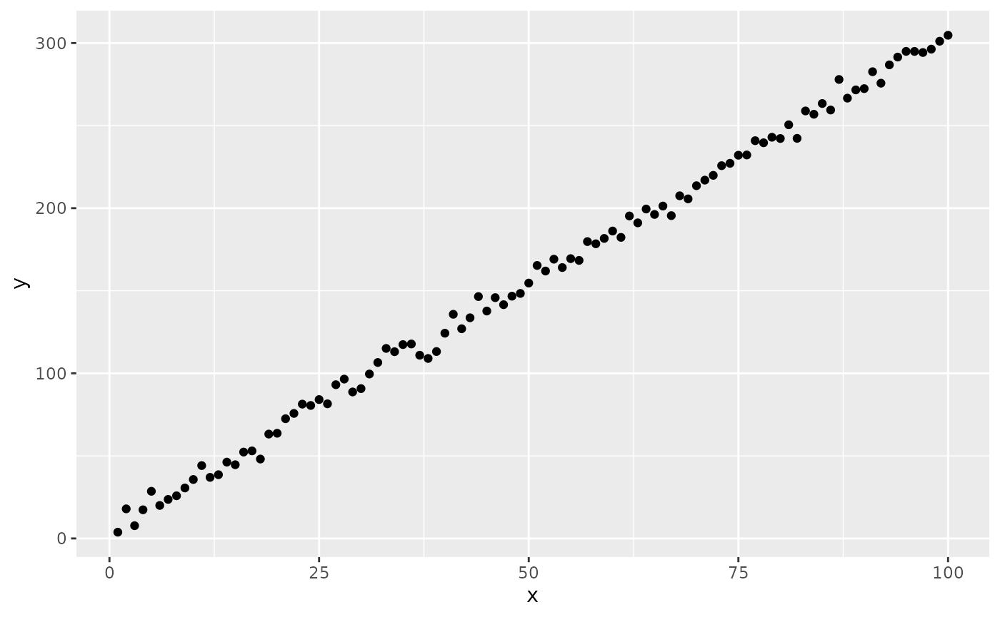
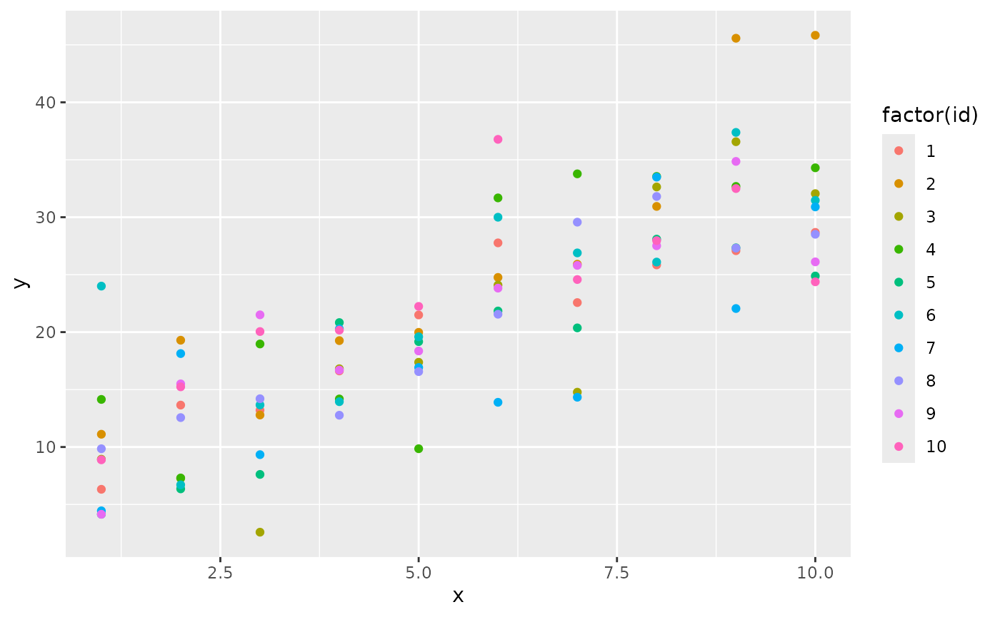
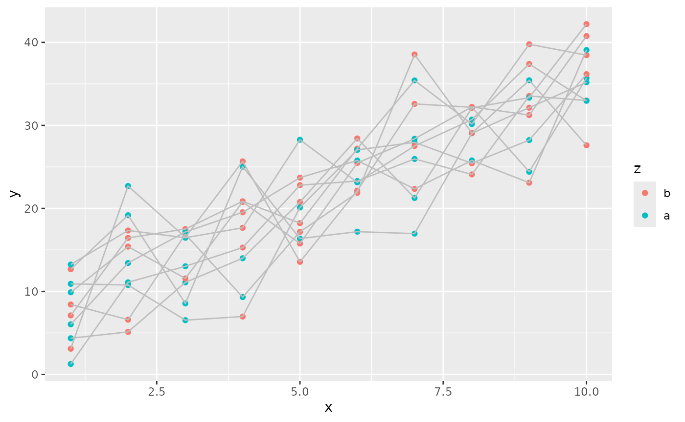
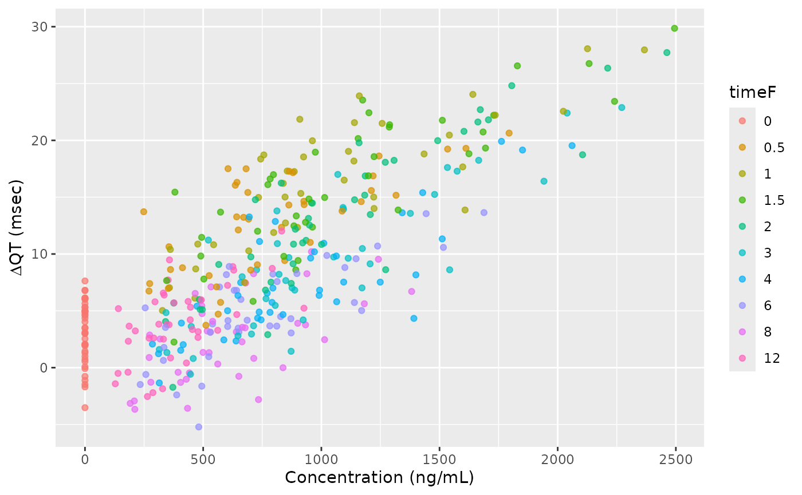

nlmixr2 Algebraic Solutions with Formula
Bill Denney
2026-06-04
Source:vignettes/articles/nlmixrFormula.Rmd
nlmixrFormula.RmdIntroduction
Some models are able to be described by simple algebraic solutions.
To simplify algebraic models, you can use a formula interface similar to
the formula used with the lme4 library. (The formula
interface is described in more detail below; knowledge of
lme4 is not required to use the formula interface.)
Quick start
The simplest, non-trivial model is a linear model,
y = m*x + b. We will generate the data for this model and
then fit it to show the simplest use case of the nlmixr2 formula
interface.
library(nlmixr2extra)
library(dplyr)
#>
#> Attaching package: 'dplyr'
#> The following objects are masked from 'package:stats':
#>
#> filter, lag
#> The following objects are masked from 'package:base':
#>
#> intersect, setdiff, setequal, union
library(ggplot2)
# Simulate the equation y = 3*x + 5 with normally-distributed residual error
# having a standard deviation of 5
withr::with_seed(
5, # standardize the random seed so that the results are reproducible
dSim <-
data.frame(
x = 1:100,
y =
(1:100)*3 +
5 +
rnorm(n = 100, mean = 0, sd = 5)
)
)
ggplot(dSim, aes(x=x, y=y)) + geom_point()
To fit this model requires only one line of R code:
mod <-
nlmixrFormula(
y~m*x + b,
data = dSim,
start = c(m = 2.5, b = 4, addSd = 2),
est = "focei"
)
#> ℹ parameter labels from comments are typically ignored in non-interactive mode
#> ℹ Need to run with the source intact to parse comments
#> → loading into symengine environment...
#> → pruning branches (`if`/`else`) of full model...
#> ✔ done
#> → finding duplicate expressions in EBE model...
#> [====|====|====|====|====|====|====|====|====|====] 0:00:00
#> → optimizing duplicate expressions in EBE model...
#> [====|====|====|====|====|====|====|====|====|====] 0:00:00
#> → compiling EBE model...
#> ✔ done
#> rxode2 5.1.2 using 2 threads (see ?getRxThreads)
#> no cache: create with `rxCreateCache()`
#> Key: U: Unscaled Parameters; X: Back-transformed parameters; G: Gill difference gradient approximation
#> F: Forward difference gradient approximation
#> C: Central difference gradient approximation
#> M: Mixed forward and central difference gradient approximation
#> Unscaled parameters for Omegas=chol(solve(omega));
#> Diagonals are transformed, as specified by foceiControl(diagXform=)
#> |-----+---------------+-----------+-----------+-----------|
#> | #| Objective Fun | m | b | addSd |
#> | 1| 23328.257 | -0.5000 | 1.000 | -1.000 |
#> | U| 23328.257 | 2.500 | 4.000 | 2.000 |
#> | X| 23328.257 | 2.500 | 4.000 | 2.000 |
#> | G| Gill Diff. |-3.500e+04 | -330.1 |-2.309e+04 |
#> | 2| 2279.8518 | 0.3347 | 1.008 | -0.4494 |
#> | U| 2279.8518 | 2.834 | 4.002 | 2.551 |
#> | X| 2279.8518 | 2.834 | 4.002 | 2.551 |
#> | F| Forward Diff. | -7625. | -73.34 | -1562. |
#> | 3| 2346.9758 | 1.129 | 1.016 | -1.057 |
#> | U| 2346.9758 | 3.152 | 4.004 | 1.943 |
#> | X| 2346.9758 | 3.152 | 4.004 | 1.943 |
#> | 4| 572.40937 | 0.7938 | 1.012 | -0.6304 |
#> | U| 572.40937 | 3.018 | 4.003 | 2.370 |
#> | X| 572.40937 | 3.018 | 4.003 | 2.370 |
#> | F| Forward Diff. | 19.71 | -2.381 | -253.1 |
#> | 5| 493.69538 | 0.7555 | 1.017 | -0.1384 |
#> | U| 493.69538 | 3.002 | 4.004 | 2.862 |
#> | X| 493.69538 | 3.002 | 4.004 | 2.862 |
#> | F| Forward Diff. | -492.7 | -6.353 | -128.2 |
#> | 6| 613.99834 | 0.9759 | 1.108 | 0.2938 |
#> | U| 613.99834 | 3.090 | 4.027 | 3.294 |
#> | X| 613.99834 | 3.090 | 4.027 | 3.294 |
#> | 7| 545.41103 | 0.8934 | 1.019 | -0.1025 |
#> | U| 545.41103 | 3.057 | 4.005 | 2.898 |
#> | X| 545.41103 | 3.057 | 4.005 | 2.898 |
#> | 8| 483.23786 | 0.7958 | 1.018 | -0.1279 |
#> | U| 483.23786 | 3.018 | 4.004 | 2.872 |
#> | X| 483.23786 | 3.018 | 4.004 | 2.872 |
#> | F| Forward Diff. | 39.65 | -1.374 | -119.9 |
#> | 9| 479.23921 | 0.7827 | 1.018 | -0.08838 |
#> | U| 479.23921 | 3.013 | 4.005 | 2.912 |
#> | X| 479.23921 | 3.013 | 4.005 | 2.912 |
#> | 10| 477.54576 | 0.7685 | 1.018 | -0.04538 |
#> | U| 477.54576 | 3.007 | 4.005 | 2.955 |
#> | X| 477.54576 | 3.007 | 4.005 | 2.955 |
#> | F| Forward Diff. | -300.9 | -4.454 | -108.9 |
#> | 11| 466.25271 | 0.7965 | 1.050 | 0.03049 |
#> | U| 466.25271 | 3.019 | 4.013 | 3.030 |
#> | X| 466.25271 | 3.019 | 4.013 | 3.030 |
#> | F| Forward Diff. | 47.96 | -1.108 | -95.36 |
#> | 12| 460.58498 | 0.7749 | 1.075 | 0.1109 |
#> | U| 460.58498 | 3.010 | 4.019 | 3.111 |
#> | X| 460.58498 | 3.010 | 4.019 | 3.111 |
#> | F| Forward Diff. | -193.3 | -3.271 | -85.89 |
#> | 13| 453.32377 | 0.7931 | 1.126 | 0.1791 |
#> | U| 453.32377 | 3.017 | 4.032 | 3.179 |
#> | X| 453.32377 | 3.017 | 4.032 | 3.179 |
#> | 14| 447.92451 | 0.7886 | 1.189 | 0.2525 |
#> | U| 447.92451 | 3.015 | 4.047 | 3.252 |
#> | X| 447.92451 | 3.015 | 4.047 | 3.252 |
#> | 15| 431.97160 | 0.7840 | 1.426 | 0.5327 |
#> | U| 431.9716 | 3.014 | 4.107 | 3.533 |
#> | X| 431.9716 | 3.014 | 4.107 | 3.533 |
#> | F| Forward Diff. | -42.65 | -1.447 | -45.03 |
#> | 16| 422.61969 | 0.7809 | 1.922 | 0.7694 |
#> | U| 422.61969 | 3.012 | 4.230 | 3.769 |
#> | X| 422.61969 | 3.012 | 4.230 | 3.769 |
#> | F| Forward Diff. | -25.86 | -1.054 | -30.36 |
#> | 17| 412.16509 | 0.7706 | 3.287 | 1.265 |
#> | U| 412.16509 | 3.008 | 4.572 | 4.265 |
#> | X| 412.16509 | 3.008 | 4.572 | 4.265 |
#> | F| Forward Diff. | -5.767 | -0.4524 | -10.36 |
#> | 18| 410.08451 | 0.7629 | 4.205 | 1.529 |
#> | U| 410.08451 | 3.005 | 4.801 | 4.529 |
#> | X| 410.08451 | 3.005 | 4.801 | 4.529 |
#> | F| Forward Diff. | -0.3733 | -0.2161 | -3.524 |
#> | 19| 409.68576 | 0.7573 | 4.838 | 1.676 |
#> | U| 409.68576 | 3.003 | 4.959 | 4.676 |
#> | X| 409.68576 | 3.003 | 4.959 | 4.676 |
#> | F| Forward Diff. | 1.114 | -0.09803 | -0.5017 |
#> | 20| 409.65396 | 0.7549 | 5.097 | 1.715 |
#> | U| 409.65396 | 3.002 | 5.024 | 4.715 |
#> | X| 409.65396 | 3.002 | 5.024 | 4.715 |
#> | F| Forward Diff. | 0.9183 | -0.06145 | 0.2053 |
#> | 21| 409.65396 | 0.7549 | 5.097 | 1.715 |
#> | U| 409.65396 | 3.002 | 5.024 | 4.715 |
#> | X| 409.65396 | 3.002 | 5.024 | 4.715 |
#> calculating covariance matrix
#> done
#> → Calculating residuals/tables
#> ✔ doneYou can also use a call to nlmixr or
nlmixr2, the arguments are the same as
nlmixrFormula:
mod <-
nlmixr(
y ~ m*x + b,
data = dSim,
start = c(m = 2.5, b = 4, addSd = 2),
est = "focei"
)
#> ℹ parameter labels from comments are typically ignored in non-interactive mode
#> ℹ Need to run with the source intact to parse comments
#> Key: U: Unscaled Parameters; X: Back-transformed parameters; G: Gill difference gradient approximation
#> F: Forward difference gradient approximation
#> C: Central difference gradient approximation
#> M: Mixed forward and central difference gradient approximation
#> Unscaled parameters for Omegas=chol(solve(omega));
#> Diagonals are transformed, as specified by foceiControl(diagXform=)
#> |-----+---------------+-----------+-----------+-----------|
#> | #| Objective Fun | m | b | addSd |
#> | 1| 23328.257 | -0.5000 | 1.000 | -1.000 |
#> | U| 23328.257 | 2.500 | 4.000 | 2.000 |
#> | X| 23328.257 | 2.500 | 4.000 | 2.000 |
#> | G| Gill Diff. |-3.500e+04 | -330.1 |-2.309e+04 |
#> | 2| 2279.8518 | 0.3347 | 1.008 | -0.4494 |
#> | U| 2279.8518 | 2.834 | 4.002 | 2.551 |
#> | X| 2279.8518 | 2.834 | 4.002 | 2.551 |
#> | F| Forward Diff. | -7625. | -73.34 | -1562. |
#> | 3| 2346.9758 | 1.129 | 1.016 | -1.057 |
#> | U| 2346.9758 | 3.152 | 4.004 | 1.943 |
#> | X| 2346.9758 | 3.152 | 4.004 | 1.943 |
#> | 4| 572.40937 | 0.7938 | 1.012 | -0.6304 |
#> | U| 572.40937 | 3.018 | 4.003 | 2.370 |
#> | X| 572.40937 | 3.018 | 4.003 | 2.370 |
#> | F| Forward Diff. | 19.71 | -2.381 | -253.1 |
#> | 5| 493.69538 | 0.7555 | 1.017 | -0.1384 |
#> | U| 493.69538 | 3.002 | 4.004 | 2.862 |
#> | X| 493.69538 | 3.002 | 4.004 | 2.862 |
#> | F| Forward Diff. | -492.7 | -6.353 | -128.2 |
#> | 6| 613.99834 | 0.9759 | 1.108 | 0.2938 |
#> | U| 613.99834 | 3.090 | 4.027 | 3.294 |
#> | X| 613.99834 | 3.090 | 4.027 | 3.294 |
#> | 7| 545.41103 | 0.8934 | 1.019 | -0.1025 |
#> | U| 545.41103 | 3.057 | 4.005 | 2.898 |
#> | X| 545.41103 | 3.057 | 4.005 | 2.898 |
#> | 8| 483.23786 | 0.7958 | 1.018 | -0.1279 |
#> | U| 483.23786 | 3.018 | 4.004 | 2.872 |
#> | X| 483.23786 | 3.018 | 4.004 | 2.872 |
#> | F| Forward Diff. | 39.65 | -1.374 | -119.9 |
#> | 9| 479.23921 | 0.7827 | 1.018 | -0.08838 |
#> | U| 479.23921 | 3.013 | 4.005 | 2.912 |
#> | X| 479.23921 | 3.013 | 4.005 | 2.912 |
#> | 10| 477.54576 | 0.7685 | 1.018 | -0.04538 |
#> | U| 477.54576 | 3.007 | 4.005 | 2.955 |
#> | X| 477.54576 | 3.007 | 4.005 | 2.955 |
#> | F| Forward Diff. | -300.9 | -4.454 | -108.9 |
#> | 11| 466.25271 | 0.7965 | 1.050 | 0.03049 |
#> | U| 466.25271 | 3.019 | 4.013 | 3.030 |
#> | X| 466.25271 | 3.019 | 4.013 | 3.030 |
#> | F| Forward Diff. | 47.96 | -1.108 | -95.36 |
#> | 12| 460.58498 | 0.7749 | 1.075 | 0.1109 |
#> | U| 460.58498 | 3.010 | 4.019 | 3.111 |
#> | X| 460.58498 | 3.010 | 4.019 | 3.111 |
#> | F| Forward Diff. | -193.3 | -3.271 | -85.89 |
#> | 13| 453.32377 | 0.7931 | 1.126 | 0.1791 |
#> | U| 453.32377 | 3.017 | 4.032 | 3.179 |
#> | X| 453.32377 | 3.017 | 4.032 | 3.179 |
#> | 14| 447.92451 | 0.7886 | 1.189 | 0.2525 |
#> | U| 447.92451 | 3.015 | 4.047 | 3.252 |
#> | X| 447.92451 | 3.015 | 4.047 | 3.252 |
#> | 15| 431.97160 | 0.7840 | 1.426 | 0.5327 |
#> | U| 431.9716 | 3.014 | 4.107 | 3.533 |
#> | X| 431.9716 | 3.014 | 4.107 | 3.533 |
#> | F| Forward Diff. | -42.65 | -1.447 | -45.03 |
#> | 16| 422.61969 | 0.7809 | 1.922 | 0.7694 |
#> | U| 422.61969 | 3.012 | 4.230 | 3.769 |
#> | X| 422.61969 | 3.012 | 4.230 | 3.769 |
#> | F| Forward Diff. | -25.86 | -1.054 | -30.36 |
#> | 17| 412.16509 | 0.7706 | 3.287 | 1.265 |
#> | U| 412.16509 | 3.008 | 4.572 | 4.265 |
#> | X| 412.16509 | 3.008 | 4.572 | 4.265 |
#> | F| Forward Diff. | -5.767 | -0.4524 | -10.36 |
#> | 18| 410.08451 | 0.7629 | 4.205 | 1.529 |
#> | U| 410.08451 | 3.005 | 4.801 | 4.529 |
#> | X| 410.08451 | 3.005 | 4.801 | 4.529 |
#> | F| Forward Diff. | -0.3733 | -0.2161 | -3.524 |
#> | 19| 409.68576 | 0.7573 | 4.838 | 1.676 |
#> | U| 409.68576 | 3.003 | 4.959 | 4.676 |
#> | X| 409.68576 | 3.003 | 4.959 | 4.676 |
#> | F| Forward Diff. | 1.114 | -0.09803 | -0.5017 |
#> | 20| 409.65396 | 0.7549 | 5.097 | 1.715 |
#> | U| 409.65396 | 3.002 | 5.024 | 4.715 |
#> | X| 409.65396 | 3.002 | 5.024 | 4.715 |
#> | F| Forward Diff. | 0.9183 | -0.06145 | 0.2053 |
#> | 21| 409.65396 | 0.7549 | 5.097 | 1.715 |
#> | U| 409.65396 | 3.002 | 5.024 | 4.715 |
#> | X| 409.65396 | 3.002 | 5.024 | 4.715 |
#> calculating covariance matrix
#> [====|====|====|====|====|====|====|====|====|====] 0:00:00
#> done
#> → Calculating residuals/tables
#> ✔ doneQuick start, mixed-effects model
A more typical use case for nlmixr2 is a mixed-effects model. It adds (subject-level) random effects to the model.
# Setup the dataset for nonlinear mixed-effects fitting
# Simulate the equation y = 3*x + 5 with normally-distributed residual error
# having a standard deviation of 5
withr::with_seed(
5, # standardize the random seed so that the results are reproducible
{
dSimSetup <-
data.frame(
id = rep(1:10, each=10),
x = rep(1:10, 10),
y = 1
)
dSimNlmePrep <-
nlmixrFormula(
y~m*x + b + bRe ~ bRe|id,
start = c(m=3, b=5, addSd=5),
data = dSimSetup,
est = "rxSolve"
)
}
)
#> ℹ parameter labels from comments are typically ignored in non-interactive mode
#> ℹ Need to run with the source intact to parse comments
# Modify the simulated results to be ready for fitting
dSimNlme <-
dSimNlmePrep |>
as.data.frame() |>
select(id, time, x, y=sim)
ggplot(dSimNlme, aes(x=x, y=y, colour=factor(id))) + geom_point()
mod <-
nlmixr(
y~m*x + b + bRe ~ bRe|id,
start = c(m=3, b=5, addSd=5),
data = dSimNlme,
est = "focei"
)
#> ℹ parameter labels from comments are typically ignored in non-interactive mode
#> ℹ Need to run with the source intact to parse comments
#> → loading into symengine environment...
#> → pruning branches (`if`/`else`) of full model...
#> ✔ done
#> → calculate jacobian
#> → calculate ∂(f)/∂(η)
#> [====|====|====|====|====|====|====|====|====|====] 0:00:00
#> → calculate ∂(R²)/∂(η)
#> [====|====|====|====|====|====|====|====|====|====] 0:00:00
#> → finding duplicate expressions in inner model...
#> [====|====|====|====|====|====|====|====|====|====] 0:00:00
#>
#> [====|====|====|====|====|====|====|====|====|====] 0:00:00
#> → finding duplicate expressions in EBE model...
#> [====|====|====|====|====|====|====|====|====|====] 0:00:00
#> → optimizing duplicate expressions in EBE model...
#> [====|====|====|====|====|====|====|====|====|====] 0:00:00
#> → compiling inner model...
#> ✔ done
#> → finding duplicate expressions in FD model...
#> [====|====|====|====|====|====|====|====|====|====] 0:00:00
#> → compiling EBE model...
#> ✔ done
#> → compiling events FD model...
#> ✔ done
#> Key: U: Unscaled Parameters; X: Back-transformed parameters; G: Gill difference gradient approximation
#> F: Forward difference gradient approximation
#> C: Central difference gradient approximation
#> M: Mixed forward and central difference gradient approximation
#> Unscaled parameters for Omegas=chol(solve(omega));
#> Diagonals are transformed, as specified by foceiControl(diagXform=)
#> |-----+---------------+-----------+-----------+-----------+-----------|
#> | #| Objective Fun | m | b | addSd | o1 |
#> | 1| 437.57349 | 0.000 | 1.000 | 1.000 | -1.000 |
#> | U| 437.57349 | 3.000 | 5.000 | 5.000 | 1.000 |
#> | X| 437.57349 | 3.000 | 5.000 | 5.000 | 1.000 |
#> | G| Gill Diff. | 9.554 | 0.2498 | -10.84 | 5.831 |
#> | 2| 447.38182 | -0.6187 | 0.9838 | 1.702 | -1.331 |
#> | U| 447.38182 | 2.794 | 4.997 | 6.754 | 0.6687 |
#> | X| 447.38182 | 2.794 | 4.997 | 6.754 | 0.6687 |
#> | 3| 435.98656 | -0.1862 | 0.9951 | 1.211 | -1.114 |
#> | U| 435.98656 | 2.938 | 4.999 | 5.528 | 0.8864 |
#> | X| 435.98656 | 2.938 | 4.999 | 5.528 | 0.8864 |
#> | F| Forward Diff. | 3.858 | -0.1058 | 9.655 | 1.970 |
#> | 4| 434.98780 | -0.3503 | 0.9971 | 0.9716 | -1.202 |
#> | U| 434.9878 | 2.883 | 4.999 | 4.929 | 0.7979 |
#> | X| 434.9878 | 2.883 | 4.999 | 4.929 | 0.7979 |
#> | F| Forward Diff. | 1.660 | -0.3465 | -8.513 | 2.806 |
#> | 5| 435.56389 | -0.4540 | 1.023 | 1.164 | -1.331 |
#> | U| 435.56389 | 2.849 | 5.005 | 5.411 | 0.6687 |
#> | X| 435.56389 | 2.849 | 5.005 | 5.411 | 0.6687 |
#> | 6| 434.58752 | -0.3687 | 1.001 | 1.066 | -1.233 |
#> | U| 434.58752 | 2.877 | 5.000 | 5.165 | 0.7668 |
#> | X| 434.58752 | 2.877 | 5.000 | 5.165 | 0.7668 |
#> | F| Forward Diff. | 1.264 | -0.3289 | 1.011 | -0.4086 |
#> | 7| 434.57794 | -0.4572 | 1.035 | 1.053 | -1.201 |
#> | U| 434.57794 | 2.848 | 5.007 | 5.133 | 0.7995 |
#> | X| 434.57794 | 2.848 | 5.007 | 5.133 | 0.7995 |
#> | F| Forward Diff. | -0.7021 | -0.4820 | -0.3326 | 2.621 |
#> | 8| 434.52858 | -0.4444 | 1.044 | 1.059 | -1.248 |
#> | U| 434.52858 | 2.852 | 5.009 | 5.148 | 0.7517 |
#> | X| 434.52858 | 2.852 | 5.009 | 5.148 | 0.7517 |
#> | F| Forward Diff. | 0.05802 | -0.4063 | 0.8130 | -0.8299 |
#> | 9| 434.50968 | -0.4580 | 1.088 | 1.039 | -1.242 |
#> | U| 434.50968 | 2.847 | 5.018 | 5.098 | 0.7576 |
#> | X| 434.50968 | 2.847 | 5.018 | 5.098 | 0.7576 |
#> | F| Forward Diff. | -0.1660 | -0.4284 | -0.9737 | -0.01027 |
#> | 10| 434.48385 | -0.4435 | 1.133 | 1.052 | -1.231 |
#> | U| 434.48385 | 2.852 | 5.027 | 5.131 | 0.7685 |
#> | X| 434.48385 | 2.852 | 5.027 | 5.131 | 0.7685 |
#> | F| Forward Diff. | 0.02828 | -0.4130 | 0.009396 | 0.4440 |
#> | 11| 434.47834 | -0.4477 | 1.178 | 1.053 | -1.254 |
#> | U| 434.47834 | 2.851 | 5.036 | 5.133 | 0.7460 |
#> | X| 434.47834 | 2.851 | 5.036 | 5.133 | 0.7460 |
#> | F| Forward Diff. | 0.2384 | -0.3865 | 0.3853 | -1.363 |
#> | 12| 434.44575 | -0.4517 | 1.227 | 1.050 | -1.241 |
#> | U| 434.44575 | 2.849 | 5.045 | 5.125 | 0.7589 |
#> | X| 434.44575 | 2.849 | 5.045 | 5.125 | 0.7589 |
#> | 13| 434.40786 | -0.4548 | 1.343 | 1.054 | -1.250 |
#> | U| 434.40786 | 2.848 | 5.069 | 5.136 | 0.7505 |
#> | X| 434.40786 | 2.848 | 5.069 | 5.136 | 0.7505 |
#> | 14| 434.23129 | -0.4735 | 1.792 | 1.058 | -1.240 |
#> | U| 434.23129 | 2.842 | 5.158 | 5.145 | 0.7600 |
#> | X| 434.23129 | 2.842 | 5.158 | 5.145 | 0.7600 |
#> | F| Forward Diff. | 0.3957 | -0.3477 | 0.8018 | -0.6666 |
#> | 15| 433.45316 | -0.6308 | 4.243 | 1.053 | -1.217 |
#> | U| 433.45316 | 2.790 | 5.649 | 5.133 | 0.7828 |
#> | X| 433.45316 | 2.790 | 5.649 | 5.133 | 0.7828 |
#> | 16| 432.91011 | -0.9014 | 8.459 | 1.045 | -1.178 |
#> | U| 432.91011 | 2.700 | 6.492 | 5.113 | 0.8219 |
#> | X| 432.91011 | 2.700 | 6.492 | 5.113 | 0.8219 |
#> | F| Forward Diff. | 1.076 | 0.05140 | -0.02365 | 2.096 |
#> | 17| 433.01569 | -1.096 | 9.012 | 1.082 | -1.204 |
#> | U| 433.01569 | 2.635 | 6.602 | 5.204 | 0.7963 |
#> | X| 433.01569 | 2.635 | 6.602 | 5.204 | 0.7963 |
#> | 18| 432.86244 | -0.9718 | 8.648 | 1.058 | -1.194 |
#> | U| 432.86244 | 2.676 | 6.530 | 5.144 | 0.8055 |
#> | X| 432.86244 | 2.676 | 6.530 | 5.144 | 0.8055 |
#> | F| Forward Diff. | -0.1047 | -0.02345 | 1.316 | 1.115 |
#> | 19| 432.83892 | -0.9885 | 8.847 | 1.034 | -1.219 |
#> | U| 432.83892 | 2.670 | 6.569 | 5.085 | 0.7812 |
#> | X| 432.83892 | 2.670 | 6.569 | 5.085 | 0.7812 |
#> | F| Forward Diff. | -0.1439 | -0.01523 | -0.4672 | -0.02991 |
#> | 20| 432.83892 | -0.9885 | 8.847 | 1.034 | -1.219 |
#> | U| 432.83892 | 2.670 | 6.569 | 5.085 | 0.7812 |
#> | X| 432.83892 | 2.670 | 6.569 | 5.085 | 0.7812 |
#> calculating covariance matrix
#> done
#> → Calculating residuals/tables
#> ✔ done
modIn this model, the fixed effects of m and b
were estimated along with the random effect of bRe.
Quick start, automatic parameter fixed effects
# Setup the dataset for nonlinear mixed-effects fitting with different types of
# parameters.
# Simulate the equation y = 3*x + 4(when z = 'a') or 6(when z = 'b') with normally-distributed residual error
# having a standard deviation of 5
withr::with_seed(
5, # standardize the random seed so that the results are reproducible
{
dSimSetup <-
data.frame(
id = rep(1:10, each=10),
x = rep(1:10, 10),
y = 1,
z = sample(factor(c("a", "b")), size = 100, replace = TRUE)
)
# Note that we need to give `start` as a list so that `b` can carry one
# starting value per factor level of `z` (named-vector `c()` cannot hold
# multi-element entries).
dSimNlmePrep <-
nlmixrFormula(
y~m*x + b + bRe ~ bRe|id,
start = list(m=3, b=c(4, 2), addSd=5),
param = list(b ~ z),
data = dSimSetup,
est = "rxSolve"
)
}
)
#> ℹ parameter labels from comments are typically ignored in non-interactive mode
#> ℹ Need to run with the source intact to parse comments
# Modify the simulated results to be ready for fitting
dSimNlme <-
dSimNlmePrep |>
as.data.frame() |>
select(id, time, x, y=sim, z)
ggplot(dSimNlme, aes(x=x, y=y, colour=z)) +
geom_point() +
geom_line(aes(group = id), colour = "gray")
mod <-
nlmixr(
y~m*x + b + bRe ~ bRe|id,
start = list(m=3, b=c(4, 2), addSd=5),
param = list(b ~ z),
data = dSimNlme,
est = "focei"
)
#> ℹ parameter labels from comments are typically ignored in non-interactive mode
#> ℹ Need to run with the source intact to parse comments
#> → loading into symengine environment...
#> → pruning branches (`if`/`else`) of full model...
#> ✔ done
#> → calculate jacobian
#> → calculate ∂(f)/∂(η)
#> [====|====|====|====|====|====|====|====|====|====] 0:00:00
#> → calculate ∂(R²)/∂(η)
#> [====|====|====|====|====|====|====|====|====|====] 0:00:00
#> → finding duplicate expressions in inner model...
#> [====|====|====|====|====|====|====|====|====|====] 0:00:00
#>
#> [====|====|====|====|====|====|====|====|====|====] 0:00:00
#> → finding duplicate expressions in EBE model...
#> [====|====|====|====|====|====|====|====|====|====] 0:00:00
#> → optimizing duplicate expressions in EBE model...
#> [====|====|====|====|====|====|====|====|====|====] 0:00:00
#> → compiling inner model...
#> ✔ done
#> → finding duplicate expressions in FD model...
#> [====|====|====|====|====|====|====|====|====|====] 0:00:00
#> → compiling EBE model...
#> ✔ done
#> → compiling events FD model...
#> ✔ done
#> Key: U: Unscaled Parameters; X: Back-transformed parameters; G: Gill difference gradient approximation
#> F: Forward difference gradient approximation
#> C: Central difference gradient approximation
#> M: Mixed forward and central difference gradient approximation
#> Unscaled parameters for Omegas=chol(solve(omega));
#> Diagonals are transformed, as specified by foceiControl(diagXform=)
#> |-----+---------------+-----------+-----------+-----------+-----------|
#> | #| Objective Fun | m | b.z.b | b.z.a | addSd |
#> |.....................| o1 |...........|...........|...........|
#> | 1| 416.24007 | 0.000 | 0.5000 | -0.5000 | 1.000 |
#> |.....................| -1.000 |...........|...........|...........|
#> | U| 416.24007 | 3.000 | 4.000 | 2.000 | 5.000 |
#> |.....................| 1.000 |...........|...........|...........|
#> | X| 416.24007 | 3.000 | 4.000 | 2.000 | 5.000 |
#> |.....................| 1.000 |...........|...........|...........|
#> | G| Gill Diff. | -7.468 | -0.9330 | 1.466 | 9.291 |
#> |.....................| 1.034 |...........|...........|...........|
#> | 2| 462.53923 | 0.6177 | 0.5772 | -0.6212 | 0.2315 |
#> |.....................| -1.086 |...........|...........|...........|
#> | U| 462.53923 | 3.206 | 4.019 | 1.939 | 3.079 |
#> |.....................| 0.9145 |...........|...........|...........|
#> | X| 462.53923 | 3.206 | 4.019 | 1.939 | 3.079 |
#> |.....................| 0.9145 |...........|...........|...........|
#> | 3| 415.28678 | 0.06395 | 0.5080 | -0.5126 | 0.9204 |
#> |.....................| -1.009 |...........|...........|...........|
#> | U| 415.28678 | 3.021 | 4.002 | 1.994 | 4.801 |
#> |.....................| 0.9911 |...........|...........|...........|
#> | X| 415.28678 | 3.021 | 4.002 | 1.994 | 4.801 |
#> |.....................| 0.9911 |...........|...........|...........|
#> | F| Forward Diff. | -6.059 | -0.8034 | 1.749 | 2.632 |
#> |.....................| 1.252 |...........|...........|...........|
#> | 4| 414.74152 | 0.1536 | 0.5199 | -0.5384 | 0.8815 |
#> |.....................| -1.027 |...........|...........|...........|
#> | U| 414.74152 | 3.051 | 4.005 | 1.981 | 4.704 |
#> |.....................| 0.9726 |...........|...........|...........|
#> | X| 414.74152 | 3.051 | 4.005 | 1.981 | 4.704 |
#> |.....................| 0.9726 |...........|...........|...........|
#> | 5| 414.57365 | 0.2456 | 0.5321 | -0.5650 | 0.8415 |
#> |.....................| -1.046 |...........|...........|...........|
#> | U| 414.57365 | 3.082 | 4.008 | 1.968 | 4.604 |
#> |.....................| 0.9536 |...........|...........|...........|
#> | X| 414.57365 | 3.082 | 4.008 | 1.968 | 4.604 |
#> |.....................| 0.9536 |...........|...........|...........|
#> | F| Forward Diff. | -0.9158 | -0.3161 | 2.318 | -4.951 |
#> |.....................| 0.4194 |...........|...........|...........|
#> | 6| 415.25020 | 0.2801 | 0.5440 | -0.6522 | 1.028 |
#> |.....................| -1.062 |...........|...........|...........|
#> | U| 415.2502 | 3.093 | 4.011 | 1.924 | 5.070 |
#> |.....................| 0.9378 |...........|...........|...........|
#> | X| 415.2502 | 3.093 | 4.011 | 1.924 | 5.070 |
#> |.....................| 0.9378 |...........|...........|...........|
#> | 7| 414.40793 | 0.2565 | 0.5358 | -0.5926 | 0.9005 |
#> |.....................| -1.051 |...........|...........|...........|
#> | U| 414.40793 | 3.086 | 4.009 | 1.954 | 4.751 |
#> |.....................| 0.9486 |...........|...........|...........|
#> | X| 414.40793 | 3.086 | 4.009 | 1.954 | 4.751 |
#> |.....................| 0.9486 |...........|...........|...........|
#> | F| Forward Diff. | -0.6488 | -0.2808 | 2.185 | 1.660 |
#> |.....................| -0.3571 |...........|...........|...........|
#> | 8| 414.29917 | 0.2716 | 0.5424 | -0.6434 | 0.8620 |
#> |.....................| -1.043 |...........|...........|...........|
#> | U| 414.29917 | 3.091 | 4.011 | 1.928 | 4.655 |
#> |.....................| 0.9569 |...........|...........|...........|
#> | X| 414.29917 | 3.091 | 4.011 | 1.928 | 4.655 |
#> |.....................| 0.9569 |...........|...........|...........|
#> | F| Forward Diff. | -0.3476 | -0.2664 | 2.270 | -2.442 |
#> |.....................| 0.1382 |...........|...........|...........|
#> | 9| 414.17047 | 0.2768 | 0.5483 | -0.6958 | 0.9019 |
#> |.....................| -1.044 |...........|...........|...........|
#> | U| 414.17047 | 3.092 | 4.012 | 1.902 | 4.755 |
#> |.....................| 0.9564 |...........|...........|...........|
#> | X| 414.17047 | 3.092 | 4.012 | 1.902 | 4.755 |
#> |.....................| 0.9564 |...........|...........|...........|
#> | F| Forward Diff. | -0.3231 | -0.2611 | 2.151 | 1.939 |
#> |.....................| -0.3191 |...........|...........|...........|
#> | 10| 414.06396 | 0.2832 | 0.5543 | -0.7468 | 0.8609 |
#> |.....................| -1.037 |...........|...........|...........|
#> | U| 414.06396 | 3.094 | 4.014 | 1.877 | 4.652 |
#> |.....................| 0.9634 |...........|...........|...........|
#> | X| 414.06396 | 3.094 | 4.014 | 1.877 | 4.652 |
#> |.....................| 0.9634 |...........|...........|...........|
#> | F| Forward Diff. | -0.2528 | -0.2698 | 2.217 | -2.396 |
#> |.....................| 0.1859 |...........|...........|...........|
#> | 11| 413.93445 | 0.2858 | 0.5607 | -0.8008 | 0.8988 |
#> |.....................| -1.039 |...........|...........|...........|
#> | U| 413.93445 | 3.095 | 4.015 | 1.850 | 4.747 |
#> |.....................| 0.9610 |...........|...........|...........|
#> | X| 413.93445 | 3.095 | 4.015 | 1.850 | 4.747 |
#> |.....................| 0.9610 |...........|...........|...........|
#> | F| Forward Diff. | -0.3046 | -0.2717 | 2.095 | 1.804 |
#> |.....................| -0.2785 |...........|...........|...........|
#> | 12| 413.83324 | 0.2921 | 0.5673 | -0.8525 | 0.8587 |
#> |.....................| -1.033 |...........|...........|...........|
#> | U| 413.83324 | 3.097 | 4.017 | 1.824 | 4.647 |
#> |.....................| 0.9673 |...........|...........|...........|
#> | X| 413.83324 | 3.097 | 4.017 | 1.824 | 4.647 |
#> |.....................| 0.9673 |...........|...........|...........|
#> | F| Forward Diff. | -0.2330 | -0.2806 | 2.156 | -2.452 |
#> |.....................| 0.1969 |...........|...........|...........|
#> | 13| 413.70173 | 0.2940 | 0.5743 | -0.9072 | 0.8955 |
#> |.....................| -1.035 |...........|...........|...........|
#> | U| 413.70173 | 3.098 | 4.019 | 1.796 | 4.739 |
#> |.....................| 0.9648 |...........|...........|...........|
#> | X| 413.70173 | 3.098 | 4.019 | 1.796 | 4.739 |
#> |.....................| 0.9648 |...........|...........|...........|
#> | F| Forward Diff. | -0.3040 | -0.2842 | 2.037 | 1.648 |
#> |.....................| -0.2544 |...........|...........|...........|
#> | 14| 413.60771 | 0.3010 | 0.5815 | -0.9593 | 0.8561 |
#> |.....................| -1.029 |...........|...........|...........|
#> | U| 413.60771 | 3.100 | 4.020 | 1.770 | 4.640 |
#> |.....................| 0.9709 |...........|...........|...........|
#> | X| 413.60771 | 3.100 | 4.020 | 1.770 | 4.640 |
#> |.....................| 0.9709 |...........|...........|...........|
#> | F| Forward Diff. | -0.2106 | -0.2914 | 2.096 | -2.562 |
#> |.....................| 0.2052 |...........|...........|...........|
#> | 15| 413.47335 | 0.3023 | 0.5893 | -1.014 | 0.8920 |
#> |.....................| -1.031 |...........|...........|...........|
#> | U| 413.47335 | 3.101 | 4.022 | 1.743 | 4.730 |
#> |.....................| 0.9685 |...........|...........|...........|
#> | X| 413.47335 | 3.101 | 4.022 | 1.743 | 4.730 |
#> |.....................| 0.9685 |...........|...........|...........|
#> | F| Forward Diff. | -0.2992 | -0.2964 | 1.979 | 1.466 |
#> |.....................| -0.2295 |...........|...........|...........|
#> | 16| 413.38762 | 0.3102 | 0.5971 | -1.067 | 0.8532 |
#> |.....................| -1.025 |...........|...........|...........|
#> | U| 413.38762 | 3.103 | 4.024 | 1.717 | 4.633 |
#> |.....................| 0.9746 |...........|...........|...........|
#> | X| 413.38762 | 3.103 | 4.024 | 1.717 | 4.633 |
#> |.....................| 0.9746 |...........|...........|...........|
#> | F| Forward Diff. | -0.1778 | -0.3012 | 2.036 | -2.703 |
#> |.....................| 0.2155 |...........|...........|...........|
#> | 17| 413.25038 | 0.3109 | 0.6056 | -1.122 | 0.8886 |
#> |.....................| -1.028 |...........|...........|...........|
#> | U| 413.25038 | 3.104 | 4.026 | 1.689 | 4.721 |
#> |.....................| 0.9724 |...........|...........|...........|
#> | X| 413.25038 | 3.104 | 4.026 | 1.689 | 4.721 |
#> |.....................| 0.9724 |...........|...........|...........|
#> | F| Forward Diff. | -0.2855 | -0.3077 | 1.920 | 1.283 |
#> |.....................| -0.2054 |...........|...........|...........|
#> | 18| 413.16449 | 0.3190 | 0.6143 | -1.176 | 0.8524 |
#> |.....................| -1.022 |...........|...........|...........|
#> | U| 413.16449 | 3.106 | 4.029 | 1.662 | 4.631 |
#> |.....................| 0.9782 |...........|...........|...........|
#> | X| 413.16449 | 3.106 | 4.029 | 1.662 | 4.631 |
#> |.....................| 0.9782 |...........|...........|...........|
#> | F| Forward Diff. | -0.1616 | -0.3121 | 1.969 | -2.608 |
#> |.....................| 0.2021 |...........|...........|...........|
#> | 19| 413.03075 | 0.3195 | 0.6237 | -1.233 | 0.8864 |
#> |.....................| -1.024 |...........|...........|...........|
#> | U| 413.03075 | 3.107 | 4.031 | 1.634 | 4.716 |
#> |.....................| 0.9763 |...........|...........|...........|
#> | X| 413.03075 | 3.107 | 4.031 | 1.634 | 4.716 |
#> |.....................| 0.9763 |...........|...........|...........|
#> | F| Forward Diff. | -0.2734 | -0.3190 | 1.858 | 1.231 |
#> |.....................| -0.1960 |...........|...........|...........|
#> | 20| 412.94954 | 0.3275 | 0.6330 | -1.287 | 0.8505 |
#> |.....................| -1.018 |...........|...........|...........|
#> | U| 412.94954 | 3.109 | 4.033 | 1.607 | 4.626 |
#> |.....................| 0.9820 |...........|...........|...........|
#> | X| 412.94954 | 3.109 | 4.033 | 1.607 | 4.626 |
#> |.....................| 0.9820 |...........|...........|...........|
#> | F| Forward Diff. | -0.1485 | -0.3237 | 1.903 | -2.648 |
#> |.....................| 0.2032 |...........|...........|...........|
#> | 21| 412.81646 | 0.3279 | 0.6435 | -1.343 | 0.8838 |
#> |.....................| -1.020 |...........|...........|...........|
#> | U| 412.81646 | 3.109 | 4.036 | 1.578 | 4.710 |
#> |.....................| 0.9802 |...........|...........|...........|
#> | X| 412.81646 | 3.109 | 4.036 | 1.578 | 4.710 |
#> |.....................| 0.9802 |...........|...........|...........|
#> | F| Forward Diff. | -0.2636 | -0.3307 | 1.795 | 1.121 |
#> |.....................| -0.1804 |...........|...........|...........|
#> | 22| 412.73702 | 0.3360 | 0.6536 | -1.398 | 0.8495 |
#> |.....................| -1.014 |...........|...........|...........|
#> | U| 412.73702 | 3.112 | 4.038 | 1.551 | 4.624 |
#> |.....................| 0.9857 |...........|...........|...........|
#> | X| 412.73702 | 3.112 | 4.038 | 1.551 | 4.624 |
#> |.....................| 0.9857 |...........|...........|...........|
#> | F| Forward Diff. | -0.1345 | -0.3350 | 1.835 | -2.600 |
#> |.....................| 0.1950 |...........|...........|...........|
#> | 23| 412.60687 | 0.3364 | 0.6651 | -1.455 | 0.8816 |
#> |.....................| -1.016 |...........|...........|...........|
#> | U| 412.60687 | 3.112 | 4.041 | 1.522 | 4.704 |
#> |.....................| 0.9842 |...........|...........|...........|
#> | X| 412.60687 | 3.112 | 4.041 | 1.522 | 4.704 |
#> |.....................| 0.9842 |...........|...........|...........|
#> | F| Forward Diff. | -0.2505 | -0.3419 | 1.731 | 1.051 |
#> |.....................| -0.1696 |...........|...........|...........|
#> | 24| 412.53092 | 0.3444 | 0.6761 | -1.510 | 0.8480 |
#> |.....................| -1.010 |...........|...........|...........|
#> | U| 412.53092 | 3.115 | 4.044 | 1.495 | 4.620 |
#> |.....................| 0.9897 |...........|...........|...........|
#> | X| 412.53092 | 3.115 | 4.044 | 1.495 | 4.620 |
#> |.....................| 0.9897 |...........|...........|...........|
#> | F| Forward Diff. | -0.1208 | -0.3463 | 1.767 | -2.600 |
#> |.....................| 0.1921 |...........|...........|...........|
#> | 25| 412.40285 | 0.3448 | 0.6888 | -1.568 | 0.8793 |
#> |.....................| -1.012 |...........|...........|...........|
#> | U| 412.40285 | 3.115 | 4.047 | 1.466 | 4.698 |
#> |.....................| 0.9884 |...........|...........|...........|
#> | X| 412.40285 | 3.115 | 4.047 | 1.466 | 4.698 |
#> |.....................| 0.9884 |...........|...........|...........|
#> | F| Forward Diff. | -0.2375 | -0.3531 | 1.667 | 0.9625 |
#> |.....................| -0.1571 |...........|...........|...........|
#> | 26| 412.32907 | 0.3528 | 0.7006 | -1.623 | 0.8470 |
#> |.....................| -1.006 |...........|...........|...........|
#> | U| 412.32907 | 3.118 | 4.050 | 1.438 | 4.618 |
#> |.....................| 0.9936 |...........|...........|...........|
#> | X| 412.32907 | 3.118 | 4.050 | 1.438 | 4.618 |
#> |.....................| 0.9936 |...........|...........|...........|
#> | F| Forward Diff. | -0.1069 | -0.3574 | 1.698 | -2.556 |
#> |.....................| 0.1849 |...........|...........|...........|
#> | 27| 412.20424 | 0.3531 | 0.7146 | -1.681 | 0.8772 |
#> |.....................| -1.007 |...........|...........|...........|
#> | U| 412.20424 | 3.118 | 4.054 | 1.410 | 4.693 |
#> |.....................| 0.9926 |...........|...........|...........|
#> | X| 412.20424 | 3.118 | 4.054 | 1.410 | 4.693 |
#> |.....................| 0.9926 |...........|...........|...........|
#> | F| Forward Diff. | -0.2230 | -0.3641 | 1.601 | 0.8938 |
#> |.....................| -0.1469 |...........|...........|...........|
#> | 28| 412.13346 | 0.3609 | 0.7274 | -1.737 | 0.8458 |
#> |.....................| -1.002 |...........|...........|...........|
#> | U| 412.13346 | 3.120 | 4.057 | 1.381 | 4.615 |
#> |.....................| 0.9977 |...........|...........|...........|
#> | X| 412.13346 | 3.120 | 4.057 | 1.381 | 4.615 |
#> |.....................| 0.9977 |...........|...........|...........|
#> | F| Forward Diff. | -0.09361 | -0.3685 | 1.629 | -2.536 |
#> |.....................| 0.1804 |...........|...........|...........|
#> | 29| 412.01156 | 0.3613 | 0.7427 | -1.795 | 0.8752 |
#> |.....................| -1.003 |...........|...........|...........|
#> | U| 412.01156 | 3.120 | 4.061 | 1.353 | 4.688 |
#> |.....................| 0.9969 |...........|...........|...........|
#> | X| 412.01156 | 3.120 | 4.061 | 1.353 | 4.688 |
#> |.....................| 0.9969 |...........|...........|...........|
#> | F| Forward Diff. | -0.2083 | -0.3749 | 1.536 | 0.8173 |
#> |.....................| -0.1362 |...........|...........|...........|
#> | 30| 411.94297 | 0.3689 | 0.7565 | -1.851 | 0.8450 |
#> |.....................| -0.9981 |...........|...........|...........|
#> | U| 411.94297 | 3.123 | 4.064 | 1.324 | 4.612 |
#> |.....................| 1.002 |...........|...........|...........|
#> | X| 411.94297 | 3.123 | 4.064 | 1.324 | 4.612 |
#> |.....................| 1.002 |...........|...........|...........|
#> | F| Forward Diff. | -0.08056 | -0.3794 | 1.559 | -2.486 |
#> |.....................| 0.1733 |...........|...........|...........|
#> | 31| 411.82476 | 0.3693 | 0.7733 | -1.909 | 0.8733 |
#> |.....................| -0.9987 |...........|...........|...........|
#> | U| 411.82476 | 3.123 | 4.068 | 1.296 | 4.683 |
#> |.....................| 1.001 |...........|...........|...........|
#> | X| 411.82476 | 3.123 | 4.068 | 1.296 | 4.683 |
#> |.....................| 1.001 |...........|...........|...........|
#> | F| Forward Diff. | -0.1928 | -0.3855 | 1.469 | 0.7537 |
#> |.....................| -0.1270 |...........|...........|...........|
#> | 32| 411.75892 | 0.3767 | 0.7882 | -1.966 | 0.8441 |
#> |.....................| -0.9938 |...........|...........|...........|
#> | U| 411.75892 | 3.126 | 4.072 | 1.267 | 4.610 |
#> |.....................| 1.006 |...........|...........|...........|
#> | X| 411.75892 | 3.126 | 4.072 | 1.267 | 4.610 |
#> |.....................| 1.006 |...........|...........|...........|
#> | F| Forward Diff. | -0.06828 | -0.3902 | 1.488 | -2.452 |
#> |.....................| 0.1680 |...........|...........|...........|
#> | 33| 411.64422 | 0.3771 | 0.8065 | -2.024 | 0.8715 |
#> |.....................| -0.9943 |...........|...........|...........|
#> | U| 411.64422 | 3.126 | 4.077 | 1.238 | 4.679 |
#> |.....................| 1.006 |...........|...........|...........|
#> | X| 411.64422 | 3.126 | 4.077 | 1.238 | 4.679 |
#> |.....................| 1.006 |...........|...........|...........|
#> | F| Forward Diff. | -0.1772 | -0.3958 | 1.403 | 0.6859 |
#> |.....................| -0.1176 |...........|...........|...........|
#> | 34| 411.58048 | 0.3843 | 0.8227 | -2.081 | 0.8434 |
#> |.....................| -0.9895 |...........|...........|...........|
#> | U| 411.58048 | 3.128 | 4.081 | 1.210 | 4.609 |
#> |.....................| 1.011 |...........|...........|...........|
#> | X| 411.58048 | 3.128 | 4.081 | 1.210 | 4.609 |
#> |.....................| 1.011 |...........|...........|...........|
#> | F| Forward Diff. | -0.05664 | -0.4007 | 1.417 | -2.392 |
#> |.....................| 0.1606 |...........|...........|...........|
#> | 35| 411.46992 | 0.3847 | 0.8426 | -2.138 | 0.8698 |
#> |.....................| -0.9897 |...........|...........|...........|
#> | U| 411.46992 | 3.128 | 4.086 | 1.181 | 4.674 |
#> |.....................| 1.010 |...........|...........|...........|
#> | X| 411.46992 | 3.128 | 4.086 | 1.181 | 4.674 |
#> |.....................| 1.010 |...........|...........|...........|
#> | F| Forward Diff. | -0.1613 | -0.4058 | 1.336 | 0.6289 |
#> |.....................| -0.1094 |...........|...........|...........|
#> | 36| 411.40875 | 0.3916 | 0.8600 | -2.196 | 0.8427 |
#> |.....................| -0.9850 |...........|...........|...........|
#> | U| 411.40875 | 3.131 | 4.090 | 1.152 | 4.607 |
#> |.....................| 1.015 |...........|...........|...........|
#> | X| 411.40875 | 3.131 | 4.090 | 1.152 | 4.607 |
#> |.....................| 1.015 |...........|...........|...........|
#> | F| Forward Diff. | -0.04598 | -0.4111 | 1.347 | -2.348 |
#> |.....................| 0.1549 |...........|...........|...........|
#> | 37| 411.30211 | 0.3920 | 0.8817 | -2.253 | 0.8681 |
#> |.....................| -0.9850 |...........|...........|...........|
#> | U| 411.30211 | 3.131 | 4.095 | 1.123 | 4.670 |
#> |.....................| 1.015 |...........|...........|...........|
#> | X| 411.30211 | 3.131 | 4.095 | 1.123 | 4.670 |
#> |.....................| 1.015 |...........|...........|...........|
#> | F| Forward Diff. | -0.1454 | -0.4155 | 1.269 | 0.5685 |
#> |.....................| -0.1011 |...........|...........|...........|
#> | 38| 411.24288 | 0.3986 | 0.9006 | -2.311 | 0.8423 |
#> |.....................| -0.9804 |...........|...........|...........|
#> | U| 411.24288 | 3.133 | 4.100 | 1.095 | 4.606 |
#> |.....................| 1.020 |...........|...........|...........|
#> | X| 411.24288 | 3.133 | 4.100 | 1.095 | 4.606 |
#> |.....................| 1.020 |...........|...........|...........|
#> | F| Forward Diff. | -0.03629 | -0.4211 | 1.276 | -2.277 |
#> |.....................| 0.1472 |...........|...........|...........|
#> | 39| 411.14073 | 0.3990 | 0.9241 | -2.368 | 0.8666 |
#> |.....................| -0.9803 |...........|...........|...........|
#> | U| 411.14073 | 3.133 | 4.106 | 1.066 | 4.667 |
#> |.....................| 1.020 |...........|...........|...........|
#> | X| 411.14073 | 3.133 | 4.106 | 1.066 | 4.667 |
#> |.....................| 1.020 |...........|...........|...........|
#> | F| Forward Diff. | -0.1295 | -0.4249 | 1.202 | 0.5191 |
#> |.....................| -0.09407 |...........|...........|...........|
#> | 40| 411.08401 | 0.4052 | 0.9444 | -2.426 | 0.8418 |
#> |.....................| -0.9758 |...........|...........|...........|
#> | U| 411.08401 | 3.135 | 4.111 | 1.037 | 4.604 |
#> |.....................| 1.024 |...........|...........|...........|
#> | X| 411.08401 | 3.135 | 4.111 | 1.037 | 4.604 |
#> |.....................| 1.024 |...........|...........|...........|
#> | F| Forward Diff. | -0.02772 | -0.4309 | 1.205 | -2.227 |
#> |.....................| 0.1417 |...........|...........|...........|
#> | 41| 410.98599 | 0.4056 | 0.9699 | -2.482 | 0.8652 |
#> |.....................| -0.9754 |...........|...........|...........|
#> | U| 410.98599 | 3.135 | 4.117 | 1.009 | 4.663 |
#> |.....................| 1.025 |...........|...........|...........|
#> | X| 410.98599 | 3.135 | 4.117 | 1.009 | 4.663 |
#> |.....................| 1.025 |...........|...........|...........|
#> | F| Forward Diff. | -0.1138 | -0.4338 | 1.136 | 0.4650 |
#> |.....................| -0.08674 |...........|...........|...........|
#> | 42| 410.93097 | 0.4114 | 0.9919 | -2.540 | 0.8416 |
#> |.....................| -0.9710 |...........|...........|...........|
#> | U| 410.93097 | 3.137 | 4.123 | 0.9801 | 4.604 |
#> |.....................| 1.029 |...........|...........|...........|
#> | X| 410.93097 | 3.137 | 4.123 | 0.9801 | 4.604 |
#> |.....................| 1.029 |...........|...........|...........|
#> | F| Forward Diff. | -0.02045 | -0.4402 | 1.135 | -2.142 |
#> |.....................| 0.1334 |...........|...........|...........|
#> | 43| 410.83772 | 0.4119 | 1.019 | -2.596 | 0.8639 |
#> |.....................| -0.9705 |...........|...........|...........|
#> | U| 410.83772 | 3.137 | 4.130 | 0.9521 | 4.660 |
#> |.....................| 1.029 |...........|...........|...........|
#> | X| 410.83772 | 3.137 | 4.130 | 0.9521 | 4.660 |
#> |.....................| 1.029 |...........|...........|...........|
#> | 44| 410.75546 | 0.4122 | 1.052 | -2.659 | 0.8603 |
#> |.....................| -0.9675 |...........|...........|...........|
#> | U| 410.75546 | 3.137 | 4.138 | 0.9203 | 4.651 |
#> |.....................| 1.033 |...........|...........|...........|
#> | X| 410.75546 | 3.137 | 4.138 | 0.9203 | 4.651 |
#> |.....................| 1.033 |...........|...........|...........|
#> | 45| 410.37642 | 0.4140 | 1.229 | -2.998 | 0.8410 |
#> |.....................| -0.9512 |...........|...........|...........|
#> | U| 410.37642 | 3.138 | 4.182 | 0.7509 | 4.602 |
#> |.....................| 1.049 |...........|...........|...........|
#> | X| 410.37642 | 3.138 | 4.182 | 0.7509 | 4.602 |
#> |.....................| 1.049 |...........|...........|...........|
#> | 46| 409.49758 | 0.4219 | 1.941 | -4.374 | 0.8389 |
#> |.....................| -0.8916 |...........|...........|...........|
#> | U| 409.49758 | 3.141 | 4.360 | 0.06323 | 4.597 |
#> |.....................| 1.108 |...........|...........|...........|
#> | X| 409.49758 | 3.141 | 4.360 | 0.06323 | 4.597 |
#> |.....................| 1.108 |...........|...........|...........|
#> | F| Forward Diff. | -2.271 | -0.8070 | -0.2026 | -1.706 |
#> |.....................| 0.3219 |...........|...........|...........|
#> | 47| 413.18920 | 0.9821 | 3.286 | -5.818 | 0.8763 |
#> |.....................| -0.6511 |...........|...........|...........|
#> | U| 413.1892 | 3.327 | 4.696 | -0.6592 | 4.691 |
#> |.....................| 1.349 |...........|...........|...........|
#> | X| 413.1892 | 3.327 | 4.696 | -0.6592 | 4.691 |
#> |.....................| 1.349 |...........|...........|...........|
#> | 48| 409.35082 | 0.5524 | 2.182 | -4.616 | 0.8717 |
#> |.....................| -0.8558 |...........|...........|...........|
#> | U| 409.35082 | 3.184 | 4.420 | -0.05793 | 4.679 |
#> |.....................| 1.144 |...........|...........|...........|
#> | X| 409.35082 | 3.184 | 4.420 | -0.05793 | 4.679 |
#> |.....................| 1.144 |...........|...........|...........|
#> | F| Forward Diff. | 1.924 | -0.3726 | 0.05615 | 1.711 |
#> |.....................| -0.2287 |...........|...........|...........|
#> | 49| 409.15136 | 0.5129 | 2.515 | -4.768 | 0.8657 |
#> |.....................| -0.8691 |...........|...........|...........|
#> | U| 409.15136 | 3.171 | 4.504 | -0.1340 | 4.664 |
#> |.....................| 1.131 |...........|...........|...........|
#> | X| 409.15136 | 3.171 | 4.504 | -0.1340 | 4.664 |
#> |.....................| 1.131 |...........|...........|...........|
#> | 50| 408.88979 | 0.4474 | 3.067 | -5.020 | 0.8556 |
#> |.....................| -0.8910 |...........|...........|...........|
#> | U| 408.88979 | 3.149 | 4.642 | -0.2598 | 4.639 |
#> |.....................| 1.109 |...........|...........|...........|
#> | X| 408.88979 | 3.149 | 4.642 | -0.2598 | 4.639 |
#> |.....................| 1.109 |...........|...........|...........|
#> | F| Forward Diff. | 0.3383 | -0.4869 | -0.2681 | 0.6409 |
#> |.....................| -0.4438 |...........|...........|...........|
#> | 51| 408.20773 | 0.2241 | 5.403 | -5.720 | 0.8704 |
#> |.....................| -0.4439 |...........|...........|...........|
#> | U| 408.20773 | 3.075 | 5.226 | -0.6098 | 4.676 |
#> |.....................| 1.556 |...........|...........|...........|
#> | X| 408.20773 | 3.075 | 5.226 | -0.6098 | 4.676 |
#> |.....................| 1.556 |...........|...........|...........|
#> | F| Forward Diff. | -2.067 | -0.5641 | -0.6044 | 1.208 |
#> |.....................| 0.1717 |...........|...........|...........|
#> | 52| 407.76396 | 0.05401 | 7.576 | -5.974 | 0.8303 |
#> |.....................| -0.3892 |...........|...........|...........|
#> | U| 407.76396 | 3.018 | 5.769 | -0.7372 | 4.576 |
#> |.....................| 1.611 |...........|...........|...........|
#> | X| 407.76396 | 3.018 | 5.769 | -0.7372 | 4.576 |
#> |.....................| 1.611 |...........|...........|...........|
#> | F| Forward Diff. | -0.8455 | -0.2097 | -0.3841 | -3.090 |
#> |.....................| 0.1765 |...........|...........|...........|
#> | 53| 407.64379 | -0.07440 | 8.524 | -5.667 | 0.8690 |
#> |.....................| -0.4097 |...........|...........|...........|
#> | U| 407.64379 | 2.975 | 6.006 | -0.5836 | 4.672 |
#> |.....................| 1.590 |...........|...........|...........|
#> | X| 407.64379 | 2.975 | 6.006 | -0.5836 | 4.672 |
#> |.....................| 1.590 |...........|...........|...........|
#> | F| Forward Diff. | -0.7656 | -0.03883 | -0.01763 | 1.558 |
#> |.....................| 0.1213 |...........|...........|...........|
#> | 54| 407.61129 | -0.02364 | 8.192 | -5.655 | 0.8540 |
#> |.....................| -0.4793 |...........|...........|...........|
#> | U| 407.61129 | 2.992 | 5.923 | -0.5774 | 4.635 |
#> |.....................| 1.521 |...........|...........|...........|
#> | X| 407.61129 | 2.992 | 5.923 | -0.5774 | 4.635 |
#> |.....................| 1.521 |...........|...........|...........|
#> | M| Mixed Diff. | -0.1373 | -0.01139 | -8273. | 0.03636 |
#> |.....................| 0.1570 |...........|...........|...........|
#> | 55| 407.61129 | -0.02364 | 8.192 | -5.655 | 0.8540 |
#> |.....................| -0.4793 |...........|...........|...........|
#> | U| 407.61129 | 2.992 | 5.923 | -0.5774 | 4.635 |
#> |.....................| 1.521 |...........|...........|...........|
#> | X| 407.61129 | 2.992 | 5.923 | -0.5774 | 4.635 |
#> |.....................| 1.521 |...........|...........|...........|
#> calculating covariance matrix
#> done
#> → Calculating residuals/tables
#> ✔ done
modQuick start, continuous covariate on a parameter
param also accepts numeric (continuous) covariate
columns. When b is modelled as a linear function of a
continuous covariate w, two parameters are introduced:
pop.b (the intercept) and cov_w_b (the slope
on w). The generated model line is
b <- pop.b + cov_w_b * w.
start[["b"]] may be a single value (treated as the
intercept; the slope starts at 0) or
c(intercept, slope).
withr::with_seed(
5,
{
dSimSetup <-
data.frame(
id = rep(1:10, each=10),
x = rep(1:10, 10),
y = 1,
w = runif(100, min = 0, max = 10)
)
dSimContPrep <-
nlmixrFormula(
y~m*x + b + bRe ~ bRe|id,
start = list(m=3, b=c(4, 0.2), addSd=5),
param = list(b ~ w),
data = dSimSetup,
est = "rxSolve"
)
}
)
#> ℹ parameter labels from comments are typically ignored in non-interactive mode
#> ℹ Need to run with the source intact to parse comments
dSimCont <-
dSimContPrep |>
as.data.frame() |>
select(id, time, x, w, y=sim)
mod <-
nlmixr(
y~m*x + b + bRe ~ bRe|id,
start = list(m=3, b=c(4, 0.2), addSd=5),
param = list(b ~ w),
data = dSimCont,
est = "focei"
)
#> ℹ parameter labels from comments are typically ignored in non-interactive mode
#> ℹ Need to run with the source intact to parse comments
#> → loading into symengine environment...
#> → pruning branches (`if`/`else`) of full model...
#> ✔ done
#> → calculate jacobian
#> → calculate ∂(f)/∂(η)
#> [====|====|====|====|====|====|====|====|====|====] 0:00:00
#> → calculate ∂(R²)/∂(η)
#> [====|====|====|====|====|====|====|====|====|====] 0:00:00
#> → finding duplicate expressions in inner model...
#> [====|====|====|====|====|====|====|====|====|====] 0:00:00
#>
#> [====|====|====|====|====|====|====|====|====|====] 0:00:00
#> → finding duplicate expressions in EBE model...
#> [====|====|====|====|====|====|====|====|====|====] 0:00:00
#> → optimizing duplicate expressions in EBE model...
#> [====|====|====|====|====|====|====|====|====|====] 0:00:00
#> → compiling inner model...
#> ✔ done
#> → finding duplicate expressions in FD model...
#> [====|====|====|====|====|====|====|====|====|====] 0:00:00
#> → compiling EBE model...
#> ✔ done
#> → compiling events FD model...
#> ✔ done
#> Key: U: Unscaled Parameters; X: Back-transformed parameters; G: Gill difference gradient approximation
#> F: Forward difference gradient approximation
#> C: Central difference gradient approximation
#> M: Mixed forward and central difference gradient approximation
#> Unscaled parameters for Omegas=chol(solve(omega));
#> Diagonals are transformed, as specified by foceiControl(diagXform=)
#> |-----+---------------+-----------+-----------+-----------+-----------|
#> | #| Objective Fun | m | pop.b | cov_w_b | addSd |
#> |.....................| o1 |...........|...........|...........|
#> | 1| 412.28874 | 0.1667 | 0.5833 | -1.000 | 1.000 |
#> |.....................| -0.6667 |...........|...........|...........|
#> | U| 412.28874 | 3.000 | 4.000 | 0.2000 | 5.000 |
#> |.....................| 1.000 |...........|...........|...........|
#> | X| 412.28874 | 3.000 | 4.000 | 0.2000 | 5.000 |
#> |.....................| 1.000 |...........|...........|...........|
#> | G| Gill Diff. | -5.350 | -0.8188 | 47.96 | 12.24 |
#> |.....................| -2.955 |...........|...........|...........|
#> | 2| 3655.9151 | 0.2739 | 0.5997 | -1.961 | 0.7546 |
#> |.....................| -0.6074 |...........|...........|...........|
#> | U| 3655.9151 | 3.036 | 4.004 | -4.607 | 4.386 |
#> |.....................| 1.059 |...........|...........|...........|
#> | X| 3655.9151 | 3.036 | 4.004 | -4.607 | 4.386 |
#> |.....................| 1.059 |...........|...........|...........|
#> | 3| 433.46005 | 0.1774 | 0.5850 | -1.096 | 0.9755 |
#> |.....................| -0.6607 |...........|...........|...........|
#> | U| 433.46005 | 3.004 | 4.000 | -0.2807 | 4.939 |
#> |.....................| 1.006 |...........|...........|...........|
#> | X| 433.46005 | 3.004 | 4.000 | -0.2807 | 4.939 |
#> |.....................| 1.006 |...........|...........|...........|
#> | 4| 412.04741 | 0.1677 | 0.5835 | -1.010 | 0.9975 |
#> |.....................| -0.6661 |...........|...........|...........|
#> | U| 412.04741 | 3.000 | 4.000 | 0.1519 | 4.994 |
#> |.....................| 1.001 |...........|...........|...........|
#> | X| 412.04741 | 3.000 | 4.000 | 0.1519 | 4.994 |
#> |.....................| 1.001 |...........|...........|...........|
#> | F| Forward Diff. | -7.964 | -1.175 | -5.592 | 12.50 |
#> |.....................| -1.976 |...........|...........|...........|
#> | 5| 411.92883 | 0.1727 | 0.5842 | -1.006 | 0.9897 |
#> |.....................| -0.6648 |...........|...........|...........|
#> | U| 411.92883 | 3.002 | 4.000 | 0.1694 | 4.974 |
#> |.....................| 1.002 |...........|...........|...........|
#> | X| 411.92883 | 3.002 | 4.000 | 0.1694 | 4.974 |
#> |.....................| 1.002 |...........|...........|...........|
#> | F| Forward Diff. | -6.921 | -1.039 | 15.61 | 11.79 |
#> |.....................| -2.358 |...........|...........|...........|
#> | 6| 411.81880 | 0.1769 | 0.5849 | -1.012 | 0.9830 |
#> |.....................| -0.6635 |...........|...........|...........|
#> | U| 411.8188 | 3.003 | 4.000 | 0.1399 | 4.957 |
#> |.....................| 1.003 |...........|...........|...........|
#> | X| 411.8188 | 3.003 | 4.000 | 0.1399 | 4.957 |
#> |.....................| 1.003 |...........|...........|...........|
#> | F| Forward Diff. | -8.487 | -1.256 | -16.65 | 11.44 |
#> |.....................| -1.638 |...........|...........|...........|
#> | 7| 411.69036 | 0.1821 | 0.5856 | -1.007 | 0.9762 |
#> |.....................| -0.6624 |...........|...........|...........|
#> | U| 411.69036 | 3.005 | 4.001 | 0.1648 | 4.940 |
#> |.....................| 1.004 |...........|...........|...........|
#> | X| 411.69036 | 3.005 | 4.001 | 0.1648 | 4.940 |
#> |.....................| 1.004 |...........|...........|...........|
#> | F| Forward Diff. | -7.008 | -1.062 | 13.30 | 10.77 |
#> |.....................| -2.229 |...........|...........|...........|
#> | 8| 411.58389 | 0.1870 | 0.5864 | -1.012 | 0.9694 |
#> |.....................| -0.6610 |...........|...........|...........|
#> | U| 411.58389 | 3.007 | 4.001 | 0.1385 | 4.924 |
#> |.....................| 1.006 |...........|...........|...........|
#> | X| 411.58389 | 3.007 | 4.001 | 0.1385 | 4.924 |
#> |.....................| 1.006 |...........|...........|...........|
#> | F| Forward Diff. | -8.390 | -1.255 | -15.44 | 10.39 |
#> |.....................| -1.586 |...........|...........|...........|
#> | 9| 411.46321 | 0.1929 | 0.5873 | -1.008 | 0.9630 |
#> |.....................| -0.6597 |...........|...........|...........|
#> | U| 411.46321 | 3.009 | 4.001 | 0.1615 | 4.907 |
#> |.....................| 1.007 |...........|...........|...........|
#> | X| 411.46321 | 3.009 | 4.001 | 0.1615 | 4.907 |
#> |.....................| 1.007 |...........|...........|...........|
#> | F| Forward Diff. | -6.979 | -1.070 | 12.87 | 9.741 |
#> |.....................| -2.140 |...........|...........|...........|
#> | 10| 411.35910 | 0.1987 | 0.5882 | -1.013 | 0.9567 |
#> |.....................| -0.6582 |...........|...........|...........|
#> | U| 411.3591 | 3.011 | 4.001 | 0.1369 | 4.892 |
#> |.....................| 1.008 |...........|...........|...........|
#> | X| 411.3591 | 3.011 | 4.001 | 0.1369 | 4.892 |
#> |.....................| 1.008 |...........|...........|...........|
#> | F| Forward Diff. | -8.257 | -1.250 | -14.05 | 9.379 |
#> |.....................| -1.546 |...........|...........|...........|
#> | 11| 411.24674 | 0.2055 | 0.5892 | -1.008 | 0.9509 |
#> |.....................| -0.6569 |...........|...........|...........|
#> | U| 411.24674 | 3.013 | 4.001 | 0.1578 | 4.877 |
#> |.....................| 1.010 |...........|...........|...........|
#> | X| 411.24674 | 3.013 | 4.001 | 0.1578 | 4.877 |
#> |.....................| 1.010 |...........|...........|...........|
#> | F| Forward Diff. | -6.921 | -1.077 | 12.36 | 8.780 |
#> |.....................| -2.057 |...........|...........|...........|
#> | 12| 411.14674 | 0.2122 | 0.5903 | -1.013 | 0.9454 |
#> |.....................| -0.6553 |...........|...........|...........|
#> | U| 411.14674 | 3.015 | 4.002 | 0.1348 | 4.863 |
#> |.....................| 1.011 |...........|...........|...........|
#> | X| 411.14674 | 3.015 | 4.002 | 0.1348 | 4.863 |
#> |.....................| 1.011 |...........|...........|...........|
#> | F| Forward Diff. | -8.095 | -1.244 | -12.81 | 8.466 |
#> |.....................| -1.514 |...........|...........|...........|
#> | 13| 411.04272 | 0.2198 | 0.5915 | -1.009 | 0.9405 |
#> |.....................| -0.6538 |...........|...........|...........|
#> | U| 411.04272 | 3.018 | 4.002 | 0.1536 | 4.851 |
#> |.....................| 1.013 |...........|...........|...........|
#> | X| 411.04272 | 3.018 | 4.002 | 0.1536 | 4.851 |
#> |.....................| 1.013 |...........|...........|...........|
#> | F| Forward Diff. | -6.829 | -1.081 | 11.76 | 7.947 |
#> |.....................| -1.986 |...........|...........|...........|
#> | 14| 410.94826 | 0.2273 | 0.5928 | -1.014 | 0.9359 |
#> |.....................| -0.6521 |...........|...........|...........|
#> | U| 410.94826 | 3.020 | 4.002 | 0.1321 | 4.840 |
#> |.....................| 1.015 |...........|...........|...........|
#> | X| 410.94826 | 3.020 | 4.002 | 0.1321 | 4.840 |
#> |.....................| 1.015 |...........|...........|...........|
#> | F| Forward Diff. | -7.903 | -1.235 | -11.76 | 7.703 |
#> |.....................| -1.493 |...........|...........|...........|
#> | 15| 410.85225 | 0.2355 | 0.5942 | -1.010 | 0.9320 |
#> |.....................| -0.6505 |...........|...........|...........|
#> | U| 410.85225 | 3.023 | 4.003 | 0.1492 | 4.830 |
#> |.....................| 1.016 |...........|...........|...........|
#> | X| 410.85225 | 3.023 | 4.003 | 0.1492 | 4.830 |
#> |.....................| 1.016 |...........|...........|...........|
#> | F| Forward Diff. | -6.701 | -1.081 | 11.16 | 7.274 |
#> |.....................| -1.929 |...........|...........|...........|
#> | 16| 410.76377 | 0.2436 | 0.5956 | -1.014 | 0.9284 |
#> |.....................| -0.6487 |...........|...........|...........|
#> | U| 410.76377 | 3.026 | 4.003 | 0.1289 | 4.821 |
#> |.....................| 1.018 |...........|...........|...........|
#> | X| 410.76377 | 3.026 | 4.003 | 0.1289 | 4.821 |
#> |.....................| 1.018 |...........|...........|...........|
#> | F| Forward Diff. | -7.690 | -1.225 | -10.92 | 7.102 |
#> |.....................| -1.480 |...........|...........|...........|
#> | 17| 410.67481 | 0.2523 | 0.5971 | -1.011 | 0.9253 |
#> |.....................| -0.6469 |...........|...........|...........|
#> | U| 410.67481 | 3.029 | 4.003 | 0.1447 | 4.813 |
#> |.....................| 1.020 |...........|...........|...........|
#> | X| 410.67481 | 3.029 | 4.003 | 0.1447 | 4.813 |
#> |.....................| 1.020 |...........|...........|...........|
#> | F| Forward Diff. | -6.541 | -1.079 | 10.64 | 6.755 |
#> |.....................| -1.885 |...........|...........|...........|
#> | 18| 410.59185 | 0.2607 | 0.5986 | -1.015 | 0.9225 |
#> |.....................| -0.6450 |...........|...........|...........|
#> | U| 410.59185 | 3.031 | 4.004 | 0.1255 | 4.806 |
#> |.....................| 1.022 |...........|...........|...........|
#> | X| 410.59185 | 3.031 | 4.004 | 0.1255 | 4.806 |
#> |.....................| 1.022 |...........|...........|...........|
#> | F| Forward Diff. | -7.463 | -1.213 | -10.27 | 6.642 |
#> |.....................| -1.473 |...........|...........|...........|
#> | 19| 410.50876 | 0.2696 | 0.6003 | -1.012 | 0.9201 |
#> |.....................| -0.6431 |...........|...........|...........|
#> | U| 410.50876 | 3.034 | 4.004 | 0.1402 | 4.800 |
#> |.....................| 1.024 |...........|...........|...........|
#> | X| 410.50876 | 3.034 | 4.004 | 0.1402 | 4.800 |
#> |.....................| 1.024 |...........|...........|...........|
#> | F| Forward Diff. | -6.357 | -1.073 | 10.20 | 6.359 |
#> |.....................| -1.850 |...........|...........|...........|
#> | 20| 410.43056 | 0.2783 | 0.6019 | -1.016 | 0.9179 |
#> |.....................| -0.6410 |...........|...........|...........|
#> | U| 410.43056 | 3.037 | 4.005 | 0.1218 | 4.795 |
#> |.....................| 1.026 |...........|...........|...........|
#> | X| 410.43056 | 3.037 | 4.005 | 0.1218 | 4.795 |
#> |.....................| 1.026 |...........|...........|...........|
#> | F| Forward Diff. | -7.226 | -1.201 | -9.752 | 6.291 |
#> |.....................| -1.468 |...........|...........|...........|
#> | 21| 410.35233 | 0.2873 | 0.6037 | -1.013 | 0.9160 |
#> |.....................| -0.6389 |...........|...........|...........|
#> | U| 410.35233 | 3.040 | 4.005 | 0.1357 | 4.790 |
#> |.....................| 1.028 |...........|...........|...........|
#> | X| 410.35233 | 3.040 | 4.005 | 0.1357 | 4.790 |
#> |.....................| 1.028 |...........|...........|...........|
#> | F| Forward Diff. | -6.158 | -1.066 | 9.829 | 6.057 |
#> |.....................| -1.818 |...........|...........|...........|
#> | 22| 410.27818 | 0.2960 | 0.6055 | -1.016 | 0.9142 |
#> |.....................| -0.6367 |...........|...........|...........|
#> | U| 410.27818 | 3.043 | 4.006 | 0.1181 | 4.785 |
#> |.....................| 1.030 |...........|...........|...........|
#> | X| 410.27818 | 3.043 | 4.006 | 0.1181 | 4.785 |
#> |.....................| 1.030 |...........|...........|...........|
#> | F| Forward Diff. | -6.984 | -1.188 | -9.323 | 6.019 |
#> |.....................| -1.463 |...........|...........|...........|
#> | 23| 410.20401 | 0.3050 | 0.6075 | -1.014 | 0.9126 |
#> |.....................| -0.6344 |...........|...........|...........|
#> | U| 410.20401 | 3.046 | 4.006 | 0.1312 | 4.781 |
#> |.....................| 1.032 |...........|...........|...........|
#> | X| 410.20401 | 3.046 | 4.006 | 0.1312 | 4.781 |
#> |.....................| 1.032 |...........|...........|...........|
#> | F| Forward Diff. | -5.949 | -1.058 | 9.500 | 5.819 |
#> |.....................| -1.787 |...........|...........|...........|
#> | 24| 410.13334 | 0.3137 | 0.6095 | -1.017 | 0.9111 |
#> |.....................| -0.6319 |...........|...........|...........|
#> | U| 410.13334 | 3.049 | 4.007 | 0.1143 | 4.778 |
#> |.....................| 1.035 |...........|...........|...........|
#> | X| 410.13334 | 3.049 | 4.007 | 0.1143 | 4.778 |
#> |.....................| 1.035 |...........|...........|...........|
#> | F| Forward Diff. | -6.740 | -1.175 | -8.949 | 5.800 |
#> |.....................| -1.454 |...........|...........|...........|
#> | 25| 410.06263 | 0.3227 | 0.6116 | -1.015 | 0.9097 |
#> |.....................| -0.6293 |...........|...........|...........|
#> | U| 410.06263 | 3.052 | 4.007 | 0.1268 | 4.774 |
#> |.....................| 1.037 |...........|...........|...........|
#> | X| 410.06263 | 3.052 | 4.007 | 0.1268 | 4.774 |
#> |.....................| 1.037 |...........|...........|...........|
#> | F| Forward Diff. | -5.736 | -1.049 | 9.197 | 5.622 |
#> |.....................| -1.754 |...........|...........|...........|
#> | 26| 409.99497 | 0.3314 | 0.6138 | -1.018 | 0.9084 |
#> |.....................| -0.6266 |...........|...........|...........|
#> | U| 409.99497 | 3.055 | 4.008 | 0.1105 | 4.771 |
#> |.....................| 1.040 |...........|...........|...........|
#> | X| 409.99497 | 3.055 | 4.008 | 0.1105 | 4.771 |
#> |.....................| 1.040 |...........|...........|...........|
#> | F| Forward Diff. | -6.495 | -1.161 | -8.606 | 5.611 |
#> |.....................| -1.440 |...........|...........|...........|
#> | 27| 409.92729 | 0.3403 | 0.6162 | -1.015 | 0.9072 |
#> |.....................| -0.6238 |...........|...........|...........|
#> | U| 409.92729 | 3.058 | 4.008 | 0.1225 | 4.768 |
#> |.....................| 1.043 |...........|...........|...........|
#> | X| 409.92729 | 3.058 | 4.008 | 0.1225 | 4.768 |
#> |.....................| 1.043 |...........|...........|...........|
#> | F| Forward Diff. | -5.521 | -1.039 | 8.906 | 5.446 |
#> |.....................| -1.715 |...........|...........|...........|
#> | 28| 409.86231 | 0.3489 | 0.6187 | -1.019 | 0.9060 |
#> |.....................| -0.6208 |...........|...........|...........|
#> | U| 409.86231 | 3.061 | 4.009 | 0.1068 | 4.765 |
#> |.....................| 1.046 |...........|...........|...........|
#> | X| 409.86231 | 3.061 | 4.009 | 0.1068 | 4.765 |
#> |.....................| 1.046 |...........|...........|...........|
#> | F| Forward Diff. | -6.252 | -1.148 | -8.277 | 5.435 |
#> |.....................| -1.419 |...........|...........|...........|
#> | 29| 409.79738 | 0.3576 | 0.6213 | -1.016 | 0.9048 |
#> |.....................| -0.6177 |...........|...........|...........|
#> | U| 409.79738 | 3.064 | 4.010 | 0.1183 | 4.762 |
#> |.....................| 1.049 |...........|...........|...........|
#> | X| 409.79738 | 3.064 | 4.010 | 0.1183 | 4.762 |
#> |.....................| 1.049 |...........|...........|...........|
#> | F| Forward Diff. | -5.309 | -1.030 | 8.614 | 5.276 |
#> |.....................| -1.670 |...........|...........|...........|
#> | 30| 409.73494 | 0.3660 | 0.6242 | -1.019 | 0.9036 |
#> |.....................| -0.6144 |...........|...........|...........|
#> | U| 409.73494 | 3.066 | 4.010 | 0.1032 | 4.759 |
#> |.....................| 1.052 |...........|...........|...........|
#> | X| 409.73494 | 3.066 | 4.010 | 0.1032 | 4.759 |
#> |.....................| 1.052 |...........|...........|...........|
#> | F| Forward Diff. | -6.013 | -1.135 | -7.948 | 5.259 |
#> |.....................| -1.392 |...........|...........|...........|
#> | 31| 409.67269 | 0.3746 | 0.6272 | -1.017 | 0.9024 |
#> |.....................| -0.6110 |...........|...........|...........|
#> | U| 409.67269 | 3.069 | 4.011 | 0.1141 | 4.756 |
#> |.....................| 1.056 |...........|...........|...........|
#> | X| 409.67269 | 3.069 | 4.011 | 0.1141 | 4.756 |
#> |.....................| 1.056 |...........|...........|...........|
#> | F| Forward Diff. | -5.102 | -1.021 | 8.315 | 5.101 |
#> |.....................| -1.619 |...........|...........|...........|
#> | 32| 409.61284 | 0.3828 | 0.6305 | -1.020 | 0.9013 |
#> |.....................| -0.6075 |...........|...........|...........|
#> | U| 409.61284 | 3.072 | 4.012 | 0.09964 | 4.753 |
#> |.....................| 1.059 |...........|...........|...........|
#> | X| 409.61284 | 3.072 | 4.012 | 0.09964 | 4.753 |
#> |.....................| 1.059 |...........|...........|...........|
#> | F| Forward Diff. | -5.778 | -1.122 | -7.613 | 5.076 |
#> |.....................| -1.358 |...........|...........|...........|
#> | 33| 409.55342 | 0.3911 | 0.6341 | -1.018 | 0.9001 |
#> |.....................| -0.6039 |...........|...........|...........|
#> | U| 409.55342 | 3.075 | 4.013 | 0.1100 | 4.750 |
#> |.....................| 1.063 |...........|...........|...........|
#> | X| 409.55342 | 3.075 | 4.013 | 0.1100 | 4.750 |
#> |.....................| 1.063 |...........|...........|...........|
#> | 34| 409.49871 | 0.3999 | 0.6384 | -1.018 | 0.9006 |
#> |.....................| -0.5996 |...........|...........|...........|
#> | U| 409.49871 | 3.078 | 4.014 | 0.1079 | 4.752 |
#> |.....................| 1.067 |...........|...........|...........|
#> | X| 409.49871 | 3.078 | 4.014 | 0.1079 | 4.752 |
#> |.....................| 1.067 |...........|...........|...........|
#> | 35| 409.27369 | 0.4389 | 0.6576 | -1.020 | 0.9031 |
#> |.....................| -0.5806 |...........|...........|...........|
#> | U| 409.27369 | 3.091 | 4.019 | 0.09872 | 4.758 |
#> |.....................| 1.086 |...........|...........|...........|
#> | X| 409.27369 | 3.091 | 4.019 | 0.09872 | 4.758 |
#> |.....................| 1.086 |...........|...........|...........|
#> | 36| 408.58851 | 0.6059 | 0.7400 | -1.028 | 0.9136 |
#> |.....................| -0.4992 |...........|...........|...........|
#> | U| 408.58851 | 3.146 | 4.039 | 0.05933 | 4.784 |
#> |.....................| 1.167 |...........|...........|...........|
#> | X| 408.58851 | 3.146 | 4.039 | 0.05933 | 4.784 |
#> |.....................| 1.167 |...........|...........|...........|
#> | F| Forward Diff. | -1.739 | -0.8097 | 9.451 | 6.552 |
#> |.....................| -1.137 |...........|...........|...........|
#> | 37| 408.94842 | 0.6675 | 0.8926 | -1.031 | 0.7353 |
#> |.....................| -0.3772 |...........|...........|...........|
#> | U| 408.94842 | 3.167 | 4.077 | 0.04583 | 4.338 |
#> |.....................| 1.289 |...........|...........|...........|
#> | X| 408.94842 | 3.167 | 4.077 | 0.04583 | 4.338 |
#> |.....................| 1.289 |...........|...........|...........|
#> | 38| 408.23269 | 0.6310 | 0.8017 | -1.031 | 0.8408 |
#> |.....................| -0.4499 |...........|...........|...........|
#> | U| 408.23269 | 3.155 | 4.055 | 0.04711 | 4.602 |
#> |.....................| 1.217 |...........|...........|...........|
#> | X| 408.23269 | 3.155 | 4.055 | 0.04711 | 4.602 |
#> |.....................| 1.217 |...........|...........|...........|
#> | F| Forward Diff. | -1.799 | -0.8931 | 3.495 | -1.231 |
#> |.....................| -0.5623 |...........|...........|...........|
#> | 39| 408.10229 | 0.6402 | 0.9054 | -1.033 | 0.8428 |
#> |.....................| -0.4136 |...........|...........|...........|
#> | U| 408.10229 | 3.158 | 4.081 | 0.03630 | 4.607 |
#> |.....................| 1.253 |...........|...........|...........|
#> | X| 408.10229 | 3.158 | 4.081 | 0.03630 | 4.607 |
#> |.....................| 1.253 |...........|...........|...........|
#> | 40| 407.75180 | 0.6659 | 1.217 | -1.035 | 0.8477 |
#> |.....................| -0.3050 |...........|...........|...........|
#> | U| 407.7518 | 3.166 | 4.158 | 0.02437 | 4.619 |
#> |.....................| 1.362 |...........|...........|...........|
#> | X| 407.7518 | 3.166 | 4.158 | 0.02437 | 4.619 |
#> |.....................| 1.362 |...........|...........|...........|
#> | 41| 407.24099 | 0.7144 | 1.796 | -1.041 | 0.8574 |
#> |.....................| -0.1030 |...........|...........|...........|
#> | U| 407.24099 | 3.183 | 4.303 | -0.007336 | 4.643 |
#> |.....................| 1.564 |...........|...........|...........|
#> | X| 407.24099 | 3.183 | 4.303 | -0.007336 | 4.643 |
#> |.....................| 1.564 |...........|...........|...........|
#> | F| Forward Diff. | -0.01259 | -0.7312 | -2.186 | 0.6261 |
#> |.....................| -0.1084 |...........|...........|...........|
#> | 42| 405.91003 | 0.6801 | 4.007 | -1.052 | 0.8554 |
#> |.....................| 0.4295 |...........|...........|...........|
#> | U| 405.91003 | 3.171 | 4.856 | -0.06119 | 4.639 |
#> |.....................| 2.096 |...........|...........|...........|
#> | X| 405.91003 | 3.171 | 4.856 | -0.06119 | 4.639 |
#> |.....................| 2.096 |...........|...........|...........|
#> | F| Forward Diff. | 2.902 | -0.2898 | 21.48 | 1.317 |
#> |.....................| -0.03108 |...........|...........|...........|
#> | 43| 404.80255 | 0.4265 | 9.760 | -1.095 | 0.8338 |
#> |.....................| 1.488 |...........|...........|...........|
#> | U| 404.80255 | 3.087 | 6.294 | -0.2739 | 4.584 |
#> |.....................| 3.155 |...........|...........|...........|
#> | X| 404.80255 | 3.087 | 6.294 | -0.2739 | 4.584 |
#> |.....................| 3.155 |...........|...........|...........|
#> | F| Forward Diff. | -1.598 | -0.5996 | -102.3 | -0.2127 |
#> |.....................| -0.002816 |...........|...........|...........|
#> | 44| 403.83973 | 0.2611 | 9.592 | -1.070 | 0.8383 |
#> |.....................| 1.496 |...........|...........|...........|
#> | U| 403.83973 | 3.031 | 6.252 | -0.1481 | 4.596 |
#> |.....................| 3.162 |...........|...........|...........|
#> | X| 403.83973 | 3.031 | 6.252 | -0.1481 | 4.596 |
#> |.....................| 3.162 |...........|...........|...........|
#> | F| Forward Diff. | 2.309 | 0.1258 | 26.92 | 1.364 |
#> |.....................| -0.003728 |...........|...........|...........|
#> | 45| 403.70118 | 0.1927 | 10.20 | -1.073 | 0.8256 |
#> |.....................| 1.496 |...........|...........|...........|
#> | U| 403.70118 | 3.009 | 6.404 | -0.1649 | 4.564 |
#> |.....................| 3.162 |...........|...........|...........|
#> | X| 403.70118 | 3.009 | 6.404 | -0.1649 | 4.564 |
#> |.....................| 3.162 |...........|...........|...........|
#> | F| Forward Diff. | 0.6625 | -0.01754 | 4.730 | 0.009295 |
#> |.....................| -0.003261 |...........|...........|...........|
#> | 46| 403.65184 | 0.1223 | 10.88 | -1.075 | 0.8201 |
#> |.....................| 1.496 |...........|...........|...........|
#> | U| 403.65184 | 2.985 | 6.575 | -0.1754 | 4.550 |
#> |.....................| 3.162 |...........|...........|...........|
#> | X| 403.65184 | 2.985 | 6.575 | -0.1754 | 4.550 |
#> |.....................| 3.162 |...........|...........|...........|
#> | F| Forward Diff. | -0.1811 | -0.04652 | -3.068 | -0.5949 |
#> |.....................| -0.003046 |...........|...........|...........|
#> | 47| 403.65184 | 0.1223 | 10.88 | -1.075 | 0.8201 |
#> |.....................| 1.496 |...........|...........|...........|
#> | U| 403.65184 | 2.985 | 6.575 | -0.1754 | 4.550 |
#> |.....................| 3.162 |...........|...........|...........|
#> | X| 403.65184 | 2.985 | 6.575 | -0.1754 | 4.550 |
#> |.....................| 3.162 |...........|...........|...........|
#> calculating covariance matrix
#> done
#> → Calculating residuals/tables
#> ✔ done
modQuick start, log-linked parameter
Some parameters are naturally strictly positive (clearances, volumes,
rate constants). Pass
paramLink = c(<parameter> = "log") to wrap the linear
combination in exp(). The starting values are then on the
log scale.
Worked example: concentration-QT analysis
A common use of the formula interface is a thorough QT (TQT) or concentration-QT (C-QT) analysis. The clinical question is whether a 10 msec is exceeded at therapeutic drug concentrations. The standard model has:
- A categorical effect for nominal post-dose time (captures circadian and food-related drift)
- A continuous linear effect for drug concentration (the parameter of interest)
- A per-subject random intercept (baseline offset)
In the formula interface this is one call:
dQT ~ b + bRe ~ (bRe|id)
param = list(b ~ timeF + conc)b is a single intercept parameter; param
decomposes it into a fixed effect per timeF level
plus a linear slope on conc. The random per-
subject offset bRe is added to b in the
predictor.
Simulating the data
We start from a one-compartment oral PK profile (Bateman equation), scale it so the typical is about 1000 ng/mL, and apply per-subject log-normal scaling so individual values are log-normally distributed.
withr::with_seed(42, {
nSubj <- 40
nomTimes <- c(0, 0.5, 1, 1.5, 2, 3, 4, 6, 8, 12) # 10 nominal times
# Typical 1-compartment oral PK profile (unit Bateman), then scaled
# so the population Cmax is 1000 ng/mL
bateman <- function(t, ka = 2, ke = 0.1) {
(ka / (ka - ke)) * (exp(-ke * t) - exp(-ka * t))
}
cmaxFactor <- 1000 / max(bateman(seq(0, 12, 0.01)))
# Per-subject log-normal scaling of the concentration profile
subjScale <- exp(rnorm(nSubj, mean = 0, sd = 0.4))
cqtDesign <-
expand.grid(id = 1:nSubj, time_h = nomTimes)
cqtDesign$conc <- bateman(cqtDesign$time_h) * cmaxFactor *
subjScale[cqtDesign$id]
cqtDesign$timeF <- factor(cqtDesign$time_h,
levels = as.character(nomTimes))
cqtDesign$dQT <- 1 # placeholder; nlmixrFormula(est="rxSolve") fills it in
})Now we simulate dQT from the true model. The true slope
is 0.01 msec/(ng/mL), which produces about a 10 msec
at the population
.
The categorical time effects encode a typical circadian drift pattern.
The simulation’s bRe SD is 1 (the formula interface’s
current default for random-effect starting values).
cqtSimPrep <-
nlmixrFormula(
dQT ~ b + bRe ~ (bRe|id),
data = cqtDesign,
# 10 time-level intercepts (relative to time 0) + slope on conc
start = list(
b = c(0, # timeF == 0 (pre-dose baseline)
3, 5, 6, 5, 2, 0, -1, -2, -3, # post-dose time effects
0.01), # slope on conc (msec per ng/mL)
addSd = 3
),
param = list(b ~ timeF + conc),
est = "rxSolve"
)
#> ℹ parameter labels from comments are typically ignored in non-interactive mode
#> ℹ Need to run with the source intact to parse comments
cqtData <-
cqtSimPrep |>
as.data.frame() |>
select(id, conc, timeF, dQT = sim)
ggplot(cqtData, aes(x = conc, y = dQT, colour = timeF)) +
geom_point(alpha = 0.7) +
labs(x = "Concentration (ng/mL)", y = expression(Delta * "QT (msec)"))
Fitting the model
Algebraic models with both a factor and a continuous covariate on the
same parameter can be hard for focei’s gradient calculation
when there are many factor levels. A robust two-stage strategy is to fit
the fixed effects with bobyqa (which is gradient-free and
converges fast for this class of model) and then refine with
focei using the bobyqa estimates as starts, which adds the
random effect.
fitFE <-
nlmixr(
dQT ~ b, # fixed effects only
data = cqtData,
start = list(
b = c(0, 3, 5, 6, 5, 2, 0, -1, -2, -3, 0.01),
addSd = 3
),
param = list(b ~ timeF + conc),
est = "bobyqa"
)
#> ℹ parameter labels from comments are typically ignored in non-interactive mode
#> ℹ Need to run with the source intact to parse comments
#> → pruning branches (`if`/`else`) of population log-likelihood model...
#> ✔ done
#> → loading llik model into symengine environment...
#> → finding duplicate expressions in population log-likelihood model...
#> [====|====|====|====|====|====|====|====|====|====] 0:00:00
#> → optimizing duplicate expressions in population log-likelihood model...
#> [====|====|====|====|====|====|====|====|====|====] 0:00:00
#> ✔ done
#> Key: U: Unscaled Parameters; X: Back-transformed parameters;
#>
#> | #| Function Val. | b.timeF.0 |b.timeF.0.5 | b.timeF.1 |b.timeF.1.5 |
#> |.....................| b.timeF.2 | b.timeF.3 | b.timeF.4 | b.timeF.6 |
#> |.....................| b.timeF.8 |b.timeF.12 |cov_conc_b | addSd |
#> |-----+---------------+-----------+-----------+-----------+-----------|
#> | 1| 1317.9790 | -0.3333 | 0.3333 | 0.7778 | 1.000 |
#> |.....................| 0.7778 | 0.1111 | -0.3333 | -0.5556 |
#> |.....................| -0.7778 | -1.000 | -0.3311 | 0.3333 |
#> | U| | 0.000 | 3.000 | 5.000 | 6.000 |
#> |.....................| 5.000 | 2.000 | 0.000 | -1.000 |
#> |.....................| -2.000 | -3.000 | 0.01000 | 3.000 |
#> | X| | 0.000 | 3.000 | 5.000 | 6.000 |
#> |.....................| 5.000 | 2.000 | 0.000 | -1.000 |
#> |.....................| -2.000 | -3.000 | 0.01000 | 3.000 |
#> | 2| 1317.9790 | -0.3333 | 0.3333 | 0.7778 | 1.000 |
#> |.....................| 0.7778 | 0.1111 | -0.3333 | -0.5556 |
#> |.....................| -0.7778 | -1.000 | -0.3311 | 0.3333 |
#> | U| | 0.000 | 3.000 | 5.000 | 6.000 |
#> |.....................| 5.000 | 2.000 | 0.000 | -1.000 |
#> |.....................| -2.000 | -3.000 | 0.01000 | 3.000 |
#> | X| | 0.000 | 3.000 | 5.000 | 6.000 |
#> |.....................| 5.000 | 2.000 | 0.000 | -1.000 |
#> |.....................| -2.000 | -3.000 | 0.01000 | 3.000 |
#> | 3| 8.8890445e+09 | -0.1333 | 0.3333 | 0.7778 | 1.000 |
#> |.....................| 0.7778 | 0.1111 | -0.3333 | -0.5556 |
#> |.....................| -0.7778 | -1.000 | -0.3311 | 0.3333 |
#> | U| | 2.000e+04 | 3.000 | 5.000 | 6.000 |
#> |.....................| 5.000 | 2.000 | 0.000 | -1.000 |
#> |.....................| -2.000 | -3.000 | 0.01000 | 3.000 |
#> | X| | 2.000e+04 | 3.000 | 5.000 | 6.000 |
#> |.....................| 5.000 | 2.000 | 0.000 | -1.000 |
#> |.....................| -2.000 | -3.000 | 0.01000 | 3.000 |
#> | 4| 1319.9409 | -0.3333 | 0.5333 | 0.7778 | 1.000 |
#> |.....................| 0.7778 | 0.1111 | -0.3333 | -0.5556 |
#> |.....................| -0.7778 | -1.000 | -0.3311 | 0.3333 |
#> | U| | 0.000 | 3.067 | 5.000 | 6.000 |
#> |.....................| 5.000 | 2.000 | 0.000 | -1.000 |
#> |.....................| -2.000 | -3.000 | 0.01000 | 3.000 |
#> | X| | 0.000 | 3.067 | 5.000 | 6.000 |
#> |.....................| 5.000 | 2.000 | 0.000 | -1.000 |
#> |.....................| -2.000 | -3.000 | 0.01000 | 3.000 |
#> | 5| 1317.8250 | -0.3333 | 0.3333 | 0.9778 | 1.000 |
#> |.....................| 0.7778 | 0.1111 | -0.3333 | -0.5556 |
#> |.....................| -0.7778 | -1.000 | -0.3311 | 0.3333 |
#> | U| | 0.000 | 3.000 | 5.040 | 6.000 |
#> |.....................| 5.000 | 2.000 | 0.000 | -1.000 |
#> |.....................| -2.000 | -3.000 | 0.01000 | 3.000 |
#> | X| | 0.000 | 3.000 | 5.040 | 6.000 |
#> |.....................| 5.000 | 2.000 | 0.000 | -1.000 |
#> |.....................| -2.000 | -3.000 | 0.01000 | 3.000 |
#> | 6| 1318.8674 | -0.3333 | 0.3333 | 0.7778 | 1.200 |
#> |.....................| 0.7778 | 0.1111 | -0.3333 | -0.5556 |
#> |.....................| -0.7778 | -1.000 | -0.3311 | 0.3333 |
#> | U| | 0.000 | 3.000 | 5.000 | 6.033 |
#> |.....................| 5.000 | 2.000 | 0.000 | -1.000 |
#> |.....................| -2.000 | -3.000 | 0.01000 | 3.000 |
#> | X| | 0.000 | 3.000 | 5.000 | 6.033 |
#> |.....................| 5.000 | 2.000 | 0.000 | -1.000 |
#> |.....................| -2.000 | -3.000 | 0.01000 | 3.000 |
#> | 7| 1317.9576 | -0.3333 | 0.3333 | 0.7778 | 1.000 |
#> |.....................| 0.9778 | 0.1111 | -0.3333 | -0.5556 |
#> |.....................| -0.7778 | -1.000 | -0.3311 | 0.3333 |
#> | U| | 0.000 | 3.000 | 5.000 | 6.000 |
#> |.....................| 5.040 | 2.000 | 0.000 | -1.000 |
#> |.....................| -2.000 | -3.000 | 0.01000 | 3.000 |
#> | X| | 0.000 | 3.000 | 5.000 | 6.000 |
#> |.....................| 5.040 | 2.000 | 0.000 | -1.000 |
#> |.....................| -2.000 | -3.000 | 0.01000 | 3.000 |
#> | 8| 1317.7819 | -0.3333 | 0.3333 | 0.7778 | 1.000 |
#> |.....................| 0.7778 | 0.3111 | -0.3333 | -0.5556 |
#> |.....................| -0.7778 | -1.000 | -0.3311 | 0.3333 |
#> | U| | 0.000 | 3.000 | 5.000 | 6.000 |
#> |.....................| 5.000 | 2.100 | 0.000 | -1.000 |
#> |.....................| -2.000 | -3.000 | 0.01000 | 3.000 |
#> | X| | 0.000 | 3.000 | 5.000 | 6.000 |
#> |.....................| 5.000 | 2.100 | 0.000 | -1.000 |
#> |.....................| -2.000 | -3.000 | 0.01000 | 3.000 |
#> | 9| 8.8894967e+08 | -0.3333 | 0.3333 | 0.7778 | 1.000 |
#> |.....................| 0.7778 | 0.1111 | -0.1333 | -0.5556 |
#> |.....................| -0.7778 | -1.000 | -0.3311 | 0.3333 |
#> | U| | 0.000 | 3.000 | 5.000 | 6.000 |
#> |.....................| 5.000 | 2.000 | 2.000e+04 | -1.000 |
#> |.....................| -2.000 | -3.000 | 0.01000 | 3.000 |
#> | X| | 0.000 | 3.000 | 5.000 | 6.000 |
#> |.....................| 5.000 | 2.000 | 2.000e+04 | -1.000 |
#> |.....................| -2.000 | -3.000 | 0.01000 | 3.000 |
#> | 10| 1318.4920 | -0.3333 | 0.3333 | 0.7778 | 1.000 |
#> |.....................| 0.7778 | 0.1111 | -0.3333 | -0.3556 |
#> |.....................| -0.7778 | -1.000 | -0.3311 | 0.3333 |
#> | U| | 0.000 | 3.000 | 5.000 | 6.000 |
#> |.....................| 5.000 | 2.000 | 0.000 | -0.8000 |
#> |.....................| -2.000 | -3.000 | 0.01000 | 3.000 |
#> | X| | 0.000 | 3.000 | 5.000 | 6.000 |
#> |.....................| 5.000 | 2.000 | 0.000 | -0.8000 |
#> |.....................| -2.000 | -3.000 | 0.01000 | 3.000 |
#> | 11| 1314.9735 | -0.3333 | 0.3333 | 0.7778 | 1.000 |
#> |.....................| 0.7778 | 0.1111 | -0.3333 | -0.5556 |
#> |.....................| -0.5778 | -1.000 | -0.3311 | 0.3333 |
#> | U| | 0.000 | 3.000 | 5.000 | 6.000 |
#> |.....................| 5.000 | 2.000 | 0.000 | -1.000 |
#> |.....................| -1.900 | -3.000 | 0.01000 | 3.000 |
#> | X| | 0.000 | 3.000 | 5.000 | 6.000 |
#> |.....................| 5.000 | 2.000 | 0.000 | -1.000 |
#> |.....................| -1.900 | -3.000 | 0.01000 | 3.000 |
#> | 12| 1317.8155 | -0.3333 | 0.3333 | 0.7778 | 1.000 |
#> |.....................| 0.7778 | 0.1111 | -0.3333 | -0.5556 |
#> |.....................| -0.7778 | -0.8000 | -0.3311 | 0.3333 |
#> | U| | 0.000 | 3.000 | 5.000 | 6.000 |
#> |.....................| 5.000 | 2.000 | 0.000 | -1.000 |
#> |.....................| -2.000 | -2.933 | 0.01000 | 3.000 |
#> | X| | 0.000 | 3.000 | 5.000 | 6.000 |
#> |.....................| 5.000 | 2.000 | 0.000 | -1.000 |
#> |.....................| -2.000 | -2.933 | 0.01000 | 3.000 |
#> | 13| 7.5840796e+09 | -0.3333 | 0.3333 | 0.7778 | 1.000 |
#> |.....................| 0.7778 | 0.1111 | -0.3333 | -0.5556 |
#> |.....................| -0.7778 | -1.000 | -0.1311 | 0.3333 |
#> | U| | 0.000 | 3.000 | 5.000 | 6.000 |
#> |.....................| 5.000 | 2.000 | 0.000 | -1.000 |
#> |.....................| -2.000 | -3.000 | 20.01 | 3.000 |
#> | X| | 0.000 | 3.000 | 5.000 | 6.000 |
#> |.....................| 5.000 | 2.000 | 0.000 | -1.000 |
#> |.....................| -2.000 | -3.000 | 20.01 | 3.000 |
#> | 14| 1267.4243 | -0.3333 | 0.3333 | 0.7778 | 1.000 |
#> |.....................| 0.7778 | 0.1111 | -0.3333 | -0.5556 |
#> |.....................| -0.7778 | -1.000 | -0.3311 | 0.5333 |
#> | U| | 0.000 | 3.000 | 5.000 | 6.000 |
#> |.....................| 5.000 | 2.000 | 0.000 | -1.000 |
#> |.....................| -2.000 | -3.000 | 0.01000 | 3.300 |
#> | X| | 0.000 | 3.000 | 5.000 | 6.000 |
#> |.....................| 5.000 | 2.000 | 0.000 | -1.000 |
#> |.....................| -2.000 | -3.000 | 0.01000 | 3.300 |
#> | 15| 8.8887360e+09 | -0.5333 | 0.3333 | 0.7778 | 1.000 |
#> |.....................| 0.7778 | 0.1111 | -0.3333 | -0.5556 |
#> |.....................| -0.7778 | -1.000 | -0.3311 | 0.3333 |
#> | U| |-2.000e+04 | 3.000 | 5.000 | 6.000 |
#> |.....................| 5.000 | 2.000 | 0.000 | -1.000 |
#> |.....................| -2.000 | -3.000 | 0.01000 | 3.000 |
#> | X| |-2.000e+04 | 3.000 | 5.000 | 6.000 |
#> |.....................| 5.000 | 2.000 | 0.000 | -1.000 |
#> |.....................| -2.000 | -3.000 | 0.01000 | 3.000 |
#> | 16| 6.3630137e+09 | -0.3333 | 0.3333 | 0.7778 | 1.000 |
#> |.....................| 0.7778 | 0.1111 | -0.3566 | -0.5556 |
#> |.....................| -0.7778 | -1.000 | -0.5298 | 0.5333 |
#> | U| | -0.4040 | 3.000 | 5.000 | 6.000 |
#> |.....................| 5.000 | 2.000 | -2328. | -1.000 |
#> |.....................| -2.000 | -3.000 | -19.85 | 3.300 |
#> | X| | -0.4040 | 3.000 | 5.000 | 6.000 |
#> |.....................| 5.000 | 2.000 | -2328. | -1.000 |
#> |.....................| -2.000 | -3.000 | -19.85 | 3.300 |
#> | 17| 1.3750668e+08 | -0.3333 | 0.3635 | 0.8080 | 1.030 |
#> |.....................| 0.8080 | 0.1413 | -0.3064 | -0.5254 |
#> |.....................| -0.7476 | -0.9698 | -0.3054 | 0.5696 |
#> | U| | -0.04371 | 3.010 | 5.006 | 6.005 |
#> |.....................| 5.006 | 2.015 | 2698. | -0.9698 |
#> |.....................| -1.985 | -2.990 | 2.577 | 3.354 |
#> | X| | -0.04371 | 3.010 | 5.006 | 6.005 |
#> |.....................| 5.006 | 2.015 | 2698. | -0.9698 |
#> |.....................| -1.985 | -2.990 | 2.577 | 3.354 |
#> | 18| 1.4690412e+08 | -0.3616 | 0.3333 | 0.7778 | 1.000 |
#> |.....................| 0.7778 | 0.1111 | -0.3333 | -0.5556 |
#> |.....................| -0.7778 | -1.000 | -0.3311 | 0.5333 |
#> | U| | -2828. | 3.000 | 5.000 | 6.000 |
#> |.....................| 5.000 | 2.000 | -0.002960 | -1.000 |
#> |.....................| -2.000 | -3.000 | 0.01004 | 3.300 |
#> | X| | -2828. | 3.000 | 5.000 | 6.000 |
#> |.....................| 5.000 | 2.000 | -0.002960 | -1.000 |
#> |.....................| -2.000 | -3.000 | 0.01004 | 3.300 |
#> | 19| 1.6038562e+08 | -0.3317 | 0.3230 | 0.7675 | 0.9897 |
#> |.....................| 0.7675 | 0.1008 | -0.3431 | -0.5659 |
#> |.....................| -0.7881 | -1.010 | -0.2992 | 0.5564 |
#> | U| | 159.9 | 2.997 | 4.998 | 5.998 |
#> |.....................| 4.998 | 1.995 | -981.4 | -1.010 |
#> |.....................| -2.005 | -3.003 | 3.198 | 3.335 |
#> | X| | 159.9 | 2.997 | 4.998 | 5.998 |
#> |.....................| 4.998 | 1.995 | -981.4 | -1.010 |
#> |.....................| -2.005 | -3.003 | 3.198 | 3.335 |
#> | 20| 181674.10 | -0.3333 | 0.3521 | 0.7755 | 0.9977 |
#> |.....................| 0.7755 | 0.1088 | -0.3358 | -0.5578 |
#> |.....................| -0.7801 | -1.002 | -0.3301 | 0.5318 |
#> | U| | 0.05481 | 3.006 | 5.000 | 6.000 |
#> |.....................| 5.000 | 1.999 | -251.5 | -1.002 |
#> |.....................| -2.001 | -3.001 | 0.1101 | 3.298 |
#> | X| | 0.05481 | 3.006 | 5.000 | 6.000 |
#> |.....................| 5.000 | 1.999 | -251.5 | -1.002 |
#> |.....................| -2.001 | -3.001 | 0.1101 | 3.298 |
#> | 21| 1755522.5 | -0.3326 | 0.3327 | 0.7785 | 1.001 |
#> |.....................| 0.7785 | 0.1118 | -0.3262 | -0.5548 |
#> |.....................| -0.7771 | -0.9993 | -0.3303 | 0.5148 |
#> | U| | 78.12 | 3.000 | 5.000 | 6.000 |
#> |.....................| 5.000 | 2.000 | 709.6 | -0.9993 |
#> |.....................| -2.000 | -3.000 | 0.08954 | 3.272 |
#> | X| | 78.12 | 3.000 | 5.000 | 6.000 |
#> |.....................| 5.000 | 2.000 | 709.6 | -0.9993 |
#> |.....................| -2.000 | -3.000 | 0.08954 | 3.272 |
#> | 22| 220660.61 | -0.3333 | 0.3332 | 0.7965 | 0.9976 |
#> |.....................| 0.7753 | 0.1087 | -0.3369 | -0.5580 |
#> |.....................| -0.7802 | -1.002 | -0.3304 | 0.5323 |
#> | U| | -0.09543 | 3.000 | 5.004 | 6.000 |
#> |.....................| 5.000 | 1.999 | -357.8 | -1.002 |
#> |.....................| -2.001 | -3.001 | 0.08022 | 3.298 |
#> | X| | -0.09543 | 3.000 | 5.004 | 6.000 |
#> |.....................| 5.000 | 1.999 | -357.8 | -1.002 |
#> |.....................| -2.001 | -3.001 | 0.08022 | 3.298 |
#> | 23| 11617620. | -0.3322 | 0.3346 | 0.7783 | 1.003 |
#> |.....................| 0.7812 | 0.1145 | -0.3437 | -0.5521 |
#> |.....................| -0.7743 | -0.9966 | -0.3388 | 0.5207 |
#> | U| | 112.4 | 3.000 | 5.000 | 6.001 |
#> |.....................| 5.001 | 2.002 | -1033. | -0.9966 |
#> |.....................| -1.998 | -2.999 | -0.7580 | 3.281 |
#> | X| | 112.4 | 3.000 | 5.000 | 6.001 |
#> |.....................| 5.001 | 2.002 | -1033. | -0.9966 |
#> |.....................| -1.998 | -2.999 | -0.7580 | 3.281 |
#> | 24| 30956.235 | -0.3333 | 0.3334 | 0.7779 | 1.018 |
#> |.....................| 0.7741 | 0.1075 | -0.3331 | -0.5592 |
#> |.....................| -0.7814 | -1.004 | -0.3316 | 0.5337 |
#> | U| | -0.4735 | 3.000 | 5.000 | 6.003 |
#> |.....................| 4.999 | 1.998 | 26.70 | -1.004 |
#> |.....................| -2.002 | -3.001 | -0.03536 | 3.301 |
#> | X| | -0.4735 | 3.000 | 5.000 | 6.003 |
#> |.....................| 4.999 | 1.998 | 26.70 | -1.004 |
#> |.....................| -2.002 | -3.001 | -0.03536 | 3.301 |
#> | 25| 8957350.7 | -0.3325 | 0.3360 | 0.7802 | 0.9969 |
#> |.....................| 0.7759 | 0.1092 | -0.3161 | -0.5575 |
#> |.....................| -0.7797 | -1.002 | -0.3390 | 0.5332 |
#> | U| | 87.86 | 3.001 | 5.000 | 5.999 |
#> |.....................| 5.000 | 1.999 | 1718. | -1.002 |
#> |.....................| -2.001 | -3.001 | -0.7800 | 3.300 |
#> | X| | 87.86 | 3.001 | 5.000 | 5.999 |
#> |.....................| 5.000 | 1.999 | 1718. | -1.002 |
#> |.....................| -2.001 | -3.001 | -0.7800 | 3.300 |
#> | 26| 1304.4799 | -0.3333 | 0.3334 | 0.7778 | 1.000 |
#> |.....................| 0.7957 | 0.1066 | -0.3333 | -0.5600 |
#> |.....................| -0.7822 | -1.004 | -0.3311 | 0.5336 |
#> | U| | -0.3104 | 3.000 | 5.000 | 6.000 |
#> |.....................| 5.004 | 1.998 | -0.2468 | -1.004 |
#> |.....................| -2.002 | -3.001 | 0.01186 | 3.300 |
#> | X| | -0.3104 | 3.000 | 5.000 | 6.000 |
#> |.....................| 5.004 | 1.998 | -0.2468 | -1.004 |
#> |.....................| -2.002 | -3.001 | 0.01186 | 3.300 |
#> | 27| 10055867. | -0.3323 | 0.3308 | 0.7743 | 0.9948 |
#> |.....................| 0.7726 | 0.1068 | -0.3285 | -0.5598 |
#> |.....................| -0.7821 | -1.004 | -0.3247 | 0.5470 |
#> | U| | 99.91 | 2.999 | 4.999 | 5.999 |
#> |.....................| 4.999 | 1.998 | 484.6 | -1.004 |
#> |.....................| -2.002 | -3.001 | 0.6509 | 3.321 |
#> | X| | 99.91 | 2.999 | 4.999 | 5.999 |
#> |.....................| 4.999 | 1.998 | 484.6 | -1.004 |
#> |.....................| -2.002 | -3.001 | 0.6509 | 3.321 |
#> | 28| 72412.532 | -0.3333 | 0.3340 | 0.7784 | 1.001 |
#> |.....................| 0.7784 | 0.1290 | -0.3328 | -0.5606 |
#> |.....................| -0.7829 | -1.005 | -0.3305 | 0.5340 |
#> | U| | 0.08310 | 3.000 | 5.000 | 6.000 |
#> |.....................| 5.000 | 2.009 | 55.25 | -1.005 |
#> |.....................| -2.003 | -3.002 | 0.06837 | 3.301 |
#> | X| | 0.08310 | 3.000 | 5.000 | 6.000 |
#> |.....................| 5.000 | 2.009 | 55.25 | -1.005 |
#> |.....................| -2.003 | -3.002 | 0.06837 | 3.301 |
#> | 29| 7822904.7 | -0.3326 | 0.3393 | 0.7836 | 1.006 |
#> |.....................| 0.7837 | 0.1152 | -0.3269 | -0.5487 |
#> |.....................| -0.7709 | -0.9932 | -0.3258 | 0.5391 |
#> | U| | 76.74 | 3.002 | 5.001 | 6.001 |
#> |.....................| 5.001 | 2.002 | 641.7 | -0.9932 |
#> |.....................| -1.997 | -2.998 | 0.5407 | 3.309 |
#> | X| | 76.74 | 3.002 | 5.001 | 6.001 |
#> |.....................| 5.001 | 2.002 | 641.7 | -0.9932 |
#> |.....................| -1.997 | -2.998 | 0.5407 | 3.309 |
#> | 30| 1315.2660 | -0.3333 | 0.3333 | 0.7778 | 0.9999 |
#> |.....................| 0.7777 | 0.1110 | -0.3334 | -0.5392 |
#> |.....................| -0.7860 | -1.008 | -0.3311 | 0.5337 |
#> | U| | -0.4925 | 3.000 | 5.000 | 6.000 |
#> |.....................| 5.000 | 2.000 | -3.703 | -0.9837 |
#> |.....................| -2.004 | -3.003 | 0.009356 | 3.301 |
#> | X| | -0.4925 | 3.000 | 5.000 | 6.000 |
#> |.....................| 5.000 | 2.000 | -3.703 | -0.9837 |
#> |.....................| -2.004 | -3.003 | 0.009356 | 3.301 |
#> | 31| 10780753. | -0.3323 | 0.3311 | 0.7746 | 0.9951 |
#> |.....................| 0.7729 | 0.1072 | -0.3281 | -0.5602 |
#> |.....................| -0.7813 | -1.004 | -0.3245 | 0.5476 |
#> | U| | 101.0 | 2.999 | 4.999 | 5.999 |
#> |.....................| 4.999 | 1.998 | 521.2 | -1.005 |
#> |.....................| -2.002 | -3.001 | 0.6726 | 3.321 |
#> | X| | 101.0 | 2.999 | 4.999 | 5.999 |
#> |.....................| 4.999 | 1.998 | 521.2 | -1.005 |
#> |.....................| -2.002 | -3.001 | 0.6726 | 3.321 |
#> | 32| 1267.5912 | -0.3333 | 0.3333 | 0.7778 | 1.000 |
#> |.....................| 0.7778 | 0.1111 | -0.3333 | -0.5556 |
#> |.....................| -0.7919 | -0.9859 | -0.3311 | 0.5333 |
#> | U| | 3.380e-08 | 3.000 | 5.000 | 6.000 |
#> |.....................| 5.000 | 2.000 |-2.149e-06 | -1.000 |
#> |.....................| -2.007 | -2.995 | 0.01000 | 3.300 |
#> | X| | 3.380e-08 | 3.000 | 5.000 | 6.000 |
#> |.....................| 5.000 | 2.000 |-2.149e-06 | -1.000 |
#> |.....................| -2.007 | -2.995 | 0.01000 | 3.300 |
#> | 33| 2254461.5 | -0.3324 | 0.3313 | 0.7763 | 0.9976 |
#> |.....................| 0.7755 | 0.1090 | -0.3245 | -0.5573 |
#> |.....................| -0.7770 | -1.003 | -0.3353 | 0.5168 |
#> | U| | 90.05 | 2.999 | 5.000 | 6.000 |
#> |.....................| 5.000 | 1.999 | 879.1 | -1.002 |
#> |.....................| -2.000 | -3.001 | -0.4125 | 3.275 |
#> | X| | 90.05 | 2.999 | 5.000 | 6.000 |
#> |.....................| 5.000 | 1.999 | 879.1 | -1.002 |
#> |.....................| -2.000 | -3.001 | -0.4125 | 3.275 |
#> | 34| 791821.52 | -0.3325 | 0.3370 | 0.7786 | 0.9976 |
#> |.....................| 0.7773 | 0.1112 | -0.3382 | -0.5555 |
#> |.....................| -0.7733 | -1.000 | -0.3297 | 0.5392 |
#> | U| | 82.29 | 3.001 | 5.000 | 6.000 |
#> |.....................| 5.000 | 2.000 | -483.6 | -1.000 |
#> |.....................| -1.998 | -3.000 | 0.1508 | 3.309 |
#> | X| | 82.29 | 3.001 | 5.000 | 6.000 |
#> |.....................| 5.000 | 2.000 | -483.6 | -1.000 |
#> |.....................| -1.998 | -3.000 | 0.1508 | 3.309 |
#> | 35| 1803264.6 | -0.3361 | 0.3334 | 0.7778 | 1.000 |
#> |.....................| 0.7778 | 0.1112 | -0.3334 | -0.5555 |
#> |.....................| -0.7777 | -0.9999 | -0.3316 | 0.5337 |
#> | U| | -276.0 | 3.000 | 5.000 | 6.000 |
#> |.....................| 5.000 | 2.000 | -6.923 | -1.000 |
#> |.....................| -2.000 | -3.000 | -0.03664 | 3.301 |
#> | X| | -276.0 | 3.000 | 5.000 | 6.000 |
#> |.....................| 5.000 | 2.000 | -6.923 | -1.000 |
#> |.....................| -2.000 | -3.000 | -0.03664 | 3.301 |
#> | 36| 158746.31 | -0.3330 | 0.3334 | 0.7776 | 0.9990 |
#> |.....................| 0.7771 | 0.1105 | -0.3313 | -0.5560 |
#> |.....................| -0.7768 | -1.001 | -0.3324 | 0.5294 |
#> | U| | 36.03 | 3.000 | 5.000 | 6.000 |
#> |.....................| 5.000 | 2.000 | 207.2 | -1.000 |
#> |.....................| -2.000 | -3.000 | -0.1167 | 3.294 |
#> | X| | 36.03 | 3.000 | 5.000 | 6.000 |
#> |.....................| 5.000 | 2.000 | 207.2 | -1.000 |
#> |.....................| -2.000 | -3.000 | -0.1167 | 3.294 |
#> | 37| 12796.248 | -0.3334 | 0.3333 | 0.7796 | 0.9998 |
#> |.....................| 0.7776 | 0.1109 | -0.3336 | -0.5558 |
#> |.....................| -0.7781 | -1.000 | -0.3308 | 0.5331 |
#> | U| | -8.054 | 3.000 | 5.000 | 6.000 |
#> |.....................| 5.000 | 2.000 | -26.28 | -1.000 |
#> |.....................| -2.000 | -3.000 | 0.04566 | 3.300 |
#> | X| | -8.054 | 3.000 | 5.000 | 6.000 |
#> |.....................| 5.000 | 2.000 | -26.28 | -1.000 |
#> |.....................| -2.000 | -3.000 | 0.04566 | 3.300 |
#> | 38| 27668.214 | -0.3329 | 0.3328 | 0.7785 | 1.001 |
#> |.....................| 0.7780 | 0.1111 | -0.3332 | -0.5556 |
#> |.....................| -0.7793 | -0.9998 | -0.3313 | 0.5336 |
#> | U| | 47.46 | 3.000 | 5.000 | 6.000 |
#> |.....................| 5.000 | 2.000 | 15.67 | -1.000 |
#> |.....................| -2.001 | -3.000 | -0.006133 | 3.300 |
#> | X| | 47.46 | 3.000 | 5.000 | 6.000 |
#> |.....................| 5.000 | 2.000 | 15.67 | -1.000 |
#> |.....................| -2.001 | -3.000 | -0.006133 | 3.300 |
#> | 39| 13091.817 | -0.3334 | 0.3334 | 0.7776 | 0.9998 |
#> |.....................| 0.7777 | 0.1111 | -0.3335 | -0.5539 |
#> |.....................| -0.7782 | -1.001 | -0.3307 | 0.5331 |
#> | U| | -9.144 | 3.000 | 5.000 | 6.000 |
#> |.....................| 5.000 | 2.000 | -12.17 | -0.9984 |
#> |.....................| -2.000 | -3.000 | 0.04632 | 3.300 |
#> | X| | -9.144 | 3.000 | 5.000 | 6.000 |
#> |.....................| 5.000 | 2.000 | -12.17 | -0.9984 |
#> |.....................| -2.000 | -3.000 | 0.04632 | 3.300 |
#> | 40| 124838.00 | -0.3331 | 0.3325 | 0.7769 | 1.001 |
#> |.....................| 0.7780 | 0.1112 | -0.3342 | -0.5561 |
#> |.....................| -0.7780 | -0.9994 | -0.3304 | 0.5330 |
#> | U| | 25.77 | 3.000 | 5.000 | 6.000 |
#> |.....................| 5.000 | 2.000 | -91.12 | -1.001 |
#> |.....................| -2.000 | -3.000 | 0.08018 | 3.300 |
#> | X| | 25.77 | 3.000 | 5.000 | 6.000 |
#> |.....................| 5.000 | 2.000 | -91.12 | -1.001 |
#> |.....................| -2.000 | -3.000 | 0.08018 | 3.300 |
#> | 41| 127399.53 | -0.3335 | 0.3338 | 0.7781 | 1.001 |
#> |.....................| 0.7783 | 0.1115 | -0.3326 | -0.5550 |
#> |.....................| -0.7774 | -0.9990 | -0.3302 | 0.5330 |
#> | U| | -11.70 | 3.000 | 5.000 | 6.000 |
#> |.....................| 5.000 | 2.000 | 72.62 | -0.9994 |
#> |.....................| -2.000 | -3.000 | 0.09841 | 3.300 |
#> | X| | -11.70 | 3.000 | 5.000 | 6.000 |
#> |.....................| 5.000 | 2.000 | 72.62 | -0.9994 |
#> |.....................| -2.000 | -3.000 | 0.09841 | 3.300 |
#> | 42| 79825.776 | -0.3329 | 0.3332 | 0.7782 | 1.001 |
#> |.....................| 0.7782 | 0.1114 | -0.3329 | -0.5555 |
#> |.....................| -0.7769 | -1.001 | -0.3309 | 0.5337 |
#> | U| | 41.77 | 3.000 | 5.000 | 6.000 |
#> |.....................| 5.000 | 2.000 | 46.67 | -0.9999 |
#> |.....................| -2.000 | -3.000 | 0.03086 | 3.301 |
#> | X| | 41.77 | 3.000 | 5.000 | 6.000 |
#> |.....................| 5.000 | 2.000 | 46.67 | -0.9999 |
#> |.....................| -2.000 | -3.000 | 0.03086 | 3.301 |
#> | 43| 40678.565 | -0.3330 | 0.3339 | 0.7779 | 0.9995 |
#> |.....................| 0.7776 | 0.1111 | -0.3332 | -0.5553 |
#> |.....................| -0.7779 | -0.9995 | -0.3310 | 0.5334 |
#> | U| | 33.41 | 3.000 | 5.000 | 6.000 |
#> |.....................| 5.000 | 2.000 | 11.29 | -0.9998 |
#> |.....................| -2.000 | -3.000 | 0.02413 | 3.300 |
#> | X| | 33.41 | 3.000 | 5.000 | 6.000 |
#> |.....................| 5.000 | 2.000 | 11.29 | -0.9998 |
#> |.....................| -2.000 | -3.000 | 0.02413 | 3.300 |
#> | 44| 1266.6459 | -0.3333 | 0.3333 | 0.7778 | 0.9998 |
#> |.....................| 0.7782 | 0.1110 | -0.3333 | -0.5556 |
#> |.....................| -0.7778 | -1.000 | -0.3311 | 0.5333 |
#> | U| | -0.7580 | 3.000 | 5.000 | 6.000 |
#> |.....................| 5.000 | 2.000 | -0.3550 | -1.000 |
#> |.....................| -2.000 | -3.000 | 0.01047 | 3.300 |
#> | X| | -0.7580 | 3.000 | 5.000 | 6.000 |
#> |.....................| 5.000 | 2.000 | -0.3550 | -1.000 |
#> |.....................| -2.000 | -3.000 | 0.01047 | 3.300 |
#> | 45| 3550.7472 | -0.3332 | 0.3332 | 0.7779 | 0.9999 |
#> |.....................| 0.7783 | 0.1109 | -0.3335 | -0.5554 |
#> |.....................| -0.7777 | -0.9999 | -0.3313 | 0.5331 |
#> | U| | 12.16 | 3.000 | 5.000 | 6.000 |
#> |.....................| 5.000 | 2.000 | -12.09 | -0.9998 |
#> |.....................| -2.000 | -3.000 | -0.008396 | 3.300 |
#> | X| | 12.16 | 3.000 | 5.000 | 6.000 |
#> |.....................| 5.000 | 2.000 | -12.09 | -0.9998 |
#> |.....................| -2.000 | -3.000 | -0.008396 | 3.300 |
#> | 46| 1516.2389 | -0.3333 | 0.3335 | 0.7778 | 0.9999 |
#> |.....................| 0.7782 | 0.1110 | -0.3334 | -0.5556 |
#> |.....................| -0.7779 | -1.000 | -0.3311 | 0.5333 |
#> | U| | -0.7522 | 3.000 | 5.000 | 6.000 |
#> |.....................| 5.000 | 2.000 | -6.539 | -1.000 |
#> |.....................| -2.000 | -3.000 | 0.007899 | 3.300 |
#> | X| | -0.7522 | 3.000 | 5.000 | 6.000 |
#> |.....................| 5.000 | 2.000 | -6.539 | -1.000 |
#> |.....................| -2.000 | -3.000 | 0.007899 | 3.300 |
#> | 47| 2836.1929 | -0.3333 | 0.3333 | 0.7777 | 0.9998 |
#> |.....................| 0.7782 | 0.1109 | -0.3332 | -0.5556 |
#> |.....................| -0.7779 | -1.000 | -0.3311 | 0.5333 |
#> | U| | 3.030 | 3.000 | 5.000 | 6.000 |
#> |.....................| 5.000 | 2.000 | 8.893 | -1.000 |
#> |.....................| -2.000 | -3.000 | 0.01545 | 3.300 |
#> | X| | 3.030 | 3.000 | 5.000 | 6.000 |
#> |.....................| 5.000 | 2.000 | 8.893 | -1.000 |
#> |.....................| -2.000 | -3.000 | 0.01545 | 3.300 |
#> | 48| 1392.7246 | -0.3333 | 0.3333 | 0.7778 | 0.9998 |
#> |.....................| 0.7782 | 0.1111 | -0.3333 | -0.5556 |
#> |.....................| -0.7779 | -1.000 | -0.3311 | 0.5332 |
#> | U| | 0.8429 | 3.000 | 5.000 | 6.000 |
#> |.....................| 5.000 | 2.000 | 6.420 | -1.000 |
#> |.....................| -2.000 | -3.000 | 0.007024 | 3.300 |
#> | X| | 0.8429 | 3.000 | 5.000 | 6.000 |
#> |.....................| 5.000 | 2.000 | 6.420 | -1.000 |
#> |.....................| -2.000 | -3.000 | 0.007024 | 3.300 |
#> | 49| 4544.7158 | -0.3333 | 0.3333 | 0.7778 | 0.9999 |
#> |.....................| 0.7783 | 0.1111 | -0.3334 | -0.5556 |
#> |.....................| -0.7779 | -1.000 | -0.3310 | 0.5333 |
#> | U| | 8.150 | 3.000 | 5.000 | 6.000 |
#> |.....................| 5.000 | 2.000 | -4.483 | -1.000 |
#> |.....................| -2.000 | -3.000 | 0.01664 | 3.300 |
#> | X| | 8.150 | 3.000 | 5.000 | 6.000 |
#> |.....................| 5.000 | 2.000 | -4.483 | -1.000 |
#> |.....................| -2.000 | -3.000 | 0.01664 | 3.300 |
#> | 50| 2411.1794 | -0.3335 | 0.3333 | 0.7778 | 0.9999 |
#> |.....................| 0.7783 | 0.1111 | -0.3333 | -0.5556 |
#> |.....................| -0.7778 | -1.000 | -0.3310 | 0.5333 |
#> | U| | -12.57 | 3.000 | 5.000 | 6.000 |
#> |.....................| 5.000 | 2.000 | 6.367 | -1.000 |
#> |.....................| -2.000 | -3.000 | 0.01640 | 3.300 |
#> | X| | -12.57 | 3.000 | 5.000 | 6.000 |
#> |.....................| 5.000 | 2.000 | 6.367 | -1.000 |
#> |.....................| -2.000 | -3.000 | 0.01640 | 3.300 |
#> | 51| 2251.9746 | -0.3334 | 0.3332 | 0.7778 | 0.9999 |
#> |.....................| 0.7783 | 0.1110 | -0.3333 | -0.5556 |
#> |.....................| -0.7779 | -1.000 | -0.3312 | 0.5333 |
#> | U| | -3.120 | 3.000 | 5.000 | 6.000 |
#> |.....................| 5.000 | 2.000 | 6.785 | -1.000 |
#> |.....................| -2.000 | -3.000 | 0.004564 | 3.300 |
#> | X| | -3.120 | 3.000 | 5.000 | 6.000 |
#> |.....................| 5.000 | 2.000 | 6.785 | -1.000 |
#> |.....................| -2.000 | -3.000 | 0.004564 | 3.300 |
#> | 52| 1450.3097 | -0.3334 | 0.3333 | 0.7779 | 0.9998 |
#> |.....................| 0.7782 | 0.1110 | -0.3334 | -0.5557 |
#> |.....................| -0.7779 | -1.000 | -0.3311 | 0.5333 |
#> | U| | -5.219 | 3.000 | 5.000 | 6.000 |
#> |.....................| 5.000 | 2.000 | -5.739 | -1.000 |
#> |.....................| -2.000 | -3.000 | 0.01464 | 3.300 |
#> | X| | -5.219 | 3.000 | 5.000 | 6.000 |
#> |.....................| 5.000 | 2.000 | -5.739 | -1.000 |
#> |.....................| -2.000 | -3.000 | 0.01464 | 3.300 |
#> | 53| 1356.8347 | -0.3334 | 0.3333 | 0.7778 | 0.9998 |
#> |.....................| 0.7782 | 0.1110 | -0.3334 | -0.5556 |
#> |.....................| -0.7777 | -1.000 | -0.3311 | 0.5332 |
#> | U| | -3.034 | 3.000 | 5.000 | 6.000 |
#> |.....................| 5.000 | 2.000 | -4.336 | -1.000 |
#> |.....................| -2.000 | -3.000 | 0.01184 | 3.300 |
#> | X| | -3.034 | 3.000 | 5.000 | 6.000 |
#> |.....................| 5.000 | 2.000 | -4.336 | -1.000 |
#> |.....................| -2.000 | -3.000 | 0.01184 | 3.300 |
#> | 54| 1752.6174 | -0.3334 | 0.3333 | 0.7777 | 0.9998 |
#> |.....................| 0.7782 | 0.1110 | -0.3334 | -0.5555 |
#> |.....................| -0.7779 | -1.000 | -0.3311 | 0.5333 |
#> | U| | -5.719 | 3.000 | 5.000 | 6.000 |
#> |.....................| 5.000 | 2.000 | -4.502 | -0.9999 |
#> |.....................| -2.000 | -3.000 | 0.01127 | 3.300 |
#> | X| | -5.719 | 3.000 | 5.000 | 6.000 |
#> |.....................| 5.000 | 2.000 | -4.502 | -0.9999 |
#> |.....................| -2.000 | -3.000 | 0.01127 | 3.300 |
#> | 55| 1381.5460 | -0.3334 | 0.3334 | 0.7777 | 0.9998 |
#> |.....................| 0.7783 | 0.1112 | -0.3333 | -0.5557 |
#> |.....................| -0.7778 | -1.000 | -0.3311 | 0.5333 |
#> | U| | -3.741 | 3.000 | 5.000 | 6.000 |
#> |.....................| 5.000 | 2.000 | 5.533 | -1.000 |
#> |.....................| -2.000 | -3.000 | 0.01296 | 3.300 |
#> | X| | -3.741 | 3.000 | 5.000 | 6.000 |
#> |.....................| 5.000 | 2.000 | 5.533 | -1.000 |
#> |.....................| -2.000 | -3.000 | 0.01296 | 3.300 |
#> | 56| 1616.0169 | -0.3334 | 0.3333 | 0.7777 | 0.9998 |
#> |.....................| 0.7782 | 0.1110 | -0.3334 | -0.5557 |
#> |.....................| -0.7779 | -1.000 | -0.3310 | 0.5333 |
#> | U| | -1.700 | 3.000 | 5.000 | 6.000 |
#> |.....................| 5.000 | 2.000 | -9.504 | -1.000 |
#> |.....................| -2.000 | -3.000 | 0.01630 | 3.300 |
#> | X| | -1.700 | 3.000 | 5.000 | 6.000 |
#> |.....................| 5.000 | 2.000 | -9.504 | -1.000 |
#> |.....................| -2.000 | -3.000 | 0.01630 | 3.300 |
#> | 57| 1364.4184 | -0.3334 | 0.3334 | 0.7778 | 0.9997 |
#> |.....................| 0.7782 | 0.1111 | -0.3333 | -0.5556 |
#> |.....................| -0.7778 | -1.000 | -0.3311 | 0.5333 |
#> | U| | -2.841 | 3.000 | 5.000 | 6.000 |
#> |.....................| 5.000 | 2.000 | 4.946 | -1.000 |
#> |.....................| -2.000 | -3.000 | 0.01312 | 3.300 |
#> | X| | -2.841 | 3.000 | 5.000 | 6.000 |
#> |.....................| 5.000 | 2.000 | 4.946 | -1.000 |
#> |.....................| -2.000 | -3.000 | 0.01312 | 3.300 |
#> | 58| 1325.6861 | -0.3334 | 0.3333 | 0.7778 | 0.9998 |
#> |.....................| 0.7782 | 0.1111 | -0.3333 | -0.5556 |
#> |.....................| -0.7778 | -1.000 | -0.3311 | 0.5333 |
#> | U| | -3.334 | 3.000 | 5.000 | 6.000 |
#> |.....................| 5.000 | 2.000 | 1.987 | -1.000 |
#> |.....................| -2.000 | -3.000 | 0.01214 | 3.300 |
#> | X| | -3.334 | 3.000 | 5.000 | 6.000 |
#> |.....................| 5.000 | 2.000 | 1.987 | -1.000 |
#> |.....................| -2.000 | -3.000 | 0.01214 | 3.300 |
#> | 59| 1276.3671 | -0.3333 | 0.3333 | 0.7778 | 0.9998 |
#> |.....................| 0.7782 | 0.1110 | -0.3333 | -0.5556 |
#> |.....................| -0.7778 | -1.000 | -0.3311 | 0.5333 |
#> | U| | -0.7555 | 3.000 | 5.000 | 6.000 |
#> |.....................| 5.000 | 2.000 | -1.021 | -1.000 |
#> |.....................| -2.000 | -3.000 | 0.009959 | 3.300 |
#> | X| | -0.7555 | 3.000 | 5.000 | 6.000 |
#> |.....................| 5.000 | 2.000 | -1.021 | -1.000 |
#> |.....................| -2.000 | -3.000 | 0.009959 | 3.300 |
#> | 60| 1323.1824 | -0.3334 | 0.3333 | 0.7778 | 0.9998 |
#> |.....................| 0.7782 | 0.1110 | -0.3333 | -0.5556 |
#> |.....................| -0.7778 | -1.000 | -0.3311 | 0.5333 |
#> | U| | -3.178 | 3.000 | 5.000 | 6.000 |
#> |.....................| 5.000 | 2.000 | 0.2235 | -1.000 |
#> |.....................| -2.000 | -3.000 | 0.01179 | 3.300 |
#> | X| | -3.178 | 3.000 | 5.000 | 6.000 |
#> |.....................| 5.000 | 2.000 | 0.2235 | -1.000 |
#> |.....................| -2.000 | -3.000 | 0.01179 | 3.300 |
#> | 61| 1267.6690 | -0.3333 | 0.3333 | 0.7778 | 0.9998 |
#> |.....................| 0.7782 | 0.1110 | -0.3333 | -0.5556 |
#> |.....................| -0.7778 | -1.000 | -0.3311 | 0.5333 |
#> | U| | 0.01357 | 3.000 | 5.000 | 6.000 |
#> |.....................| 5.000 | 2.000 | -0.1503 | -1.000 |
#> |.....................| -2.000 | -3.000 | 0.009804 | 3.300 |
#> | X| | 0.01357 | 3.000 | 5.000 | 6.000 |
#> |.....................| 5.000 | 2.000 | -0.1503 | -1.000 |
#> |.....................| -2.000 | -3.000 | 0.009804 | 3.300 |
#> | 62| 1274.4294 | -0.3333 | 0.3333 | 0.7778 | 0.9998 |
#> |.....................| 0.7782 | 0.1110 | -0.3333 | -0.5556 |
#> |.....................| -0.7778 | -1.000 | -0.3311 | 0.5333 |
#> | U| | -1.224 | 3.000 | 5.000 | 6.000 |
#> |.....................| 5.000 | 2.000 | -0.8556 | -1.000 |
#> |.....................| -2.000 | -3.000 | 0.01056 | 3.300 |
#> | X| | -1.224 | 3.000 | 5.000 | 6.000 |
#> |.....................| 5.000 | 2.000 | -0.8556 | -1.000 |
#> |.....................| -2.000 | -3.000 | 0.01056 | 3.300 |
#> | 63| 1268.6010 | -0.3333 | 0.3333 | 0.7778 | 0.9998 |
#> |.....................| 0.7782 | 0.1111 | -0.3333 | -0.5556 |
#> |.....................| -0.7778 | -1.000 | -0.3311 | 0.5333 |
#> | U| | -0.9950 | 3.000 | 5.000 | 6.000 |
#> |.....................| 5.000 | 2.000 | 0.2229 | -1.000 |
#> |.....................| -2.000 | -3.000 | 0.01063 | 3.300 |
#> | X| | -0.9950 | 3.000 | 5.000 | 6.000 |
#> |.....................| 5.000 | 2.000 | 0.2229 | -1.000 |
#> |.....................| -2.000 | -3.000 | 0.01063 | 3.300 |
#> | 64| 1266.4031 | -0.3333 | 0.3333 | 0.7778 | 0.9998 |
#> |.....................| 0.7782 | 0.1110 | -0.3333 | -0.5556 |
#> |.....................| -0.7778 | -1.000 | -0.3311 | 0.5333 |
#> | U| | -0.8288 | 3.000 | 5.000 | 6.000 |
#> |.....................| 5.000 | 2.000 | -0.3946 | -1.000 |
#> |.....................| -2.000 | -3.000 | 0.01061 | 3.300 |
#> | X| | -0.8288 | 3.000 | 5.000 | 6.000 |
#> |.....................| 5.000 | 2.000 | -0.3946 | -1.000 |
#> |.....................| -2.000 | -3.000 | 0.01061 | 3.300 |
#> | 65| 1266.0429 | -0.3333 | 0.3333 | 0.7778 | 0.9998 |
#> |.....................| 0.7782 | 0.1110 | -0.3333 | -0.5556 |
#> |.....................| -0.7778 | -1.000 | -0.3311 | 0.5333 |
#> | U| | -0.7669 | 3.000 | 5.000 | 6.000 |
#> |.....................| 5.000 | 2.000 | -0.3872 | -1.000 |
#> |.....................| -2.000 | -3.000 | 0.01059 | 3.300 |
#> | X| | -0.7669 | 3.000 | 5.000 | 6.000 |
#> |.....................| 5.000 | 2.000 | -0.3872 | -1.000 |
#> |.....................| -2.000 | -3.000 | 0.01059 | 3.300 |
#> | 66| 1265.6545 | -0.3333 | 0.3333 | 0.7778 | 0.9998 |
#> |.....................| 0.7782 | 0.1110 | -0.3333 | -0.5556 |
#> |.....................| -0.7778 | -1.000 | -0.3311 | 0.5333 |
#> | U| | -0.6872 | 3.000 | 5.000 | 6.000 |
#> |.....................| 5.000 | 2.000 | -0.4158 | -1.000 |
#> |.....................| -2.000 | -3.000 | 0.01071 | 3.300 |
#> | X| | -0.6872 | 3.000 | 5.000 | 6.000 |
#> |.....................| 5.000 | 2.000 | -0.4158 | -1.000 |
#> |.....................| -2.000 | -3.000 | 0.01071 | 3.300 |
#> | 67| 1265.7095 | -0.3333 | 0.3333 | 0.7778 | 0.9998 |
#> |.....................| 0.7782 | 0.1110 | -0.3333 | -0.5556 |
#> |.....................| -0.7778 | -1.000 | -0.3311 | 0.5333 |
#> | U| | -0.7487 | 3.000 | 5.000 | 6.000 |
#> |.....................| 5.000 | 2.000 | -0.4823 | -1.000 |
#> |.....................| -2.000 | -3.000 | 0.01073 | 3.300 |
#> | X| | -0.7487 | 3.000 | 5.000 | 6.000 |
#> |.....................| 5.000 | 2.000 | -0.4823 | -1.000 |
#> |.....................| -2.000 | -3.000 | 0.01073 | 3.300 |
#> | 68| 1265.6556 | -0.3333 | 0.3333 | 0.7778 | 0.9998 |
#> |.....................| 0.7782 | 0.1110 | -0.3333 | -0.5556 |
#> |.....................| -0.7778 | -1.000 | -0.3311 | 0.5333 |
#> | U| | -0.7106 | 3.000 | 5.000 | 6.000 |
#> |.....................| 5.000 | 2.000 | -0.4551 | -1.000 |
#> |.....................| -2.000 | -3.000 | 0.01072 | 3.300 |
#> | X| | -0.7106 | 3.000 | 5.000 | 6.000 |
#> |.....................| 5.000 | 2.000 | -0.4551 | -1.000 |
#> |.....................| -2.000 | -3.000 | 0.01072 | 3.300 |
#> | 69| 1265.6282 | -0.3333 | 0.3333 | 0.7778 | 0.9998 |
#> |.....................| 0.7782 | 0.1110 | -0.3333 | -0.5556 |
#> |.....................| -0.7778 | -1.000 | -0.3311 | 0.5333 |
#> | U| | -0.6610 | 3.000 | 5.000 | 6.000 |
#> |.....................| 5.000 | 2.000 | -0.3448 | -1.000 |
#> |.....................| -2.000 | -3.000 | 0.01066 | 3.300 |
#> | X| | -0.6610 | 3.000 | 5.000 | 6.000 |
#> |.....................| 5.000 | 2.000 | -0.3448 | -1.000 |
#> |.....................| -2.000 | -3.000 | 0.01066 | 3.300 |
#> | 70| 1265.7209 | -0.3333 | 0.3333 | 0.7778 | 0.9998 |
#> |.....................| 0.7782 | 0.1110 | -0.3333 | -0.5556 |
#> |.....................| -0.7778 | -1.000 | -0.3311 | 0.5333 |
#> | U| | -0.6362 | 3.000 | 5.000 | 6.000 |
#> |.....................| 5.000 | 2.000 | -0.4170 | -1.000 |
#> |.....................| -2.000 | -3.000 | 0.01072 | 3.300 |
#> | X| | -0.6362 | 3.000 | 5.000 | 6.000 |
#> |.....................| 5.000 | 2.000 | -0.4170 | -1.000 |
#> |.....................| -2.000 | -3.000 | 0.01072 | 3.300 |
#> | 71| 1265.5899 | -0.3333 | 0.3333 | 0.7778 | 0.9998 |
#> |.....................| 0.7782 | 0.1110 | -0.3333 | -0.5556 |
#> |.....................| -0.7778 | -1.000 | -0.3311 | 0.5333 |
#> | U| | -0.6453 | 3.000 | 5.000 | 6.000 |
#> |.....................| 5.000 | 2.000 | -0.3346 | -1.000 |
#> |.....................| -2.000 | -3.000 | 0.01063 | 3.300 |
#> | X| | -0.6453 | 3.000 | 5.000 | 6.000 |
#> |.....................| 5.000 | 2.000 | -0.3346 | -1.000 |
#> |.....................| -2.000 | -3.000 | 0.01063 | 3.300 |
#> | 72| 1265.8731 | -0.3333 | 0.3333 | 0.7778 | 0.9998 |
#> |.....................| 0.7782 | 0.1110 | -0.3333 | -0.5556 |
#> |.....................| -0.7778 | -1.000 | -0.3311 | 0.5333 |
#> | U| | -0.6081 | 3.000 | 5.000 | 6.000 |
#> |.....................| 5.000 | 2.000 | -0.2414 | -1.000 |
#> |.....................| -2.000 | -3.000 | 0.01068 | 3.300 |
#> | X| | -0.6081 | 3.000 | 5.000 | 6.000 |
#> |.....................| 5.000 | 2.000 | -0.2414 | -1.000 |
#> |.....................| -2.000 | -3.000 | 0.01068 | 3.300 |
#> | 73| 1265.4820 | -0.3333 | 0.3333 | 0.7778 | 0.9998 |
#> |.....................| 0.7782 | 0.1110 | -0.3333 | -0.5556 |
#> |.....................| -0.7778 | -1.000 | -0.3311 | 0.5333 |
#> | U| | -0.6226 | 3.000 | 5.000 | 6.000 |
#> |.....................| 5.000 | 2.000 | -0.3960 | -1.000 |
#> |.....................| -2.000 | -3.000 | 0.01059 | 3.300 |
#> | X| | -0.6226 | 3.000 | 5.000 | 6.000 |
#> |.....................| 5.000 | 2.000 | -0.3960 | -1.000 |
#> |.....................| -2.000 | -3.000 | 0.01059 | 3.300 |
#> | 74| 1265.5179 | -0.3333 | 0.3333 | 0.7778 | 0.9998 |
#> |.....................| 0.7782 | 0.1110 | -0.3333 | -0.5556 |
#> |.....................| -0.7778 | -1.000 | -0.3311 | 0.5333 |
#> | U| | -0.6588 | 3.000 | 5.000 | 6.000 |
#> |.....................| 5.000 | 2.000 | -0.4457 | -1.000 |
#> |.....................| -2.000 | -3.000 | 0.01059 | 3.300 |
#> | X| | -0.6588 | 3.000 | 5.000 | 6.000 |
#> |.....................| 5.000 | 2.000 | -0.4457 | -1.000 |
#> |.....................| -2.000 | -3.000 | 0.01059 | 3.300 |
#> | 75| 1265.3676 | -0.3333 | 0.3333 | 0.7778 | 0.9998 |
#> |.....................| 0.7782 | 0.1110 | -0.3333 | -0.5556 |
#> |.....................| -0.7778 | -1.000 | -0.3311 | 0.5333 |
#> | U| | -0.5669 | 3.000 | 5.000 | 6.000 |
#> |.....................| 5.000 | 2.000 | -0.4661 | -1.000 |
#> |.....................| -2.000 | -3.000 | 0.01052 | 3.300 |
#> | X| | -0.5669 | 3.000 | 5.000 | 6.000 |
#> |.....................| 5.000 | 2.000 | -0.4661 | -1.000 |
#> |.....................| -2.000 | -3.000 | 0.01052 | 3.300 |
#> | 76| 1265.3469 | -0.3333 | 0.3333 | 0.7778 | 0.9998 |
#> |.....................| 0.7782 | 0.1110 | -0.3333 | -0.5556 |
#> |.....................| -0.7778 | -1.000 | -0.3311 | 0.5333 |
#> | U| | -0.5958 | 3.000 | 5.000 | 6.000 |
#> |.....................| 5.000 | 2.000 | -0.5945 | -1.000 |
#> |.....................| -2.000 | -3.000 | 0.01056 | 3.300 |
#> | X| | -0.5958 | 3.000 | 5.000 | 6.000 |
#> |.....................| 5.000 | 2.000 | -0.5945 | -1.000 |
#> |.....................| -2.000 | -3.000 | 0.01056 | 3.300 |
#> | 77| 1265.3485 | -0.3333 | 0.3333 | 0.7778 | 0.9998 |
#> |.....................| 0.7782 | 0.1110 | -0.3333 | -0.5556 |
#> |.....................| -0.7778 | -1.000 | -0.3311 | 0.5333 |
#> | U| | -0.5936 | 3.000 | 5.000 | 6.000 |
#> |.....................| 5.000 | 2.000 | -0.5494 | -1.000 |
#> |.....................| -2.000 | -3.000 | 0.01056 | 3.300 |
#> | X| | -0.5936 | 3.000 | 5.000 | 6.000 |
#> |.....................| 5.000 | 2.000 | -0.5494 | -1.000 |
#> |.....................| -2.000 | -3.000 | 0.01056 | 3.300 |
#> | 78| 1265.3659 | -0.3333 | 0.3333 | 0.7778 | 0.9998 |
#> |.....................| 0.7782 | 0.1110 | -0.3333 | -0.5556 |
#> |.....................| -0.7778 | -1.000 | -0.3311 | 0.5333 |
#> | U| | -0.6129 | 3.000 | 5.000 | 6.000 |
#> |.....................| 5.000 | 2.000 | -0.5988 | -1.000 |
#> |.....................| -2.000 | -3.000 | 0.01058 | 3.300 |
#> | X| | -0.6129 | 3.000 | 5.000 | 6.000 |
#> |.....................| 5.000 | 2.000 | -0.5988 | -1.000 |
#> |.....................| -2.000 | -3.000 | 0.01058 | 3.300 |
#> | 79| 1265.3847 | -0.3333 | 0.3333 | 0.7778 | 0.9998 |
#> |.....................| 0.7782 | 0.1110 | -0.3333 | -0.5556 |
#> |.....................| -0.7778 | -1.000 | -0.3311 | 0.5333 |
#> | U| | -0.6118 | 3.000 | 5.000 | 6.000 |
#> |.....................| 5.000 | 2.000 | -0.5913 | -1.000 |
#> |.....................| -2.000 | -3.000 | 0.01055 | 3.300 |
#> | X| | -0.6118 | 3.000 | 5.000 | 6.000 |
#> |.....................| 5.000 | 2.000 | -0.5913 | -1.000 |
#> |.....................| -2.000 | -3.000 | 0.01055 | 3.300 |
#> | 80| 1265.3640 | -0.3333 | 0.3333 | 0.7778 | 0.9998 |
#> |.....................| 0.7782 | 0.1110 | -0.3333 | -0.5556 |
#> |.....................| -0.7778 | -1.000 | -0.3311 | 0.5333 |
#> | U| | -0.6089 | 3.000 | 5.000 | 6.000 |
#> |.....................| 5.000 | 2.000 | -0.5882 | -1.000 |
#> |.....................| -2.000 | -3.000 | 0.01057 | 3.300 |
#> | X| | -0.6089 | 3.000 | 5.000 | 6.000 |
#> |.....................| 5.000 | 2.000 | -0.5882 | -1.000 |
#> |.....................| -2.000 | -3.000 | 0.01057 | 3.300 |
#> | 81| 1265.3899 | -0.3333 | 0.3333 | 0.7778 | 0.9998 |
#> |.....................| 0.7782 | 0.1110 | -0.3333 | -0.5556 |
#> |.....................| -0.7778 | -1.000 | -0.3311 | 0.5333 |
#> | U| | -0.6069 | 3.000 | 5.000 | 6.000 |
#> |.....................| 5.000 | 2.000 | -0.5919 | -1.000 |
#> |.....................| -2.000 | -3.000 | 0.01054 | 3.300 |
#> | X| | -0.6069 | 3.000 | 5.000 | 6.000 |
#> |.....................| 5.000 | 2.000 | -0.5919 | -1.000 |
#> |.....................| -2.000 | -3.000 | 0.01054 | 3.300 |
#> | 82| 1265.3273 | -0.3333 | 0.3333 | 0.7778 | 0.9998 |
#> |.....................| 0.7782 | 0.1110 | -0.3333 | -0.5556 |
#> |.....................| -0.7778 | -1.000 | -0.3311 | 0.5333 |
#> | U| | -0.5874 | 3.000 | 5.000 | 6.000 |
#> |.....................| 5.000 | 2.000 | -0.5932 | -1.000 |
#> |.....................| -2.000 | -3.000 | 0.01056 | 3.300 |
#> | X| | -0.5874 | 3.000 | 5.000 | 6.000 |
#> |.....................| 5.000 | 2.000 | -0.5932 | -1.000 |
#> |.....................| -2.000 | -3.000 | 0.01056 | 3.300 |
#> | 83| 1265.3141 | -0.3333 | 0.3333 | 0.7778 | 0.9998 |
#> |.....................| 0.7782 | 0.1110 | -0.3333 | -0.5556 |
#> |.....................| -0.7778 | -1.000 | -0.3311 | 0.5333 |
#> | U| | -0.5764 | 3.000 | 5.000 | 6.000 |
#> |.....................| 5.000 | 2.000 | -0.5953 | -1.000 |
#> |.....................| -2.000 | -3.000 | 0.01057 | 3.300 |
#> | X| | -0.5764 | 3.000 | 5.000 | 6.000 |
#> |.....................| 5.000 | 2.000 | -0.5953 | -1.000 |
#> |.....................| -2.000 | -3.000 | 0.01057 | 3.300 |
#> | 84| 1265.3121 | -0.3333 | 0.3333 | 0.7778 | 0.9998 |
#> |.....................| 0.7782 | 0.1110 | -0.3333 | -0.5556 |
#> |.....................| -0.7778 | -1.000 | -0.3311 | 0.5333 |
#> | U| | -0.5716 | 3.000 | 5.000 | 6.000 |
#> |.....................| 5.000 | 2.000 | -0.5962 | -1.000 |
#> |.....................| -2.000 | -3.000 | 0.01058 | 3.300 |
#> | X| | -0.5716 | 3.000 | 5.000 | 6.000 |
#> |.....................| 5.000 | 2.000 | -0.5962 | -1.000 |
#> |.....................| -2.000 | -3.000 | 0.01058 | 3.300 |
#> | 85| 1265.3085 | -0.3333 | 0.3333 | 0.7778 | 0.9998 |
#> |.....................| 0.7782 | 0.1110 | -0.3333 | -0.5556 |
#> |.....................| -0.7778 | -1.000 | -0.3311 | 0.5333 |
#> | U| | -0.5646 | 3.000 | 5.000 | 6.000 |
#> |.....................| 5.000 | 2.000 | -0.5996 | -1.000 |
#> |.....................| -2.000 | -3.000 | 0.01058 | 3.300 |
#> | X| | -0.5646 | 3.000 | 5.000 | 6.000 |
#> |.....................| 5.000 | 2.000 | -0.5996 | -1.000 |
#> |.....................| -2.000 | -3.000 | 0.01058 | 3.300 |
#> | 86| 1265.3019 | -0.3333 | 0.3333 | 0.7778 | 0.9998 |
#> |.....................| 0.7782 | 0.1110 | -0.3333 | -0.5556 |
#> |.....................| -0.7778 | -1.000 | -0.3311 | 0.5333 |
#> | U| | -0.5546 | 3.000 | 5.000 | 6.000 |
#> |.....................| 5.000 | 2.000 | -0.6060 | -1.000 |
#> |.....................| -2.000 | -3.000 | 0.01057 | 3.300 |
#> | X| | -0.5546 | 3.000 | 5.000 | 6.000 |
#> |.....................| 5.000 | 2.000 | -0.6060 | -1.000 |
#> |.....................| -2.000 | -3.000 | 0.01057 | 3.300 |
#> | 87| 1265.3002 | -0.3333 | 0.3333 | 0.7778 | 0.9998 |
#> |.....................| 0.7782 | 0.1110 | -0.3333 | -0.5556 |
#> |.....................| -0.7778 | -1.000 | -0.3311 | 0.5333 |
#> | U| | -0.5524 | 3.000 | 5.000 | 6.000 |
#> |.....................| 5.000 | 2.000 | -0.6135 | -1.000 |
#> |.....................| -2.000 | -3.000 | 0.01057 | 3.300 |
#> | X| | -0.5524 | 3.000 | 5.000 | 6.000 |
#> |.....................| 5.000 | 2.000 | -0.6135 | -1.000 |
#> |.....................| -2.000 | -3.000 | 0.01057 | 3.300 |
#> | 88| 1265.3025 | -0.3333 | 0.3333 | 0.7778 | 0.9998 |
#> |.....................| 0.7782 | 0.1110 | -0.3333 | -0.5556 |
#> |.....................| -0.7778 | -1.000 | -0.3311 | 0.5333 |
#> | U| | -0.5524 | 3.000 | 5.000 | 6.000 |
#> |.....................| 5.000 | 2.000 | -0.6085 | -1.000 |
#> |.....................| -2.000 | -3.000 | 0.01057 | 3.300 |
#> | X| | -0.5524 | 3.000 | 5.000 | 6.000 |
#> |.....................| 5.000 | 2.000 | -0.6085 | -1.000 |
#> |.....................| -2.000 | -3.000 | 0.01057 | 3.300 |
#> | 89| 1265.3090 | -0.3333 | 0.3333 | 0.7778 | 0.9998 |
#> |.....................| 0.7782 | 0.1110 | -0.3333 | -0.5556 |
#> |.....................| -0.7778 | -1.000 | -0.3311 | 0.5333 |
#> | U| | -0.5491 | 3.000 | 5.000 | 6.000 |
#> |.....................| 5.000 | 2.000 | -0.6028 | -1.000 |
#> |.....................| -2.000 | -3.000 | 0.01058 | 3.300 |
#> | X| | -0.5491 | 3.000 | 5.000 | 6.000 |
#> |.....................| 5.000 | 2.000 | -0.6028 | -1.000 |
#> |.....................| -2.000 | -3.000 | 0.01058 | 3.300 |
#> | 90| 1265.2946 | -0.3333 | 0.3333 | 0.7778 | 0.9998 |
#> |.....................| 0.7782 | 0.1110 | -0.3333 | -0.5556 |
#> |.....................| -0.7778 | -1.000 | -0.3311 | 0.5333 |
#> | U| | -0.5511 | 3.000 | 5.000 | 6.000 |
#> |.....................| 5.000 | 2.000 | -0.6148 | -1.000 |
#> |.....................| -2.000 | -3.000 | 0.01057 | 3.300 |
#> | X| | -0.5511 | 3.000 | 5.000 | 6.000 |
#> |.....................| 5.000 | 2.000 | -0.6148 | -1.000 |
#> |.....................| -2.000 | -3.000 | 0.01057 | 3.300 |
#> | 91| 1265.2870 | -0.3333 | 0.3333 | 0.7778 | 0.9998 |
#> |.....................| 0.7782 | 0.1110 | -0.3333 | -0.5556 |
#> |.....................| -0.7778 | -1.000 | -0.3311 | 0.5333 |
#> | U| | -0.5507 | 3.000 | 5.000 | 6.000 |
#> |.....................| 5.000 | 2.000 | -0.6249 | -1.000 |
#> |.....................| -2.000 | -3.000 | 0.01056 | 3.300 |
#> | X| | -0.5507 | 3.000 | 5.000 | 6.000 |
#> |.....................| 5.000 | 2.000 | -0.6249 | -1.000 |
#> |.....................| -2.000 | -3.000 | 0.01056 | 3.300 |
#> | 92| 1265.2802 | -0.3333 | 0.3333 | 0.7778 | 0.9998 |
#> |.....................| 0.7782 | 0.1110 | -0.3333 | -0.5556 |
#> |.....................| -0.7778 | -1.000 | -0.3311 | 0.5333 |
#> | U| | -0.5469 | 3.000 | 5.000 | 6.000 |
#> |.....................| 5.000 | 2.000 | -0.6374 | -1.000 |
#> |.....................| -2.000 | -3.000 | 0.01055 | 3.300 |
#> | X| | -0.5469 | 3.000 | 5.000 | 6.000 |
#> |.....................| 5.000 | 2.000 | -0.6374 | -1.000 |
#> |.....................| -2.000 | -3.000 | 0.01055 | 3.300 |
#> | 93| 1265.2811 | -0.3333 | 0.3333 | 0.7778 | 0.9998 |
#> |.....................| 0.7782 | 0.1110 | -0.3333 | -0.5556 |
#> |.....................| -0.7778 | -1.000 | -0.3311 | 0.5333 |
#> | U| | -0.5501 | 3.000 | 5.000 | 6.000 |
#> |.....................| 5.000 | 2.000 | -0.6601 | -1.000 |
#> |.....................| -2.000 | -3.000 | 0.01055 | 3.300 |
#> | X| | -0.5501 | 3.000 | 5.000 | 6.000 |
#> |.....................| 5.000 | 2.000 | -0.6601 | -1.000 |
#> |.....................| -2.000 | -3.000 | 0.01055 | 3.300 |
#> | 94| 1265.2793 | -0.3333 | 0.3333 | 0.7778 | 0.9998 |
#> |.....................| 0.7782 | 0.1110 | -0.3333 | -0.5556 |
#> |.....................| -0.7778 | -1.000 | -0.3311 | 0.5333 |
#> | U| | -0.5447 | 3.000 | 5.000 | 6.000 |
#> |.....................| 5.000 | 2.000 | -0.6313 | -1.000 |
#> |.....................| -2.000 | -3.000 | 0.01054 | 3.300 |
#> | X| | -0.5447 | 3.000 | 5.000 | 6.000 |
#> |.....................| 5.000 | 2.000 | -0.6313 | -1.000 |
#> |.....................| -2.000 | -3.000 | 0.01054 | 3.300 |
#> | 95| 1265.2790 | -0.3333 | 0.3333 | 0.7778 | 0.9998 |
#> |.....................| 0.7782 | 0.1110 | -0.3333 | -0.5556 |
#> |.....................| -0.7778 | -1.000 | -0.3311 | 0.5333 |
#> | U| | -0.5449 | 3.000 | 5.000 | 6.000 |
#> |.....................| 5.000 | 2.000 | -0.6379 | -1.000 |
#> |.....................| -2.000 | -3.000 | 0.01054 | 3.300 |
#> | X| | -0.5449 | 3.000 | 5.000 | 6.000 |
#> |.....................| 5.000 | 2.000 | -0.6379 | -1.000 |
#> |.....................| -2.000 | -3.000 | 0.01054 | 3.300 |
#> | 96| 1265.2727 | -0.3333 | 0.3333 | 0.7778 | 0.9998 |
#> |.....................| 0.7782 | 0.1110 | -0.3333 | -0.5556 |
#> |.....................| -0.7778 | -1.000 | -0.3311 | 0.5333 |
#> | U| | -0.5365 | 3.000 | 5.000 | 6.000 |
#> |.....................| 5.000 | 2.000 | -0.6427 | -1.000 |
#> |.....................| -2.000 | -3.000 | 0.01053 | 3.300 |
#> | X| | -0.5365 | 3.000 | 5.000 | 6.000 |
#> |.....................| 5.000 | 2.000 | -0.6427 | -1.000 |
#> |.....................| -2.000 | -3.000 | 0.01053 | 3.300 |
#> | 97| 1265.2738 | -0.3333 | 0.3333 | 0.7778 | 0.9998 |
#> |.....................| 0.7782 | 0.1110 | -0.3333 | -0.5556 |
#> |.....................| -0.7778 | -1.000 | -0.3311 | 0.5333 |
#> | U| | -0.5363 | 3.000 | 5.000 | 6.000 |
#> |.....................| 5.000 | 2.000 | -0.6368 | -1.000 |
#> |.....................| -2.000 | -3.000 | 0.01053 | 3.300 |
#> | X| | -0.5363 | 3.000 | 5.000 | 6.000 |
#> |.....................| 5.000 | 2.000 | -0.6368 | -1.000 |
#> |.....................| -2.000 | -3.000 | 0.01053 | 3.300 |
#> | 98| 1265.2727 | -0.3333 | 0.3333 | 0.7778 | 0.9998 |
#> |.....................| 0.7782 | 0.1110 | -0.3333 | -0.5556 |
#> |.....................| -0.7778 | -1.000 | -0.3311 | 0.5333 |
#> | U| | -0.5365 | 3.000 | 5.000 | 6.000 |
#> |.....................| 5.000 | 2.000 | -0.6427 | -1.000 |
#> |.....................| -2.000 | -3.000 | 0.01053 | 3.300 |
#> | X| | -0.5365 | 3.000 | 5.000 | 6.000 |
#> |.....................| 5.000 | 2.000 | -0.6427 | -1.000 |
#> |.....................| -2.000 | -3.000 | 0.01053 | 3.300 |
#> |-----+---------------+-----------+-----------+-----------+-----------|
#> → calculating covariance
#> ✔ done
#> → loading into symengine environment...
#> → pruning branches (`if`/`else`) of full model...
#> ✔ done
#> → finding duplicate expressions in EBE model...
#> [====|====|====|====|====|====|====|====|====|====] 0:00:00
#> → optimizing duplicate expressions in EBE model...
#> [====|====|====|====|====|====|====|====|====|====] 0:00:00
#> → compiling EBE model...
#> ✔ done
#> → loading llik model into symengine environment...
#> → pruning branches (`if`/`else`) of llik full model...
#> ✔ done
#> → finding duplicate expressions in Llik EBE model...
#> [====|====|====|====|====|====|====|====|====|====] 0:00:00
#> → optimizing duplicate expressions in Llik EBE model...
#> [====|====|====|====|====|====|====|====|====|====] 0:00:00
#> → compiling Llik EBE model...
#> ✔ done
#> → Calculating residuals/tables
fitFE
# Carry the bobyqa estimates forward as starts for focei + random effects
feEst <- setNames(fitFE$iniDf$est, fitFE$iniDf$name)
fitRE <-
nlmixr(
dQT ~ b + bRe ~ (bRe|id),
data = cqtData,
start = list(
b = c(feEst[1:10], feEst[["cov_conc_b"]]),
addSd = feEst[["addSd"]]
),
param = list(b ~ timeF + conc),
est = "focei"
)
#> ℹ parameter labels from comments are typically ignored in non-interactive mode
#> ℹ Need to run with the source intact to parse comments
#> → loading into symengine environment...
#> → pruning branches (`if`/`else`) of full model...
#> ✔ done
#> → calculate jacobian
#> → calculate ∂(f)/∂(η)
#> [====|====|====|====|====|====|====|====|====|====] 0:00:00
#> → calculate ∂(R²)/∂(η)
#> [====|====|====|====|====|====|====|====|====|====] 0:00:00
#> → finding duplicate expressions in inner model...
#> [====|====|====|====|====|====|====|====|====|====] 0:00:00
#>
#> [====|====|====|====|====|====|====|====|====|====] 0:00:00
#> → finding duplicate expressions in EBE model...
#> [====|====|====|====|====|====|====|====|====|====] 0:00:00
#> → optimizing duplicate expressions in EBE model...
#> [====|====|====|====|====|====|====|====|====|====] 0:00:00
#> → compiling inner model...
#> ✔ done
#> → finding duplicate expressions in FD model...
#> [====|====|====|====|====|====|====|====|====|====] 0:00:00
#> → compiling EBE model...
#> ✔ done
#> → compiling events FD model...
#> ✔ done
#> Key: U: Unscaled Parameters; X: Back-transformed parameters; G: Gill difference gradient approximation
#> F: Forward difference gradient approximation
#> C: Central difference gradient approximation
#> M: Mixed forward and central difference gradient approximation
#> Unscaled parameters for Omegas=chol(solve(omega));
#> Diagonals are transformed, as specified by foceiControl(diagXform=)
#> |-----+---------------+-----------+-----------+-----------+-----------|
#> | #| Objective Fun | b.timeF.0 |b.timeF.0.5 | b.timeF.1 |b.timeF.1.5 |
#> |.....................| b.timeF.2 | b.timeF.3 | b.timeF.4 | b.timeF.6 |
#> |.....................| b.timeF.8 |b.timeF.12 |cov_conc_b | addSd |
#> |.....................| o1 |...........|...........|...........|
#> | 1| 2235.3086 | -0.4526 | 0.3333 | 0.7778 | 1.000 |
#> |.....................| 0.7778 | 0.1111 | -0.4762 | -0.5556 |
#> |.....................| -0.7778 | -1.000 | -0.3310 | 0.4000 |
#> |.....................| -0.1111 |...........|...........|...........|
#> | U| 2235.3086 | -0.5365 | 3.000 | 5.000 | 6.000 |
#> |.....................| 5.000 | 2.000 | -0.6427 | -1.000 |
#> |.....................| -2.000 | -3.000 | 0.01053 | 3.300 |
#> |.....................| 1.000 |...........|...........|...........|
#> | X| 2235.3086 | -0.5365 | 3.000 | 5.000 | 6.000 |
#> |.....................| 5.000 | 2.000 | -0.6427 | -1.000 |
#> |.....................| -2.000 | -3.000 | 0.01053 | 3.300 |
#> |.....................| 1.000 |...........|...........|...........|
#> | G| Gill Diff. | -1.257 | -5.097 | 8.339 | 4.356 |
#> |.....................| 9.454 | 15.74 | 31.36 | -9.761 |
#> |.....................| -28.86 | -19.39 | 2.409e+06 | -858.5 |
#> |.....................| -18.52 |...........|...........|...........|
#> | 2| 1.6856046e+11 | -0.4526 | 0.3333 | 0.7778 | 1.000 |
#> |.....................| 0.7778 | 0.1111 | -0.4762 | -0.5556 |
#> |.....................| -0.7778 | -1.000 | -1.331 | 0.4004 |
#> |.....................| -0.1111 |...........|...........|...........|
#> | U| 1.6856046e+11 | -0.5365 | 3.000 | 5.000 | 6.000 |
#> |.....................| 5.000 | 2.000 | -0.6427 | -1.000 |
#> |.....................| -2.000 | -3.000 | -94.94 | 3.301 |
#> |.....................| 1.000 |...........|...........|...........|
#> | X| 1.6856046e+11 | -0.5365 | 3.000 | 5.000 | 6.000 |
#> |.....................| 5.000 | 2.000 | -0.6427 | -1.000 |
#> |.....................| -2.000 | -3.000 | -94.94 | 3.301 |
#> |.....................| 1.000 |...........|...........|...........|
#> | 3| 1.6857241e+09 | -0.4526 | 0.3333 | 0.7778 | 1.000 |
#> |.....................| 0.7778 | 0.1111 | -0.4762 | -0.5556 |
#> |.....................| -0.7778 | -1.000 | -0.4310 | 0.4000 |
#> |.....................| -0.1111 |...........|...........|...........|
#> | U| 1.6857241e+09 | -0.5365 | 3.000 | 5.000 | 6.000 |
#> |.....................| 5.000 | 2.000 | -0.6427 | -1.000 |
#> |.....................| -2.000 | -3.000 | -9.485 | 3.300 |
#> |.....................| 1.000 |...........|...........|...........|
#> | X| 1.6857241e+09 | -0.5365 | 3.000 | 5.000 | 6.000 |
#> |.....................| 5.000 | 2.000 | -0.6427 | -1.000 |
#> |.....................| -2.000 | -3.000 | -9.485 | 3.300 |
#> |.....................| 1.000 |...........|...........|...........|
#> | 4| 16838138. | -0.4526 | 0.3333 | 0.7778 | 1.000 |
#> |.....................| 0.7778 | 0.1111 | -0.4762 | -0.5556 |
#> |.....................| -0.7778 | -1.000 | -0.3410 | 0.4000 |
#> |.....................| -0.1111 |...........|...........|...........|
#> | U| 16838138 | -0.5365 | 3.000 | 5.000 | 6.000 |
#> |.....................| 5.000 | 2.000 | -0.6427 | -1.000 |
#> |.....................| -2.000 | -3.000 | -0.9390 | 3.300 |
#> |.....................| 1.000 |...........|...........|...........|
#> | X| 16838138 | -0.5365 | 3.000 | 5.000 | 6.000 |
#> |.....................| 5.000 | 2.000 | -0.6427 | -1.000 |
#> |.....................| -2.000 | -3.000 | -0.9390 | 3.300 |
#> |.....................| 1.000 |...........|...........|...........|
#> | 5| 168429.64 | -0.4526 | 0.3333 | 0.7778 | 1.000 |
#> |.....................| 0.7778 | 0.1111 | -0.4762 | -0.5556 |
#> |.....................| -0.7778 | -1.000 | -0.3320 | 0.4000 |
#> |.....................| -0.1111 |...........|...........|...........|
#> | U| 168429.64 | -0.5365 | 3.000 | 5.000 | 6.000 |
#> |.....................| 5.000 | 2.000 | -0.6427 | -1.000 |
#> |.....................| -2.000 | -3.000 | -0.08442 | 3.300 |
#> |.....................| 1.000 |...........|...........|...........|
#> | X| 168429.64 | -0.5365 | 3.000 | 5.000 | 6.000 |
#> |.....................| 5.000 | 2.000 | -0.6427 | -1.000 |
#> |.....................| -2.000 | -3.000 | -0.08442 | 3.300 |
#> |.....................| 1.000 |...........|...........|...........|
#> | 6| 3680.7493 | -0.4526 | 0.3333 | 0.7778 | 1.000 |
#> |.....................| 0.7778 | 0.1111 | -0.4762 | -0.5556 |
#> |.....................| -0.7778 | -1.000 | -0.3311 | 0.4000 |
#> |.....................| -0.1111 |...........|...........|...........|
#> | U| 3680.7493 | -0.5365 | 3.000 | 5.000 | 6.000 |
#> |.....................| 5.000 | 2.000 | -0.6427 | -1.000 |
#> |.....................| -2.000 | -3.000 | 0.001037 | 3.300 |
#> |.....................| 1.000 |...........|...........|...........|
#> | X| 3680.7493 | -0.5365 | 3.000 | 5.000 | 6.000 |
#> |.....................| 5.000 | 2.000 | -0.6427 | -1.000 |
#> |.....................| -2.000 | -3.000 | 0.001037 | 3.300 |
#> |.....................| 1.000 |...........|...........|...........|
#> | 7| 2228.1127 | -0.4526 | 0.3333 | 0.7778 | 1.000 |
#> |.....................| 0.7778 | 0.1111 | -0.4762 | -0.5556 |
#> |.....................| -0.7778 | -1.000 | -0.3310 | 0.4000 |
#> |.....................| -0.1111 |...........|...........|...........|
#> | U| 2228.1127 | -0.5365 | 3.000 | 5.000 | 6.000 |
#> |.....................| 5.000 | 2.000 | -0.6427 | -1.000 |
#> |.....................| -2.000 | -3.000 | 0.009582 | 3.300 |
#> |.....................| 1.000 |...........|...........|...........|
#> | X| 2228.1127 | -0.5365 | 3.000 | 5.000 | 6.000 |
#> |.....................| 5.000 | 2.000 | -0.6427 | -1.000 |
#> |.....................| -2.000 | -3.000 | 0.009582 | 3.300 |
#> |.....................| 1.000 |...........|...........|...........|
#> | M| Mixed Diff. | -53.42 | -6.802 | 7.453 | 3.520 |
#> |.....................| 8.698 | 14.42 | 28.72 | -10.06 |
#> |.....................| -31.22 | -20.38 |-9.664e+05 | -846.6 |
#> |.....................| 0.5938 |...........|...........|...........|
#> | 8| 2226.7197 | -0.4526 | 0.3333 | 0.7778 | 1.000 |
#> |.....................| 0.7778 | 0.1111 | -0.4762 | -0.5556 |
#> |.....................| -0.7778 | -1.000 | -0.3310 | 0.4000 |
#> |.....................| -0.1111 |...........|...........|...........|
#> | U| 2226.7197 | -0.5365 | 3.000 | 5.000 | 6.000 |
#> |.....................| 5.000 | 2.000 | -0.6427 | -1.000 |
#> |.....................| -2.000 | -3.000 | 0.009854 | 3.300 |
#> |.....................| 1.000 |...........|...........|...........|
#> | X| 2226.7197 | -0.5365 | 3.000 | 5.000 | 6.000 |
#> |.....................| 5.000 | 2.000 | -0.6427 | -1.000 |
#> |.....................| -2.000 | -3.000 | 0.009854 | 3.300 |
#> |.....................| 1.000 |...........|...........|...........|
#> | F| Forward Diff. | -38.44 | -6.310 | 7.709 | 3.761 |
#> |.....................| 8.916 | 14.80 | 29.49 | -9.961 |
#> |.....................| -30.54 | -20.09 | 2397. | -847.7 |
#> |.....................| -9.733 |...........|...........|...........|
#> | 9| 2226.7112 | -0.4526 | 0.3333 | 0.7778 | 1.000 |
#> |.....................| 0.7778 | 0.1111 | -0.4762 | -0.5556 |
#> |.....................| -0.7778 | -1.000 | -0.3310 | 0.4000 |
#> |.....................| -0.1111 |...........|...........|...........|
#> | U| 2226.7112 | -0.5365 | 3.000 | 5.000 | 6.000 |
#> |.....................| 5.000 | 2.000 | -0.6427 | -1.000 |
#> |.....................| -2.000 | -3.000 | 0.009853 | 3.300 |
#> |.....................| 1.000 |...........|...........|...........|
#> | X| 2226.7112 | -0.5365 | 3.000 | 5.000 | 6.000 |
#> |.....................| 5.000 | 2.000 | -0.6427 | -1.000 |
#> |.....................| -2.000 | -3.000 | 0.009853 | 3.300 |
#> |.....................| 1.000 |...........|...........|...........|
#> | 10| 2226.6857 | -0.4526 | 0.3333 | 0.7778 | 1.000 |
#> |.....................| 0.7778 | 0.1111 | -0.4762 | -0.5556 |
#> |.....................| -0.7778 | -1.000 | -0.3310 | 0.4000 |
#> |.....................| -0.1111 |...........|...........|...........|
#> | U| 2226.6857 | -0.5365 | 3.000 | 5.000 | 6.000 |
#> |.....................| 5.000 | 2.000 | -0.6427 | -1.000 |
#> |.....................| -2.000 | -3.000 | 0.009853 | 3.300 |
#> |.....................| 1.000 |...........|...........|...........|
#> | X| 2226.6857 | -0.5365 | 3.000 | 5.000 | 6.000 |
#> |.....................| 5.000 | 2.000 | -0.6427 | -1.000 |
#> |.....................| -2.000 | -3.000 | 0.009853 | 3.300 |
#> |.....................| 1.000 |...........|...........|...........|
#> | 11| 2226.5837 | -0.4525 | 0.3333 | 0.7778 | 1.000 |
#> |.....................| 0.7778 | 0.1111 | -0.4762 | -0.5556 |
#> |.....................| -0.7778 | -1.000 | -0.3310 | 0.4002 |
#> |.....................| -0.1111 |...........|...........|...........|
#> | U| 2226.5837 | -0.5365 | 3.000 | 5.000 | 6.000 |
#> |.....................| 5.000 | 2.000 | -0.6427 | -1.000 |
#> |.....................| -2.000 | -3.000 | 0.009853 | 3.300 |
#> |.....................| 1.000 |...........|...........|...........|
#> | X| 2226.5837 | -0.5365 | 3.000 | 5.000 | 6.000 |
#> |.....................| 5.000 | 2.000 | -0.6427 | -1.000 |
#> |.....................| -2.000 | -3.000 | 0.009853 | 3.300 |
#> |.....................| 1.000 |...........|...........|...........|
#> | 12| 2226.1757 | -0.4525 | 0.3333 | 0.7778 | 1.000 |
#> |.....................| 0.7778 | 0.1111 | -0.4762 | -0.5556 |
#> |.....................| -0.7778 | -1.000 | -0.3310 | 0.4006 |
#> |.....................| -0.1111 |...........|...........|...........|
#> | U| 2226.1757 | -0.5365 | 3.000 | 5.000 | 6.000 |
#> |.....................| 5.000 | 2.000 | -0.6428 | -1.000 |
#> |.....................| -2.000 | -3.000 | 0.009853 | 3.301 |
#> |.....................| 1.000 |...........|...........|...........|
#> | X| 2226.1757 | -0.5365 | 3.000 | 5.000 | 6.000 |
#> |.....................| 5.000 | 2.000 | -0.6428 | -1.000 |
#> |.....................| -2.000 | -3.000 | 0.009853 | 3.301 |
#> |.....................| 1.000 |...........|...........|...........|
#> | 13| 2224.5478 | -0.4524 | 0.3334 | 0.7778 | 1.000 |
#> |.....................| 0.7778 | 0.1111 | -0.4762 | -0.5555 |
#> |.....................| -0.7777 | -0.9999 | -0.3310 | 0.4026 |
#> |.....................| -0.1111 |...........|...........|...........|
#> | U| 2224.5478 | -0.5363 | 3.000 | 5.000 | 6.000 |
#> |.....................| 5.000 | 2.000 | -0.6429 | -1.000 |
#> |.....................| -2.000 | -3.000 | 0.009854 | 3.304 |
#> |.....................| 1.000 |...........|...........|...........|
#> | X| 2224.5478 | -0.5363 | 3.000 | 5.000 | 6.000 |
#> |.....................| 5.000 | 2.000 | -0.6429 | -1.000 |
#> |.....................| -2.000 | -3.000 | 0.009854 | 3.304 |
#> |.....................| 1.000 |...........|...........|...........|
#> | 14| 2218.0961 | -0.4521 | 0.3334 | 0.7777 | 1.000 |
#> |.....................| 0.7777 | 0.1109 | -0.4765 | -0.5554 |
#> |.....................| -0.7774 | -0.9998 | -0.3310 | 0.4102 |
#> |.....................| -0.1110 |...........|...........|...........|
#> | U| 2218.0961 | -0.5357 | 3.000 | 5.000 | 6.000 |
#> |.....................| 5.000 | 2.000 | -0.6433 | -0.9999 |
#> |.....................| -2.000 | -3.000 | 0.009854 | 3.317 |
#> |.....................| 1.000 |...........|...........|...........|
#> | X| 2218.0961 | -0.5357 | 3.000 | 5.000 | 6.000 |
#> |.....................| 5.000 | 2.000 | -0.6433 | -0.9999 |
#> |.....................| -2.000 | -3.000 | 0.009854 | 3.317 |
#> |.....................| 1.000 |...........|...........|...........|
#> | 15| 2193.2227 | -0.4507 | 0.3336 | 0.7774 | 0.9998 |
#> |.....................| 0.7774 | 0.1104 | -0.4776 | -0.5551 |
#> |.....................| -0.7763 | -0.9990 | -0.3310 | 0.4408 |
#> |.....................| -0.1106 |...........|...........|...........|
#> | U| 2193.2227 | -0.5331 | 3.000 | 5.000 | 6.000 |
#> |.....................| 5.000 | 2.000 | -0.6449 | -0.9996 |
#> |.....................| -1.999 | -3.000 | 0.009856 | 3.367 |
#> |.....................| 1.000 |...........|...........|...........|
#> | X| 2193.2227 | -0.5331 | 3.000 | 5.000 | 6.000 |
#> |.....................| 5.000 | 2.000 | -0.6449 | -0.9996 |
#> |.....................| -1.999 | -3.000 | 0.009856 | 3.367 |
#> |.....................| 1.000 |...........|...........|...........|
#> | 16| 2107.1405 | -0.4451 | 0.3346 | 0.7763 | 0.9993 |
#> |.....................| 0.7761 | 0.1083 | -0.4818 | -0.5536 |
#> |.....................| -0.7719 | -0.9961 | -0.3310 | 0.5634 |
#> |.....................| -0.1092 |...........|...........|...........|
#> | U| 2107.1405 | -0.5227 | 3.000 | 5.000 | 6.000 |
#> |.....................| 5.000 | 1.999 | -0.6516 | -0.9981 |
#> |.....................| -1.997 | -2.999 | 0.009863 | 3.569 |
#> |.....................| 1.002 |...........|...........|...........|
#> | X| 2107.1405 | -0.5227 | 3.000 | 5.000 | 6.000 |
#> |.....................| 5.000 | 1.999 | -0.6516 | -0.9981 |
#> |.....................| -1.997 | -2.999 | 0.009863 | 3.569 |
#> |.....................| 1.002 |...........|...........|...........|
#> | 17| 1928.7674 | -0.4264 | 0.3376 | 0.7725 | 0.9974 |
#> |.....................| 0.7717 | 0.1010 | -0.4962 | -0.5488 |
#> |.....................| -0.7570 | -0.9863 | -0.3310 | 0.9767 |
#> |.....................| -0.1045 |...........|...........|...........|
#> | U| 1928.7674 | -0.4877 | 3.001 | 4.999 | 6.000 |
#> |.....................| 4.999 | 1.995 | -0.6739 | -0.9933 |
#> |.....................| -1.990 | -2.995 | 0.009889 | 4.252 |
#> |.....................| 1.007 |...........|...........|...........|
#> | X| 1928.7674 | -0.4877 | 3.001 | 4.999 | 6.000 |
#> |.....................| 4.999 | 1.995 | -0.6739 | -0.9933 |
#> |.....................| -1.990 | -2.995 | 0.009889 | 4.252 |
#> |.....................| 1.007 |...........|...........|...........|
#> | M| Mixed Diff. | -24.96 | -3.815 | 4.631 | 2.258 |
#> |.....................| 5.355 | 8.856 | 17.36 | -6.123 |
#> |.....................| -18.40 | -12.13 |-3.919e+04 | -278.5 |
#> |.....................| -20.64 |...........|...........|...........|
#> | 18| 1913.4036 | -0.1616 | 0.3765 | 0.7249 | 0.9741 |
#> |.....................| 0.7167 | 0.01046 | -0.6703 | -0.4845 |
#> |.....................| -0.5685 | -0.8617 | -0.3310 | 0.9709 |
#> |.....................| 0.2997 |...........|...........|...........|
#> | U| 1913.4036 | 0.005864 | 3.014 | 4.989 | 5.996 |
#> |.....................| 4.988 | 1.950 | -0.9448 | -0.9290 |
#> |.....................| -1.895 | -2.954 | 0.009919 | 4.242 |
#> |.....................| 1.411 |...........|...........|...........|
#> | X| 1913.4036 | 0.005864 | 3.014 | 4.989 | 5.996 |
#> |.....................| 4.988 | 1.950 | -0.9448 | -0.9290 |
#> |.....................| -1.895 | -2.954 | 0.009919 | 4.242 |
#> |.....................| 1.411 |...........|...........|...........|
#> | M| Mixed Diff. | 2.824 | -3.280 | 4.961 | 2.531 |
#> |.....................| 5.685 | 9.571 | 17.95 | -4.361 |
#> |.....................| -17.48 | -11.60 | 1.104e+06 | -274.8 |
#> |.....................| -3.528 |...........|...........|...........|
#> | 19| 1898.1754 | 0.03505 | 0.4453 | 0.6414 | 0.9339 |
#> |.....................| 0.6193 | -0.1537 | -0.9646 | -0.4156 |
#> |.....................| -0.2441 | -0.6501 | -0.3310 | 0.9522 |
#> |.....................| 0.2325 |...........|...........|...........|
#> | U| 1898.1754 | 0.3723 | 3.037 | 4.973 | 5.989 |
#> |.....................| 4.968 | 1.868 | -1.403 | -0.8601 |
#> |.....................| -1.733 | -2.883 | 0.009334 | 4.211 |
#> |.....................| 1.344 |...........|...........|...........|
#> | X| 1898.1754 | 0.3723 | 3.037 | 4.973 | 5.989 |
#> |.....................| 4.968 | 1.868 | -1.403 | -0.8601 |
#> |.....................| -1.733 | -2.883 | 0.009334 | 4.211 |
#> |.....................| 1.344 |...........|...........|...........|
#> | 20| 1870.7280 | 0.6093 | 0.6461 | 0.3975 | 0.8165 |
#> |.....................| 0.3348 | -0.6333 | -1.824 | -0.2147 |
#> |.....................| 0.7033 | -0.03208 | -0.3310 | 0.8975 |
#> |.....................| 0.03645 |...........|...........|...........|
#> | U| 1870.728 | 1.443 | 3.104 | 4.924 | 5.969 |
#> |.....................| 4.911 | 1.628 | -2.740 | -0.6592 |
#> |.....................| -1.260 | -2.677 | 0.008346 | 4.121 |
#> |.....................| 1.148 |...........|...........|...........|
#> | X| 1870.728 | 1.443 | 3.104 | 4.924 | 5.969 |
#> |.....................| 4.911 | 1.628 | -2.740 | -0.6592 |
#> |.....................| -1.260 | -2.677 | 0.008346 | 4.121 |
#> |.....................| 1.148 |...........|...........|...........|
#> | M| Mixed Diff. | 10.81 | -3.852 | 5.030 | 2.420 |
#> |.....................| 5.924 | 9.924 | 9.103 | 0.2184 |
#> |.....................| -17.59 | -11.61 | 2.282e+04 | -262.6 |
#> |.....................| -6.316 |...........|...........|...........|
#> | 21| 1827.3651 | 0.3096 | 0.9593 | 0.002401 | 0.6269 |
#> |.....................| -0.1297 | -1.416 | -2.795 | -0.1264 |
#> |.....................| 2.145 | 0.9127 | -0.3310 | 0.8591 |
#> |.....................| 0.1493 |...........|...........|...........|
#> | U| 1827.3651 | 0.8840 | 3.209 | 4.845 | 5.938 |
#> |.....................| 4.819 | 1.237 | -4.251 | -0.5710 |
#> |.....................| -0.5388 | -2.362 | 0.008728 | 4.058 |
#> |.....................| 1.260 |...........|...........|...........|
#> | X| 1827.3651 | 0.8840 | 3.209 | 4.845 | 5.938 |
#> |.....................| 4.819 | 1.237 | -4.251 | -0.5710 |
#> |.....................| -0.5388 | -2.362 | 0.008728 | 4.058 |
#> |.....................| 1.260 |...........|...........|...........|
#> | 22| 1804.2438 | -0.2076 | 1.500 | -0.6794 | 0.2998 |
#> |.....................| -0.9311 | -2.765 | -4.471 | 0.02581 |
#> |.....................| 4.632 | 2.543 | -0.3310 | 0.7929 |
#> |.....................| 0.3440 |...........|...........|...........|
#> | U| 1804.2438 | -0.08000 | 3.389 | 4.709 | 5.883 |
#> |.....................| 4.658 | 0.5617 | -6.858 | -0.4187 |
#> |.....................| 0.7049 | -1.819 | 0.009397 | 3.948 |
#> |.....................| 1.455 |...........|...........|...........|
#> | X| 1804.2438 | -0.08000 | 3.389 | 4.709 | 5.883 |
#> |.....................| 4.658 | 0.5617 | -6.858 | -0.4187 |
#> |.....................| 0.7049 | -1.819 | 0.009397 | 3.948 |
#> |.....................| 1.455 |...........|...........|...........|
#> | M| Mixed Diff. | -66.01 | -4.097 | 4.920 | 2.356 |
#> |.....................| 5.755 | 6.535 | -28.89 | -3.419 |
#> |.....................| -14.86 | -12.13 |-1.330e+06 | -249.9 |
#> |.....................| 3.112 |...........|...........|...........|
#> | 23| 1683.5506 | -0.03810 | 2.470 | -1.993 | -0.3393 |
#> |.....................| -2.473 | -5.136 | -3.980 | 0.002966 |
#> |.....................| 8.875 | 5.519 | -0.3310 | 0.7195 |
#> |.....................| 0.3792 |...........|...........|...........|
#> | U| 1683.5506 | 0.2360 | 3.712 | 4.446 | 5.777 |
#> |.....................| 4.350 | -0.6236 | -6.094 | -0.4416 |
#> |.....................| 2.826 | -0.8271 | 0.008764 | 3.827 |
#> |.....................| 1.490 |...........|...........|...........|
#> | X| 1683.5506 | 0.2360 | 3.712 | 4.446 | 5.777 |
#> |.....................| 4.350 | -0.6236 | -6.094 | -0.4416 |
#> |.....................| 2.826 | -0.8271 | 0.008764 | 3.827 |
#> |.....................| 1.490 |...........|...........|...........|
#> | 24| 1576.3375 | 0.4705 | 5.380 | -5.935 | -2.257 |
#> |.....................| -7.099 | -12.25 | -2.507 | -0.06555 |
#> |.....................| 21.60 | 14.45 | -0.3310 | 0.4995 |
#> |.....................| 0.4845 |...........|...........|...........|
#> | U| 1576.3375 | 1.184 | 4.682 | 3.657 | 5.457 |
#> |.....................| 3.425 | -4.179 | -3.802 | -0.5101 |
#> |.....................| 9.191 | 2.149 | 0.006015 | 3.464 |
#> |.....................| 1.596 |...........|...........|...........|
#> | X| 1576.3375 | 1.184 | 4.682 | 3.657 | 5.457 |
#> |.....................| 3.425 | -4.179 | -3.802 | -0.5101 |
#> |.....................| 9.191 | 2.149 | 0.006015 | 3.464 |
#> |.....................| 1.596 |...........|...........|...........|
#> | M| Mixed Diff. | -132.0 | -7.815 | 2.213 | -0.04272 |
#> |.....................| 3.472 | -11.36 | -13.70 | -5.575 |
#> |.....................| 1.564 | -9.985 |-7.611e+06 | -157.7 |
#> |.....................| 29.86 |...........|...........|...........|
#> | 25| 1406.4751 | 0.09068 | 9.047 | -9.813 | -3.945 |
#> |.....................| -11.88 | -7.524 | -1.509 | 2.431 |
#> |.....................| 19.00 | 21.86 | -0.3310 | 0.6899 |
#> |.....................| 0.6420 |...........|...........|...........|
#> | U| 1406.4751 | 0.4760 | 5.905 | 2.882 | 5.176 |
#> |.....................| 2.469 | -1.818 | -2.249 | 1.986 |
#> |.....................| 7.887 | 4.619 | 0.007750 | 3.778 |
#> |.....................| 1.753 |...........|...........|...........|
#> | X| 1406.4751 | 0.4760 | 5.905 | 2.882 | 5.176 |
#> |.....................| 2.469 | -1.818 | -2.249 | 1.986 |
#> |.....................| 7.887 | 4.619 | 0.007750 | 3.778 |
#> |.....................| 1.753 |...........|...........|...........|
#> | M| Mixed Diff. | 10.30 | -2.315 | 1.982 | 0.6638 |
#> |.....................| 2.659 | -1.702 | 3.812 | 8.499 |
#> |.....................| 0.3464 | -2.809 |-2.309e+05 | 53.20 |
#> |.....................| 2.464 |...........|...........|...........|
#> | 26| 1443.7535 | 0.7523 | 13.76 | -14.70 | -5.961 |
#> |.....................| -18.02 | -4.694 | -2.534 | -3.848 |
#> |.....................| 20.05 | 30.51 | -0.3310 | 0.5888 |
#> |.....................| 0.7700 |...........|...........|...........|
#> | U| 1443.7535 | 1.709 | 7.475 | 1.904 | 4.840 |
#> |.....................| 1.241 | -0.4026 | -3.844 | -4.292 |
#> |.....................| 8.413 | 7.504 | 0.007114 | 3.611 |
#> |.....................| 1.881 |...........|...........|...........|
#> | X| 1443.7535 | 1.709 | 7.475 | 1.904 | 4.840 |
#> |.....................| 1.241 | -0.4026 | -3.844 | -4.292 |
#> |.....................| 8.413 | 7.504 | 0.007114 | 3.611 |
#> |.....................| 1.881 |...........|...........|...........|
#> | 27| 1382.0637 | 0.3436 | 10.85 | -11.68 | -4.715 |
#> |.....................| -14.22 | -6.442 | -1.901 | 0.03106 |
#> |.....................| 19.40 | 25.17 | -0.3310 | 0.6512 |
#> |.....................| 0.6909 |...........|...........|...........|
#> | U| 1382.0637 | 0.9474 | 6.505 | 2.508 | 5.047 |
#> |.....................| 2.000 | -1.277 | -2.859 | -0.4135 |
#> |.....................| 8.088 | 5.722 | 0.007507 | 3.714 |
#> |.....................| 1.802 |...........|...........|...........|
#> | X| 1382.0637 | 0.9474 | 6.505 | 2.508 | 5.047 |
#> |.....................| 2.000 | -1.277 | -2.859 | -0.4135 |
#> |.....................| 8.088 | 5.722 | 0.007507 | 3.714 |
#> |.....................| 1.802 |...........|...........|...........|
#> | M| Mixed Diff. | 23.96 | -0.8556 | 1.873 | 0.7557 |
#> |.....................| 2.488 | 0.6264 | 1.291 | -3.009 |
#> |.....................| 1.550 | -0.2499 | 5.036e+05 | 63.88 |
#> |.....................| 3.269 |...........|...........|...........|
#> | 28| 1363.6771 | 0.07078 | 12.77 | -14.02 | -5.680 |
#> |.....................| -17.20 | -6.264 | -1.912 | 0.9096 |
#> |.....................| 20.16 | 28.43 | -0.3310 | 0.5635 |
#> |.....................| 0.6844 |...........|...........|...........|
#> | U| 1363.6771 | 0.4389 | 7.147 | 2.040 | 4.887 |
#> |.....................| 1.404 | -1.188 | -2.877 | 0.4650 |
#> |.....................| 8.470 | 6.810 | 0.007811 | 3.570 |
#> |.....................| 1.796 |...........|...........|...........|
#> | X| 1363.6771 | 0.4389 | 7.147 | 2.040 | 4.887 |
#> |.....................| 1.404 | -1.188 | -2.877 | 0.4650 |
#> |.....................| 8.470 | 6.810 | 0.007811 | 3.570 |
#> |.....................| 1.796 |...........|...........|...........|
#> | M| Mixed Diff. | 15.87 | 0.06194 | 1.190 | 0.4684 |
#> |.....................| 1.661 | 0.08735 | -1.887 | -0.1248 |
#> |.....................| 2.291 | 1.456 | 4.912e+05 | 54.34 |
#> |.....................| 3.373 |...........|...........|...........|
#> | 29| 1351.8356 | -0.1697 | 14.10 | -16.63 | -6.654 |
#> |.....................| -20.74 | -5.937 | -1.705 | 1.196 |
#> |.....................| 19.11 | 29.02 | -0.3310 | 0.4731 |
#> |.....................| 0.5334 |...........|...........|...........|
#> | U| 1351.8356 | -0.009293 | 7.588 | 1.518 | 4.724 |
#> |.....................| 0.6969 | -1.024 | -2.555 | 0.7511 |
#> |.....................| 7.942 | 7.008 | 0.008110 | 3.421 |
#> |.....................| 1.645 |...........|...........|...........|
#> | X| 1351.8356 | -0.009293 | 7.588 | 1.518 | 4.724 |
#> |.....................| 0.6969 | -1.024 | -2.555 | 0.7511 |
#> |.....................| 7.942 | 7.008 | 0.008110 | 3.421 |
#> |.....................| 1.645 |...........|...........|...........|
#> | M| Mixed Diff. | -14.10 | 0.8523 | 0.4098 | 0.2101 |
#> |.....................| 0.6312 | -0.03950 | -1.216 | -0.2522 |
#> |.....................| 0.3033 | 1.606 |-4.264e+05 | 37.21 |
#> |.....................| 5.052 |...........|...........|...........|
#> | 30| 1339.3839 | 0.02883 | 13.99 | -19.54 | -7.903 |
#> |.....................| -24.69 | -6.498 | -1.943 | 1.184 |
#> |.....................| 18.12 | 27.67 | -0.3310 | 0.3238 |
#> |.....................| 0.2626 |...........|...........|...........|
#> | U| 1339.3839 | 0.3607 | 7.552 | 0.9359 | 4.516 |
#> |.....................| -0.09419 | -1.305 | -2.925 | 0.7396 |
#> |.....................| 7.451 | 6.555 | 0.008135 | 3.174 |
#> |.....................| 1.374 |...........|...........|...........|
#> | X| 1339.3839 | 0.3607 | 7.552 | 0.9359 | 4.516 |
#> |.....................| -0.09419 | -1.305 | -2.925 | 0.7396 |
#> |.....................| 7.451 | 6.555 | 0.008135 | 3.174 |
#> |.....................| 1.374 |...........|...........|...........|
#> | M| Mixed Diff. | -6.572 | 1.946 | 0.1774 | 0.4931 |
#> |.....................| 0.09941 | 0.3806 | -1.234 | 2.630 |
#> |.....................| -0.02879 | 1.697 |-1.708e+05 | -1.131 |
#> |.....................| 12.69 |...........|...........|...........|
#> | 31| 1343.2898 | 0.5083 | 10.85 | -24.91 | -10.83 |
#> |.....................| -31.79 | -8.209 | -2.427 | 0.1409 |
#> |.....................| 15.29 | 22.12 | -0.3310 | 0.08470 |
#> |.....................| -0.4424 |...........|...........|...........|
#> | U| 1343.2898 | 1.254 | 6.505 | -0.1372 | 4.029 |
#> |.....................| -1.513 | -2.160 | -3.678 | -0.3036 |
#> |.....................| 6.035 | 4.706 | 0.008243 | 2.780 |
#> |.....................| 0.6687 |...........|...........|...........|
#> | X| 1343.2898 | 1.254 | 6.505 | -0.1372 | 4.029 |
#> |.....................| -1.513 | -2.160 | -3.678 | -0.3036 |
#> |.....................| 6.035 | 4.706 | 0.008243 | 2.780 |
#> |.....................| 0.6687 |...........|...........|...........|
#> | 32| 1327.1975 | 0.2478 | 12.80 | -22.06 | -9.222 |
#> |.....................| -28.03 | -7.204 | -2.163 | 0.7819 |
#> |.....................| 16.86 | 25.39 | -0.3310 | 0.2081 |
#> |.....................| -0.1312 |...........|...........|...........|
#> | U| 1327.1975 | 0.7689 | 7.156 | 0.4329 | 4.296 |
#> |.....................| -0.7620 | -1.658 | -3.268 | 0.3374 |
#> |.....................| 6.821 | 5.796 | 0.008130 | 2.983 |
#> |.....................| 0.9799 |...........|...........|...........|
#> | X| 1327.1975 | 0.7689 | 7.156 | 0.4329 | 4.296 |
#> |.....................| -0.7620 | -1.658 | -3.268 | 0.3374 |
#> |.....................| 6.821 | 5.796 | 0.008130 | 2.983 |
#> |.....................| 0.9799 |...........|...........|...........|
#> | M| Mixed Diff. | -5.993 | 2.318 | 0.07853 | 0.8801 |
#> |.....................| -0.3053 | 0.8051 | -0.07850 | 3.295 |
#> |.....................| -0.9105 | 0.9523 | 1.617e+05 | -23.49 |
#> |.....................| -1.585 |...........|...........|...........|
#> | 33| 1320.3659 | 0.6727 | 10.08 | -23.76 | -10.86 |
#> |.....................| -29.98 | -8.502 | -2.494 | -0.2159 |
#> |.....................| 16.14 | 22.56 | -0.3310 | 0.1430 |
#> |.....................| -0.2925 |...........|...........|...........|
#> | U| 1320.3659 | 1.561 | 6.248 | 0.09201 | 4.024 |
#> |.....................| -1.152 | -2.307 | -3.783 | -0.6604 |
#> |.....................| 6.459 | 4.852 | 0.007885 | 2.876 |
#> |.....................| 0.8186 |...........|...........|...........|
#> | X| 1320.3659 | 1.561 | 6.248 | 0.09201 | 4.024 |
#> |.....................| -1.152 | -2.307 | -3.783 | -0.6604 |
#> |.....................| 6.459 | 4.852 | 0.007885 | 2.876 |
#> |.....................| 0.8186 |...........|...........|...........|
#> | M| Mixed Diff. | -0.6888 | 1.142 | 0.4172 | 1.301 |
#> |.....................| -0.04591 | 0.5116 | 1.325 | 0.2627 |
#> |.....................| -0.2982 | -0.1971 | 2.263e+05 | -37.33 |
#> |.....................| -46.58 |...........|...........|...........|
#> | 34| 1335.3637 | 1.251 | 4.137 | -25.27 | -13.80 |
#> |.....................| -31.07 | -10.85 | -2.991 | -2.085 |
#> |.....................| 15.02 | 17.29 | -0.3310 | 0.1596 |
#> |.....................| 0.1847 |...........|...........|...........|
#> | U| 1335.3637 | 2.638 | 4.268 | -0.2095 | 3.533 |
#> |.....................| -1.369 | -3.482 | -4.555 | -2.529 |
#> |.....................| 5.898 | 3.096 | 0.007950 | 2.903 |
#> |.....................| 1.296 |...........|...........|...........|
#> | X| 1335.3637 | 2.638 | 4.268 | -0.2095 | 3.533 |
#> |.....................| -1.369 | -3.482 | -4.555 | -2.529 |
#> |.....................| 5.898 | 3.096 | 0.007950 | 2.903 |
#> |.....................| 1.296 |...........|...........|...........|
#> | 35| 1316.0094 | 0.8755 | 7.993 | -24.29 | -11.89 |
#> |.....................| -30.36 | -9.327 | -2.669 | -0.8714 |
#> |.....................| 15.75 | 20.71 | -0.3310 | 0.1488 |
#> |.....................| -0.1251 |...........|...........|...........|
#> | U| 1316.0094 | 1.939 | 5.553 | -0.01375 | 3.852 |
#> |.....................| -1.228 | -2.719 | -4.054 | -1.316 |
#> |.....................| 6.262 | 4.236 | 0.007908 | 2.886 |
#> |.....................| 0.9860 |...........|...........|...........|
#> | X| 1316.0094 | 1.939 | 5.553 | -0.01375 | 3.852 |
#> |.....................| -1.228 | -2.719 | -4.054 | -1.316 |
#> |.....................| 6.262 | 4.236 | 0.007908 | 2.886 |
#> |.....................| 0.9860 |...........|...........|...........|
#> | F| Forward Diff. | 4.937 | 0.1027 | 0.9519 | 1.611 |
#> |.....................| 0.5582 | 0.3032 | 2.533 | -2.721 |
#> |.....................| 0.5673 | -0.9721 | -2613. | -38.40 |
#> |.....................| 7.395 |...........|...........|...........|
#> | 36| 1309.6816 | 0.8788 | 6.893 | -25.79 | -14.03 |
#> |.....................| -31.55 | -9.712 | -2.868 | -0.7679 |
#> |.....................| 15.00 | 20.80 | -0.3310 | 0.1715 |
#> |.....................| -0.1125 |...........|...........|...........|
#> | U| 1309.6816 | 1.945 | 5.187 | -0.3145 | 3.494 |
#> |.....................| -1.466 | -2.912 | -4.365 | -1.212 |
#> |.....................| 5.889 | 4.266 | 0.008127 | 2.923 |
#> |.....................| 0.9986 |...........|...........|...........|
#> | X| 1309.6816 | 1.945 | 5.187 | -0.3145 | 3.494 |
#> |.....................| -1.466 | -2.912 | -4.365 | -1.212 |
#> |.....................| 5.889 | 4.266 | 0.008127 | 2.923 |
#> |.....................| 0.9986 |...........|...........|...........|
#> | M| Mixed Diff. | 2.861 | -0.2686 | 0.7607 | 1.397 |
#> |.....................| 0.4429 | 0.1682 | 0.1215 | -0.6677 |
#> |.....................| -0.1153 | -0.3159 |-1.196e+05 | -22.09 |
#> |.....................| 3.540 |...........|...........|...........|
#> | 37| 1299.3944 | 0.9005 | 4.707 | -29.95 | -19.56 |
#> |.....................| -35.16 | -10.66 | -3.096 | -1.040 |
#> |.....................| 13.88 | 19.99 | -0.3310 | 0.1869 |
#> |.....................| -0.07227 |...........|...........|...........|
#> | U| 1299.3944 | 1.985 | 4.458 | -1.146 | 2.574 |
#> |.....................| -2.187 | -3.386 | -4.719 | -1.484 |
#> |.....................| 5.327 | 3.996 | 0.008699 | 2.948 |
#> |.....................| 1.039 |...........|...........|...........|
#> | X| 1299.3944 | 1.985 | 4.458 | -1.146 | 2.574 |
#> |.....................| -2.187 | -3.386 | -4.719 | -1.484 |
#> |.....................| 5.327 | 3.996 | 0.008699 | 2.948 |
#> |.....................| 1.039 |...........|...........|...........|
#> | M| Mixed Diff. | 0.1634 | -0.3925 | 0.3779 | 1.002 |
#> |.....................| 0.1720 | 0.2069 | 0.8691 | -0.4724 |
#> |.....................| 0.3118 | 0.4288 |-3.065e+04 | -7.831 |
#> |.....................| -0.4937 |...........|...........|...........|
#> | 38| 1286.1204 | 1.314 | -2.050 | -41.63 | -35.35 |
#> |.....................| -45.50 | -14.44 | -4.278 | -2.268 |
#> |.....................| 9.207 | 14.69 | -0.3310 | 0.1909 |
#> |.....................| 0.03934 |...........|...........|...........|
#> | U| 1286.1204 | 2.756 | 2.206 | -3.481 | -0.05797 |
#> |.....................| -4.255 | -5.278 | -6.559 | -2.713 |
#> |.....................| 2.992 | 2.231 | 0.01004 | 2.955 |
#> |.....................| 1.150 |...........|...........|...........|
#> | X| 1286.1204 | 2.756 | 2.206 | -3.481 | -0.05797 |
#> |.....................| -4.255 | -5.278 | -6.559 | -2.713 |
#> |.....................| 2.992 | 2.231 | 0.01004 | 2.955 |
#> |.....................| 1.150 |...........|...........|...........|
#> | M| Mixed Diff. | -2.985 | -0.3663 | -0.003180 | 0.4011 |
#> |.....................| 0.05329 | -0.2938 | -2.528 | 0.4753 |
#> |.....................| -0.3748 | 0.6725 | 1.869e+05 | 2.016 |
#> |.....................| 3.449 |...........|...........|...........|
#> | 39| 1285.0630 | 1.491 | -2.503 | -43.15 | -37.65 |
#> |.....................| -46.98 | -14.65 | -4.271 | -2.504 |
#> |.....................| 8.964 | 13.57 | -0.3310 | 0.1867 |
#> |.....................| 0.01656 |...........|...........|...........|
#> | U| 1285.063 | 3.087 | 2.055 | -3.785 | -0.4415 |
#> |.....................| -4.552 | -5.382 | -6.547 | -2.949 |
#> |.....................| 2.871 | 1.857 | 0.009902 | 2.948 |
#> |.....................| 1.128 |...........|...........|...........|
#> | X| 1285.063 | 3.087 | 2.055 | -3.785 | -0.4415 |
#> |.....................| -4.552 | -5.382 | -6.547 | -2.949 |
#> |.....................| 2.871 | 1.857 | 0.009902 | 2.948 |
#> |.....................| 1.128 |...........|...........|...........|
#> | M| Mixed Diff. | -0.2841 | -0.3250 | -0.2335 | 0.07081 |
#> |.....................| -0.1400 | 0.2158 | 0.9855 | 0.7246 |
#> |.....................| -0.1390 | 0.1680 |-1.768e+05 | 2.102 |
#> |.....................| 1.734 |...........|...........|...........|
#> | 40| 1284.8315 | 1.493 | -2.313 | -43.05 | -37.90 |
#> |.....................| -46.95 | -14.84 | -4.343 | -2.611 |
#> |.....................| 8.922 | 13.30 | -0.3310 | 0.1854 |
#> |.....................| 0.01162 |...........|...........|...........|
#> | U| 1284.8315 | 3.091 | 2.118 | -3.765 | -0.4839 |
#> |.....................| -4.545 | -5.476 | -6.659 | -3.055 |
#> |.....................| 2.850 | 1.766 | 0.009948 | 2.946 |
#> |.....................| 1.123 |...........|...........|...........|
#> | X| 1284.8315 | 3.091 | 2.118 | -3.765 | -0.4839 |
#> |.....................| -4.545 | -5.476 | -6.659 | -3.055 |
#> |.....................| 2.850 | 1.766 | 0.009948 | 2.946 |
#> |.....................| 1.123 |...........|...........|...........|
#> | M| Mixed Diff. | -0.09851 | 0.03509 | -0.1052 | 0.08776 |
#> |.....................| -0.04468 | -0.04414 | -0.1726 | -0.05071 |
#> |.....................| 0.001658 | 0.01075 |-2.930e+04 | 1.955 |
#> |.....................| 1.374 |...........|...........|...........|
#> | 41| 1284.7972 | 1.482 | -2.308 | -42.85 | -37.95 |
#> |.....................| -46.82 | -14.81 | -4.330 | -2.587 |
#> |.....................| 8.960 | 13.27 | -0.3310 | 0.1837 |
#> |.....................| 0.006629 |...........|...........|...........|
#> | U| 1284.7972 | 3.068 | 2.120 | -3.726 | -0.4919 |
#> |.....................| -4.520 | -5.461 | -6.639 | -3.032 |
#> |.....................| 2.869 | 1.757 | 0.009962 | 2.943 |
#> |.....................| 1.118 |...........|...........|...........|
#> | X| 1284.7972 | 3.068 | 2.120 | -3.726 | -0.4919 |
#> |.....................| -4.520 | -5.461 | -6.639 | -3.032 |
#> |.....................| 2.869 | 1.757 | 0.009962 | 2.943 |
#> |.....................| 1.118 |...........|...........|...........|
#> | F| Forward Diff. | 0.2053 | 0.03400 | 0.04660 | 0.1268 |
#> |.....................| 0.08786 | 0.1074 | 0.02782 | 0.05183 |
#> |.....................| 0.1057 | -0.007469 | 9438. | 1.379 |
#> |.....................| 1.006 |...........|...........|...........|
#> | 42| 1284.7972 | 1.482 | -2.308 | -42.85 | -37.95 |
#> |.....................| -46.82 | -14.81 | -4.330 | -2.587 |
#> |.....................| 8.960 | 13.27 | -0.3310 | 0.1837 |
#> |.....................| 0.006629 |...........|...........|...........|
#> | U| 1284.7972 | 3.068 | 2.120 | -3.726 | -0.4919 |
#> |.....................| -4.520 | -5.461 | -6.639 | -3.032 |
#> |.....................| 2.869 | 1.757 | 0.009962 | 2.943 |
#> |.....................| 1.118 |...........|...........|...........|
#> | X| 1284.7972 | 3.068 | 2.120 | -3.726 | -0.4919 |
#> |.....................| -4.520 | -5.461 | -6.639 | -3.032 |
#> |.....................| 2.869 | 1.757 | 0.009962 | 2.943 |
#> |.....................| 1.118 |...........|...........|...........|
#> calculating covariance matrix
#> [====|====|====|====|====|====|====|====|====|====] 0:00:00
#> done
#> → Calculating residuals/tables
#> ✔ done
fitREThe recovered cov_conc_b estimates the slope of
concentration on
.
Multiplying by the population
(about 1000 ng/mL) gives the projected
at
— typically within ~1 msec of the simulated 10 msec.
Defining the model equation (the formula)
The model formula has 3 parts: the dependent variable, the equation predicting the dependent variable, and the optional random effects. A full equation looks like the below:
dv~predictors~randomEffectsAny model part may have any parameter name (for example, the
dependent variable does not have to be named dv).
Dependent variable
The dependent variable may be any column in the data. It
must only be the column name and no additional modifiers. For example,
log(param) is not allowed.
Predictors
Predictors may be any algebraic equation. In general, there are no restrictions to the way that the equation may be written.
Random effects
Random effects are not required for a model; fixed-effect-only models are possible. When present, fixed and random effects must have different names.
Random effects are written as a parameter a pipe (|) and
its grouping value. From the quick start example above, the parameter is
bRe and the grouping value is id, so it is
written bRe|id.
For multiple parameters, they must be setup separately. For example,
to have mRe and bRe both grouped by
id, it would be defined as
~(mRe|id)+(bRe|id).
Only one grouping variable is supported per model. Multiple grouping variables (for inter-occasion variability, for example) are not yet supported.
Per-parameter covariate models (param)
The param argument adds a covariate model to one or more
parameters. It accepts a formula or a list of formulas, each of the form
<parameter> ~ <covariate columns>. The
right-hand side names one or more columns from data:
- A factor column produces one fixed effect per level. The first level is the baseline; subsequent levels are estimated as differences from the baseline.
- A numeric column produces a slope. With only the
continuous covariate, two parameters are introduced —
pop.<parameter>(intercept) andcov_<column>_<parameter>(slope). - Multiple covariates can be combined on the same parameter with
+:b ~ z + wcombines factorzand continuousw. When a factor is present, the factor supplies the baseline sopop.bis not introduced.
When mixing factor and continuous covariates on the same parameter,
start[[<parameter>]] must explicitly list one value
per factor level followed by one slope per continuous covariate (in the
order they appear in param).
paramLink (link function per parameter)
By default the assembled linear combination is the parameter itself
(b <- <linear combination>). Set
paramLink = c(b = "log") to wrap the combination in
exp(), so the parameter is strictly positive on its natural
scale.
Providing the Starting estimates for the model
Fixed effects
Fixed effects are defined by the start argument. The
start argument may either be a named vector or a named
list. If fixed effects only have a single starting value, then the two
methods are equivalent. c(m=3, b=5) is the same as
list(m=3, b=5). If one of the fixed effects is defined by a
factor variable (more on that later), the list may have multiple
starting values such as list(m=3, b=c(5, 10)).
For continuous covariates passed via param,
start[[<parameter>]] may be a single intercept value
(the slope defaults to 0) or c(intercept, slope).
Random effects
Random effect starting values are currently fixed at 1 without the ability to modify it.